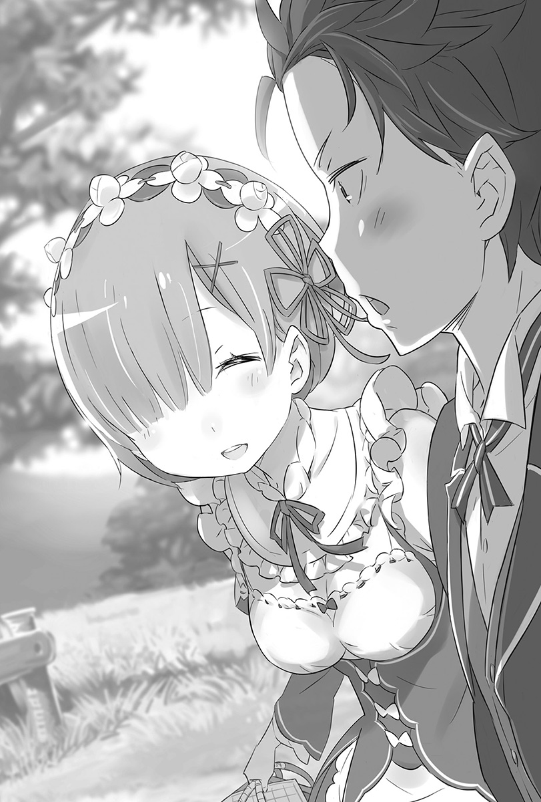
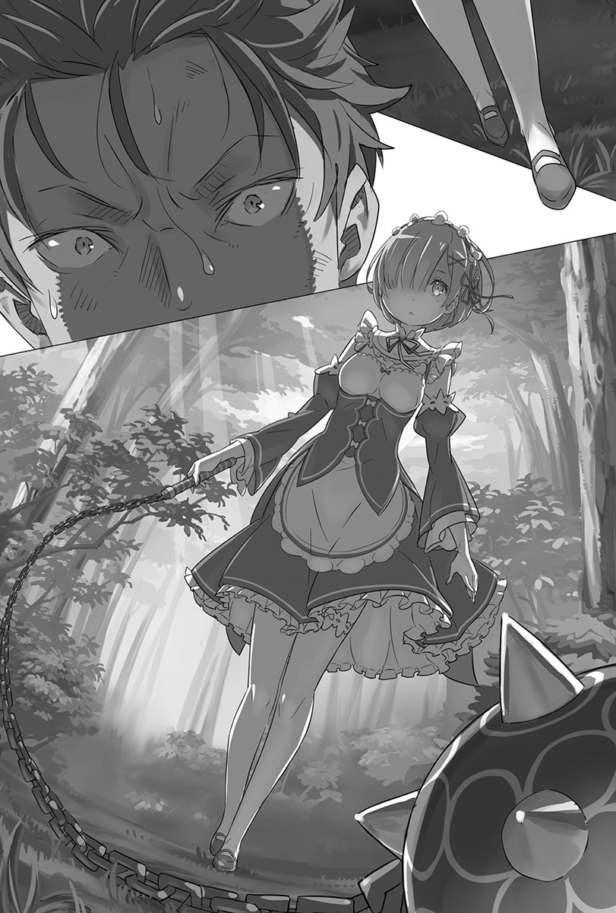
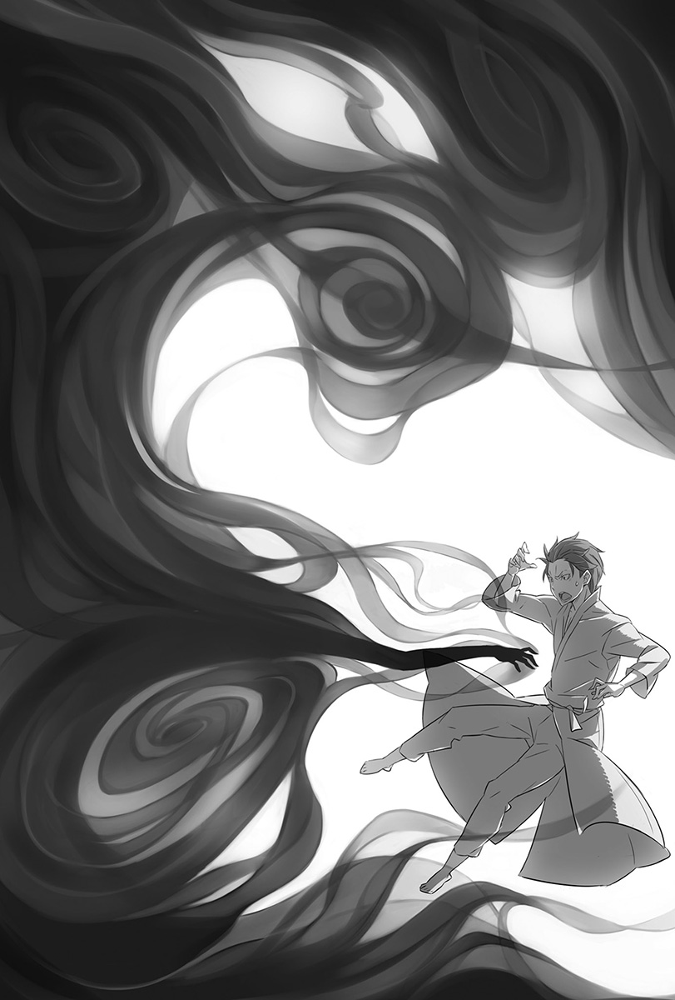
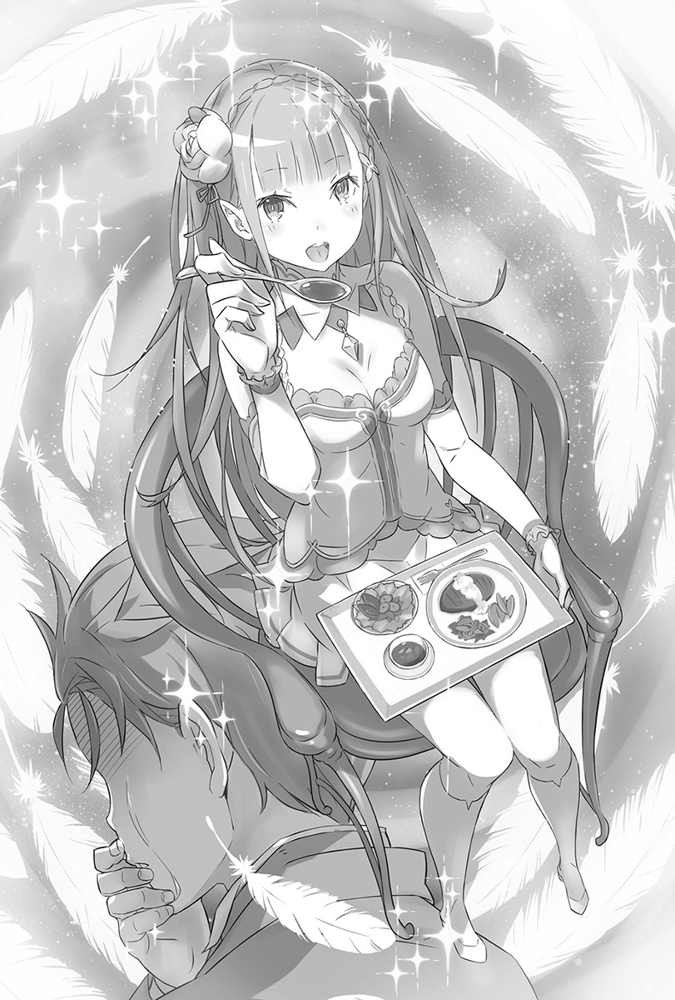
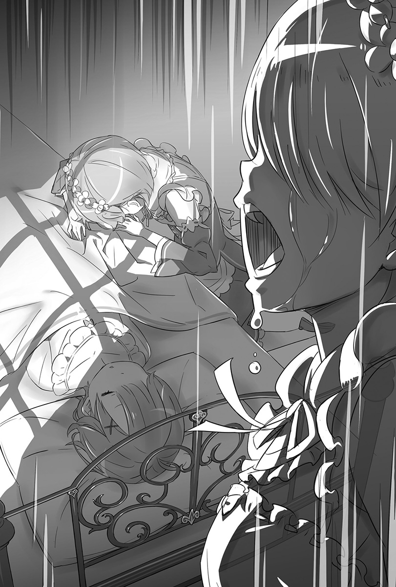
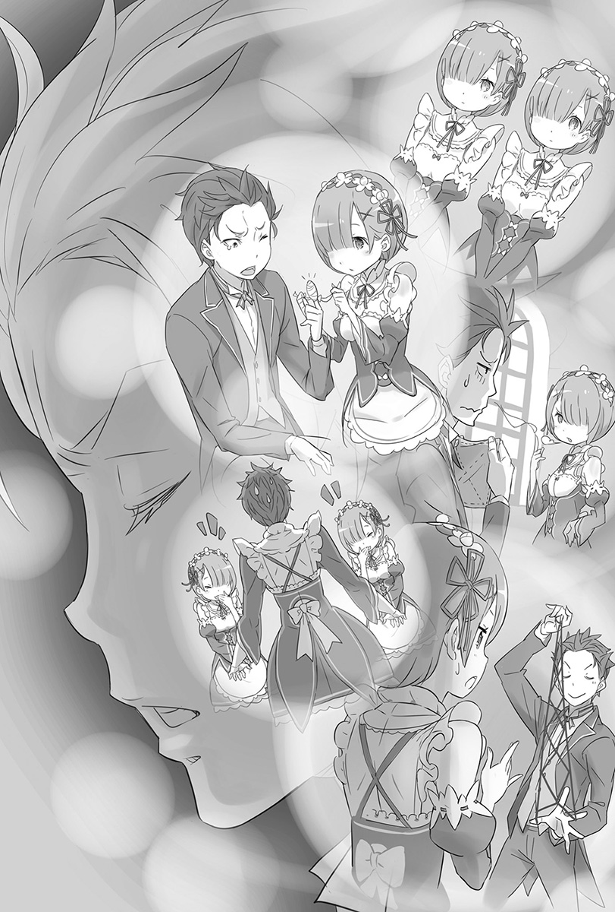

序章 『救赎的开始』
——那时候得到的情感，如今依旧深深牢记在心。
眼熟的景色因火焰而摇晃，熟识的人们逐渐化为无法言语的尸骸。
慢慢结束的世界，封闭起来的世界，没有回应的世界。
仅存严苛、不讲理，只会伤人的那种世界。
伸手、动指、颤唇，就算如此也要恳求。
因为即便身在毫无救赎的世界中，自己也只能这么做。
只能从挡住视线的背部后方窥探世界。
那道墙突然被撤去，变得宽广的世界炫目得叫人眯起眼睛，燃烧肌肤的火炎热度和色彩，血肉烧焦的气味和颜色，在空中飞舞的「角」的美丽与姿色，都刻画在那半开的眼眸中——
在这个即将结束的世界中，自己在想什么呢？
那时候得到的情感——如今依旧深深牢记在心。
在那之后，她的每一天都只是在对那份感情赎罪而已。
第一章 『自觉的感情』
1
睁开眼后最先看见的，是带着人工感的白色光芒。光芒后方是宽敞的天花板，垂吊下来的结晶闪耀着淡淡的光辉照耀室内。
用睡醒的脑袋确认眼前光景，昴的意识立刻清醒，他的体质是一旦睡醒就不会赖床。
「……枕头的触感真不一样，气味和质量跟我平常用的价格差了一位数吧。」
昴享受过棉被的触感后，从散发微香的床上撑起身体。
一眼就能看出这是上流阶层的房间。昴睡的床，大到可以睡五个人都还有剩——将近十坪大的宽敞房间里，就只有一张大得夸张的床，实在是很诡异的布置。
「只有墙壁挂画这种形式上的家具陈设反而更添寂寞啊，这真的能叫做是客房吗？」
完全清醒的昴下了床，稍微转动四肢确认身体状况。肩膀和双腿的转动良好，最后掀起衣服触碰腹部。
「肚子上的伤……没有了。淤青不用说，就连肚子被切破的痕迹都没有吗？从没有留下缝线这点来看，这个世界的外科手术很优秀呢。如果我的大活跃不是妄想的话啦。」
回想自己的肚子被深深砍破，以及这一连串发生的事。
原本在地球的日本当一名普通高中生的昴，突然被召唤到异世界然后死亡——就如字面上的意思，死过好几次。
而现在能够保住一命，是在多个奇迹重叠之下所产生的偶然。
「话说回来，在那之后过了多久……有没有可以显示时间的东西呢？」
绕着室内张望，但都没看到像日历或时钟这类东西。门上亮着黄色光芒的结晶很醒目，窗外的黑暗透露出现在是晚上这项新情报。
昴耸了耸肩，然后大口深呼吸，接着……
「总之不管怎样……这次是回避了『死亡回归』吧。」
道出这难以推断的结论后，终于下定决心要面对现实。
2
「第一次死得很惨，第二次是勇于赴死，第三次死得没有意义，第四次是在死斗结束后被流弹打中而死——不过却避开了这个发展。要是又死了，我就是彻头彻尾的路人甲了。」
把体重托付给床铺，昴扳着手指计算自己的死因，深感沮丧。
回顾过往，包含没死成的这一次，全都是死于刀伤，多到这阵子都不想看见刀了。
总之，在硬是回避了「死亡回归」后，时间总算是继续前进，原本受到致命伤的昴，可以像这样安然无事是因为……
「从状况来猜，是那女生……爱蜜莉雅用了回复魔法吧？」
浮现在脑海里的，是有着一头银发、蓝紫色瞳孔的美少女——爱蜜莉雅。
腹部的伤口会痊愈，一定是她治疗的吧。对有被爱蜜莉雅疗伤过的昴来说，会这么想是很自然的。
而且很自然地，昴必然会认为自己休息的客房——这间宅邸的主人也是爱蜜莉雅。不过……
「说到宅邸，也有可能是莱因哈鲁特他家。不管怎样……」
瞥了房门一眼，昴对杳无音讯的状况不满地叹了口气。
「一般来说，当我睁开眼时要有一名在枕边看护我的美少女对我说：『你醒啦？』才对呀。被召唤来的时候也没有美少女，这个召唤系统的BUG太明显啦……」
不但不能使出无双，邂逅女角的机会又很少，以召唤系统来说根本是不合格。
「而且，没动静到这种地步……不就只能自行确认现状好好给它大玩一下了吗？」
昴几乎是跳着起来，将手伸向房门。冰凉的空气从打开的门后流入，地板的冰冷直接传达给光着的双脚。
一出房间，眼前是墙壁和地板统一采用暖色系的宽大走廊，左右两边都是绵延的通道，恐怖的是走廊竟然长到看不见尽头。
「这豪宅气派过头了，叫人只能发出『呜哇啊』的声音啦。该说是超大还是广大无边……都没有人的气息耶。」
光脚走在走廊上，昴为这份静谧皱眉，连应该有的生活声响都完全没听见。
「撇开晚上这点不谈，这也安静过头了……这样会害我犹豫要不要吶喊耶。」
原本昴的性格应该是会大叫「有没有人在啊！」但以目前的状况来看，这么做可能会有危险。
毕竟现阶段，昴无从掌握自己是否置身在安全的场所。
是可以理所当然地判断有好心人将昴收留在宅邸内，但最糟糕的情况，就是在昴失去意识后，那个喜欢肠子的杀人魔跑回来绑架昴，这种可能性不能说没有。
话说回来，考虑到那种可能性后，就不能不采取行动。
「尽人事听天命，贤一不也这么说过吗？我也这么认为。」
顺带一提，贤一是昴的父亲，其实是个很有父亲架子的人。
昴迈开的步伐没有犹豫，但走了一段时间，他不解地歪着头。
「走这么久，别说是走到出入口了，连尽头都没看到，怎么会这样？」
异样的感觉挥之不去，决定走回头路再想想看该怎么做的昴转过身，结果却感到奇怪地皱起眉。
「这幅画……一开始走出房间的时候，不是在我的面前吗……」
站在走廊上的装饰油画前，昴双手抱胸沉吟。
画的主题是夜晚的森林，感觉跟自己一出房间就看到的是同一幅画。
如果不是自己走太慢……他突然想到一个可能性。
「地板有装设机关吗？该不会是让走廊像跑步机那样一直转动……吧？」
恐怕是在走廊上移动到某个距离，就会自动转移到地图另一头让人无限行走，这在RPG之类的游戏是很常见的地图圈套。
「要是走廊也会绕圈圈，那跟『死亡回归』还真是有够像的。」
没有征求任何人的同意，昴直接打开附近房间的门，结果里头什么都没有，可说是个家徒四壁的房间，当然里头也没人在。
「无限走廊和好几个房间……是不找到正确答案就出不去的关卡吗？」
尽管还无法完全接受异世界召唤这件事，但刚醒来就立刻遇上新的奇幻要素，真是叫人想抱头的状况。
「按照约定俗成的发展，我接下来得花上好几个钟头寻找正确的房间吧。现在肚子饿、精神耗弱、体力也快要见底，既然如此……」
倒吞一口气，擦去额头上的汗水，昴带着觉悟踏出第一步。
面对挂着油画的门，握住原本就是昴走出的房间门把，转动。
「回房间睡到别人来叫我吧，说不定是走开始的房间就是终点这种常见的设定。」
这种自暴自弃的性格和思维所触发的构想，促使昴没有确认就直接踏入房间——
「……怎么有个让人打从心底火大的家伙啊？」
然后，在毫无印象的书库里头，瞪着昴的卷发少女含恨说道。
3
——那是非常适合被称作「书库」的房间。
房间大小是方才客房的一倍有余，顶触天花板的书架埋没整个空间，架上的书籍整齐排列，其藏书量难以想象。
「唉，就算有这么多书也没一本我看得懂的……真叫人沮丧。」
即使扫视书架，也没看到写有日文的书皮，也没有拼音文字那类的书，全都是在王都看过的象形文字——这个世界的通用文字排列组合在封面上。
凝视看过好几次都看不懂的文字，昴忍不住叹气。
「一进来就没礼貌地看着别人的书架，然后又叹气……你该不会是来找碴的吧？是的话我接受喔？」
「说话那样带刺，可惜了你这可爱的脸蛋啰？来，笑一个笑一个。」
「贝蒂可爱是理所当然的，想看笑脸的话嘲笑的脸就够了。」
面对手指抵着脸颊卖笑的昴，少女在讨喜的脸蛋上露出无情的笑容。
这形容词在异世界用过几次了呢——美丽又楚楚可怜的少女。
年龄比在贫民窟遇到的菲鲁特还要小，大概才十一、二岁左右。大量使用花边的豪华洋装，格外适合她那张惹人怜爱的外貌。
浅奶油色的头发留得很长，烫成欧风长卷发是外观上最大的特征，要是肯露出微笑的话，任谁都会为她的可爱所融化。
少女抱着一本很大的书，坐在木制梯凳上仰望昴。
「你竟然知道嘲笑这种艰难的字汇呢。还有，你会不高兴莫非是因为我一猜就中？对不起喔，像这种解谜猜猜看，我从以前就很拿手。」
菜月．昴具备了就算没有提示，也能在多个选项里猜中答案的能力。过去昴就是凭这项技能，在无意识中击溃许多事件。方才的走廊难关，也只是在辉煌的成绩中再添一笔罢了。
「人家劳心劳力地构筑出领域，却被你那样就……差劲。」
「就GM来说，会希望玩家把所有事件都玩过一遍，这种心情我懂，抱歉啦抱歉。」
昴轻轻扬手道歉，少女半眯着眼带着恨意瞪过来。害臊地笑着响应那含恨视线的同时，昴在内心谨慎地整理现状。
从少女方才的发言来看，无限走廊的原因似乎就是她，但少女的计划却因昴轻率的举动而作废。
「唉呀，彼此彼此啦，就别提了吧。总而言之，告诉我这里是哪里吧。」
「哼，这里是贝蒂的书库兼寝室兼个人房。」
「我该对这答案感到扫兴吗？还是该为没有自己的房间，只能在这过夜的你感到悲哀？或者，该对把书库当成个人房这部分微笑呢？」
「稍微戏弄你一下你就讲那什么话！」
讽刺被人直接回敬而生气的少女——自称贝蒂的她鼓起脸颊，从梯凳上下来走向昴。
「贝蒂也快忍到极限了，要让你稍微了解自己惹到什么人。」
「喂，你想干嘛，别这样啦！如你所见，我是个毫无战斗力的普通人喔？」
露出水汪汪的大眼睛，把身子缩小，同时还微微颤抖身体表现出自己的柔弱，但是少女的步伐别说放慢了，反而还加快速度。
「——你就不要给我乱动。」
仿佛有一阵寒气窜过昴的背脊。
眼前的少女，已经走到伸手就能碰到昴的位置。
被个头只到自己胸部的少女用浅蓝色瞳孔凝视，昴整个人僵化，身体起鸡皮疙瘩，寂静在头盖骨里头敲出高亢的耳鸣。
「有什么话想说吗？」
听到少女的提问，昴在顷刻之间从僵硬中解放。在被原谅的这短暂瞬间，昴寻找哪句话最适合说出口。视线游移的昴，最后抖着嘴唇说：
「别、别弄痛我哟？」
「嘴皮子能耍到这种地步，实在叫人佩服。」
用真心佩服的口吻这么说完，少女的手就伸向昴的胸膛。手掌贴在胸膛上，手指温柔地划过表面，感觉痒痒的，然后——
「噗哇呜……！」
——下一秒，昴有种全身被火烤的错觉。
某种骇人的东西在体内肆虐，从脚趾到每一根头发仿佛全都被烧掉的感觉，不适感伴随着身体内外宛如被火焰手指摸遍的痛楚。
视野忽明忽暗，等注意到时，昴已流出大量泪水跪在地上。
「好像还没昏过去呢，就和听说的一样，是个健壮的家伙。」
「你、你做了什么？电钻头萝莉……」
「只是稍微干涉你体内的玛那而已，循环方式奇怪的王八蛋。」
少女蛮不在乎地说完，弯下腰，用手指戳着昴浑身颤抖的躯体。
「算了，至少确定你没有敌意。还有，方才对贝蒂的过分无礼行径，就用刚刚征收到的玛那饶了你吧。」
到达极限的昴，只是被戳而已就无法撑住上半身，整个头撞向地面。尽管如此，他还是花时间慢慢地转动脖子，瞪视带着嗜虐笑容俯瞰自己的少女。
「你，是那个吧……你不是人，这话不是在说你的性格。」
「都见过葛格了还这么慢才发现。」
少女愉悦地俯视趴在地面的昴，她的语气比外表还要年幼，反而让人感受到幼儿拔昆虫翅膀来玩的天真残酷。
「要订正……一件事……你连个性……都不是人……」
「高尚尊贵的存在，不是你的尺度可以测量的，人类。」
少女说出口的，是极度冰冷的话语。
昴感觉胸膛内部在闷烧，可是却连讲述感受到滚烫的力气都没有。意识无视昴的个人意愿，逐渐沉入黑暗。
——才刚睡醒，却又要失去意识了啊。
「死在这里的话，要跨越尸体很麻烦，去跟其他伙伴说吧。」
——说得像在讲虫子一样，不要这样形容我的尸体啦，你这家伙。说错了，是你这小鬼。
但连要这样耍贫嘴都没办法，昴再度陷入沉眠。
4
「唉呀，醒来了呢，姊姊。」
「是啊，醒来了呢，雷姆。」
再度睁开眼睛，是从两道音色相同的少女声音开始。
柔软舒适的触感就跟之前的床一样，烧灼昴睡醒的眼皮的，是从窗帘照进来的些许日光——这感觉应该是早上了吧。
「与其说是夜猫族，不如说有一半夜之眷族血统的我只要早上起床，胸口就会发热……」
边回想拒绝上学期间那日夜颠倒的生活，醒过来的昴撑起上半身，就这样旋转脖子、肩膀和腰杆，然后看向窗户。
「现在快要阳日七时了哟，客人。」
「现在已经阳日七时了呢，客人。」
声音亲切地告知时间。阳日七时——虽然不知道意思，但从字面上可以想象是早上七点吧。
「这么看来，刚刚醒过来那次不算的话，我睡了整整一天吧。没差，对于最高纪录是睡两天半的我来说没什么大不了的。」
「唉哟，真是废柴的发言呢。听见了吗？姊姊。」
「是啊，真是窝囊的发言呢。听到了喔，雷姆。」
「话说，从刚刚就一直用立体双声道责备我的你们是谁啊，小姐们！」
昴踢开棉被用力跃起，结果分别站在床的左右两侧，夹着他看的少女们吃了一惊，小跑步到房间中央会合。两人牵着对方的手，脸靠在一起看着昴。
并排而立的两位少女——是长相一模一样的双胞胎。
身高是一百五十公分的中间值，大大的眼睛和桃红色嘴唇，轮廓浅的脸蛋同时让幼稚和可爱并存，可用我见犹怜来形容。发型都是短发妹妹头，头发的分边方向不同，导致两人分别遮住左眼和右眼。
除了头发分边，还有发色——粉红色和蓝色这两样特征可区分。
大致观察过双胞胎少女的昴，内心被搅乱之余喉咙不自觉地颤抖。
「不会吧……连在这个世界，也有女仆装的存在吗！」
身穿以黑色为基础的围裙洋装，头上戴着白色发饰，裸露纤细肩膀的特殊改造女仆装与短裙相得益彰，清晰地表现出身材曲线，极尽煽情。就连对女仆装造诣不深的昴，都知道这打扮一定反映出设计师赤裸裸的兴趣——然而，双胞胎美少女穿着这身行头也是不争的事实。
「女仆给我的印象是涵养的体现……不过这样也不坏嘛！」
「不好了，刚刚姊姊在客人的脑里被迫遭受下流的凌辱。」
「糟糕了，刚刚雷姆在客人的脑里被迫接受耻辱的极限。」
「不要瞧不起我的脑容量喔，两位小姐全都是我妄想的牺牲品啦。」
昴的双手交叉，手掌在空中张开十指蠢动。这无意义的动作令两名女仆面露战栗，少女们松开牵着的手改为互相交握。
「请饶命，客人，请放雷姆走，污辱姊姊就好。」
「住手吧，客人，让拉姆逃跑，凌辱雷姆就好。」
「有够丑陋的，这什么姊妹爱啊！互相出卖对方就算了，还让我担任大坏蛋啊！」
就在两名女仆互推对方为受害者的时候，昴眯起自己的三角眼，犹豫该先对谁张开獠牙，结果突然发现……
「……就不能更安静一点起床吗？」
敲击打开的房门两声，看着三人的少女站在门口。
及腰的银长发今天没有绑起来，而是任其自然地落在背后。服装不是在王都看到的长袍，而是适合窈窕身段的抢眼白色造型服装。裙子意外的短，修长的绝妙双腿让昴忍不住摆出欢喜姿势。
「我就知道！我就知道我是被选上的人！」
「……不知道你知道了什么，不过我知道是很无聊的事，真是遗憾至极啊。」
银发少女——爱蜜莉雅用看起来很厌烦的眼神盯着喝采的昴。
爱蜜莉雅的突然造访，让昴睁眼后尽是困惑的心境一口气止跌回升。
接连出现的陌生人——特别是一开始的幼女让自己吃足了苦头，因此被召唤到异世界后，仅凭对话就成为知己的爱蜜莉雅，在自己心中占了特殊地位。
「听到碧翠丝在你血液量不够的时候对你恶作剧，所以有点担心……不过跑来探望的我根本是浪费时间。」
「可是睡醒后看到你的脸让我心情超好。对了，虽然会怕，但我想问你一件事。」
朝着纳闷的爱蜜莉雅，昴双手合十同时眼珠朝上看四十五度角。
「请问，那个……你还记得我吗？」
「那举动很讨人厌，还有这是什么怪问题，像昴这么让人印象深刻的男生，哪有那么容易忘掉。」
被微笑的爱蜜莉雅念到名字，昴安心地垂下肩膀，然后马上又注意到自己被女生直呼名字，难得地害臊了起来。
「请听我说，爱蜜莉雅大人，姊姊被那一位残酷凌辱了。」
「听我说啦，爱蜜莉雅大人，雷姆被那男的监禁凌辱了。」
扔下连耳根子都红透的昴，冲向爱蜜莉雅的双胞胎口说不是事实的话。听了两人的告密，爱蜜莉雅苦笑后斜眼看昴。
「竟然对你们两人那样恶作剧……我是不知道昴会不会争论说他没那么做啦，但我相信他一定不会这么做的，你们就别太戏弄人了。」
「好的——爱蜜莉雅大人，姊姊也有在反省。」
「好的——爱蜜莉雅大人，雷姆也有在反省。」
拉姆、雷姆，个别称呼自己的两人道出看不出来有在反省的宣言。是习惯她们这样的态度了吗？爱蜜莉雅丝毫没有介意的样子。
「那么昴，身体的状况如何？有没有哪里怪怪的？」
「嗯，喔，这么说来睡觉前全身好像被烧伤一样，我还以为会死呢，可是现在却完全没那种感觉，反而是睡过头觉得有点慵懒。」
「如果只是那样就行了，要不要出去散个步？」
「散步？」
面对轻笑的爱蜜莉雅，昴歪着头。
「对，散步。我刚好要去庭院做每日例行工作，要一道去吗？」
「每日例行工作……是要做什么？给花圃浇水？」
「有点不一样，是和精灵说话。每天早上，和订契约的孩子们那样互相接触，是我和他们的契约条件之一。」
精灵，这单字让昴想起了经常和爱蜜莉雅在一起的猫形精灵。
散步跟精灵的话题，真是个同时挑起好奇心和好色心的好提案。
「那就一起去，顺便当复健吧。爱蜜莉雅酱在庭院和精灵谈话的时候，我就到处走走拉拉筋活动活动啰。」
「嗯，只要不大声喧哗就行……咦？你刚刚说什么？」
「OK，口头约定好了，去庭院吧。」
「喂，你刚才说了什么？『酱』是什么？那是哪来的词汇？」
名字被冠上昵称令爱蜜莉雅很困惑。掩饰自己无法直呼她名字的害臊，昴同时看向站在身旁的两位女仆。
「嘿，女仆姊妹，我原本的衣服在哪？不知何时我穿得像是住院的病人，我想衣服八成还留在这屋子里。」
「你知道吗？姊姊，该不会是在说那块肮脏的灰色破布吧？」
「我知道啊，雷姆，大概是在说那块被血弄脏的鼠皮色烂布吧。」
「你们的发言有够大胆耶，就是那块肮脏沟鼠色的破烂布啦，没怎样的话就去拿来吧。」
在昴的要求下，双胞胎看向爱蜜莉雅，投以征求许可的视线。爱蜜莉雅抬起下巴响应，双胞胎就礼貌地鞠躬离开房间。
「虽然是我主动提出，但你绝对不可以勉强自己，因为你的伤势严重。」
「不过实际上，伤口愈合得很完美。喔，这么说来，对了。」
像是想起了什么，他端正姿势朝爱蜜莉雅慢慢鞠躬。
「为我治疗伤势的人，是爱蜜莉雅酱吧。谢谢你救了我，我果然很怕死，真的，死一次就够了。」
「一般都只有一次的机会吧……不对，不是这样啦。」
忍不住吐槽后，爱蜜莉雅睁着蓝紫色瞳孔看着昴。
「要道谢的是我，你不是豁出性命，在那里救了几乎不认识的我吗？所以治疗你的伤是当然的。」
真挚的眼神传达出感谢，昴忍不住呼吸一窒。
无法诚实回答的自己真是可恨。
——真想用「才不是那样」来回答爱蜜莉雅的「要道谢的是我」。先救人的明明是爱蜜莉雅。
但是那样的记忆，如今只存在于昴的心中。
咽下那不可能传达出去的感谢心情，昴笑说：
「——那不然，我们是互相帮助就正负抵销了，怎么样？」
「正负抵销……？」
「就是互不相欠，两人都站在对等的状态！所以说让我们好好相处吧，兄弟！」
若对方是贫民窟的居民，说到这就会轻松地勾肩搭背了，但是现在昴能做的就只有趁势模糊掉羞耻和害臊。面对这样的昴，爱蜜莉雅小声地笑出声。
「我才不要这么奇怪的弟弟呢。」
「这评语太辛辣了吧！？」
还有被若无其事当成弟弟的沮丧感。
就在两人相视而笑的时候，房门打开，双胞胎女仆回来了。看到两人分别拿着的运动服上衣和裤子，昴挺直背脊。
「又再一次，开始新的一天了呀。」
跨越「死亡回归」后的第一天，「真的」开始了。
5
断然拒绝刻意想要帮忙更衣的两位女仆，独自换好衣服的昴和爱蜜莉雅走到宅邸的庭院。
环视宽敞的庭院，昴叹气道：
「有够大的耶，住宅也很大，可是这庭院根本是原野了。」
有钱人宅邸的庭园——在漫画和动画常常出现，大到可以举办自助餐派对的风景就在眼前拓展。站在一望无际的庭院正中央，昴立刻开始做伸展操当作复健。
看到昴的动作，爱蜜莉雅一脸不可思议。
「好少见的动作，这是在干嘛？」
「唉呀？你没有热身运动的概念吗？就是在认真活动身体前，先把全身关节都松一松。」
「嗯——没什么看过呢，不过我知道突然活动身体很危险。」
「这个世界的人都不热身的喔？算了，没办法，要不我教你吧？来自我故乡的纯正热身操！」
「好、好啊，那就稍微做做看。」是被昴自信满满的气魄给压过了吧，爱蜜莉雅虽然后退却还是模仿着昴。昴要爱蜜莉雅站在身旁，然后大声说：
「广播体操第二段！双手前伸然后往上举，拉长背部的运动～！」
「咦，不会吧，什么！？」
「照着我的动作做做看，你将会吸收广播体操的真髓。」
训斥着困惑不解的爱蜜莉雅，昴同时背诵全国知名的广播体操口诀。
一开始倍感疑惑的爱蜜莉雅，在快结束时已经全心投入地在做体操。
做完最后的深呼吸，两人双手朝天高举，结束体操。
「最后举起双手，胜利！」
「胜、胜利——」
「很好，头一次就做得很棒，我授与『广播体操手初级』这个称号给爱蜜莉雅酱！」
全力做完广播体操，接受昴授与称号的爱蜜莉雅露出感动不已的表情。但在调整好呼吸后，她才想起一开始的目的。
「对了，话题被岔得很远，要是忘记我会被骂。」
说完，微微一笑的爱蜜莉雅从怀中取出绿色结晶给昴看。
「啊，这个是……」
「是精灵寄宿的结晶石啦，你认识帕克呢。」
「是那只在紧要关头跑去睡觉的小猫？它不是不知道我之后的活跃吗？」
「很遗憾，在事情告一段落之后，我听莉雅说过了哟，昴。」
仿佛对昴说的坏话起反应，结晶石发出光芒。响起的声音颇为中性，从结晶石溢出的光芒顷刻集结起来，在爱蜜莉雅的手掌上形成小小的轮廓。
巴掌大的娇小身躯，快和身体一样长的尾巴，用双脚步行的小猫精灵帕克，现身。
「哟，早安啊，昴，很棒的早晨呢。」
「对我来说从深夜到清晨这段期间是波澜万丈呢。不过，无限走廊和性格恶劣又威猛无比的幼女，跨越这些的早晨，和爱蜜莉雅酱一同流下热情的汗水……」
「不要说得让人怀疑好吗？」
爱蜜莉雅嘟起嘴巴责备，然后凝视掌中的帕克。
「早安，帕克。昨天对不起，让你勉强自己。」
「早安，莉雅。不过，昨天的事我认为是我不对哟，事态危险到差点失去你，就算感谢昴都还嫌不够呢。」
帕克用又圆又黑不溜丢的眼珠仰望昴，然后用手摸自己粉红色的鼻子。
「我得道谢，有没有什么想做的事？大部分的事我都能替你办到。」
「那么，就让我想摸的时候摸你的毛吧。」
面对大方的帕克，昴也立刻回答。
帕克和爱蜜莉雅双眼圆睁，一方面是因为他回答得很快，另外也是因为回答的内容叫人吃惊。
「你、你不稍微想一想再做决定吗？虽然看起来小小的不可靠，可是帕克的力量非常惊人喔。」
「有点过分呢，不过就跟她说的一样。别看我这样，我可是非常伟大的精灵哟。」
「喂喂喂，对我这种一流的顺毛工匠来说，随时可以玩弄想碰触的把玩对象，其价值可是用亿万财富来交换也不觉得可惜喔。唉呀，我是说真的。」
昴边说边履行权利，朝帕克伸出手。腹部、下巴，然后是致命的耳朵。
「耳朵太赞了！我已经迷恋上你的毛茸茸触感了！」
「我能稍微读取人心所以知道，不过会认真这么说的人实在太叫人吃惊了。」
被手指任意抚弄的帕克，喉咙愉快地咕噜咕噜叫。
昴和帕克玩耍的模样，让爱蜜莉雅放弃似地吐出叹息。
「那么，我去跟微精灵们聊天了……昴和帕克就在这边玩，不要过来打扰喔。」
「被抛弃了呢。」
「被抛弃啦。」
两人开玩笑地耸了耸肩，爱蜜莉雅没有答腔，无视他们快步走到庭院角落。她轻拂地面后坐了下来，闭上眼睛的她，周围开始被朦胧的光晕包围——这是很眼熟的场景。
「是微精灵吗？」
「没错，你竟然有办法区分，很多人都无法区分准精灵和微精灵呢。」
「我瞎猜的……才不是呢，但其实我也不知道区分的方法喔？」
昴会知道漂浮在爱蜜莉雅周围的光点是微精灵，是因为在王都发生的死亡回归中，有一次曾听爱蜜莉雅提起微精灵这个单字。
坐着的爱蜜莉雅小声地和微精灵交谈，仿佛和微笑的她同步，微精灵们不时也跟着闪烁微弱光芒。
「刚刚有提到和微精灵订契约，具体来说是要做什么啊？」
「进行和精灵之间的契约仪式——就是履行誓约。」
听到没听过的单字，昴皱起眉头。
「嗯——首先呢，精灵使者不跟精灵订契约就没办法使用精灵术，而契约的内容视精灵而定。到这边懂吗？」
「就是债主不同，利息或抵押品也不同吧，OK。」
「我是不OK啦，不过继续讲吧。总之，每个精灵要求的都不一样……但是像那种微精灵，只要用和术师接触这样的简单条件就能订下契约。」
「该说简单还是适合初学者呢？话说回来，照你刚刚说的，成形精灵要求的东西很不同啰？」
「聪明的孩子，领悟得快节省了说明时间，虽然有时候会莫名离题导致没有进展。」
「没有啦。」昴害羞地笑道。帕克对他投以温暖的视线后，抚弄自己的胡须。
「如你所言，像我这种有意识的精灵，要求就会严格一点。不过相对的，会给予契约者相应的贡献……我给莉雅的条件也很严苛喔。」
「我从刚刚就很在意，『莉雅』这个叫法很可爱耶。」
「还是输给你的『爱蜜莉雅酱』了——我下次也那么叫吧。」
「——算我求你们，绝对不要。」
爱蜜莉雅鼓着面颊介入两人的难笑话题。
回来的爱蜜莉雅，周围已经没有精灵的光辉，看来精灵TALK SHOW结束了。昴站起身，拍掉屁股上沾到的草。
「恳亲会结束了吗？感觉很简单就结束了呢。」
「因为很在意你们两个，所以就请他们提前结束，明天可得要好好聊聊了。」
爱蜜莉雅边说边伸出手掌，在昴下方移动的帕克跳了上去，它睁着圆滚滚的眼珠看向爱蜜莉雅，饶富深意地轻笑。
「不用担心，我探索了一下，没在昴身上发现恶意、敌意和危害的念头。尽管本性有点别扭，不过是个好孩子。」
「慢着……」
帕克的直接评语让爱蜜莉雅不禁哑口无言，接着吞吞吐吐地说：
「怎么在本人面前……那种事就算是真的，听别人这样讲不是会受伤吗？」
「啊——没关系、没关系啦，像我这种来历不明的家伙，试探我很正常，怀疑我也是理所当然，反而是刚刚爱蜜莉雅补充的话才伤人！」
昴对连忙用手捂住嘴巴的爱蜜莉雅露出苦笑。
帕克不可能毫无理由就接触自己，这点昴早就料想到了。
目前一点有用情报都没被套出的昴，爱蜜莉雅他们不会大意到毫无警戒就接纳。拉姆和雷姆的态度，也是这种思维的部分产物吧。
「说是这样说啦，但又没有能够好好说明的方法。」
只有记忆却没有户籍，就是昴在这个世界的现状。
被召唤来的事实难以说明，而且很有可能会被当成神经病。
既然如此，还不如交由帕克为自己做人格判断。
如果是可以读取内心表层，又深受爱蜜莉雅信赖的帕克，它说的话绝对比昴亲口说明还要有说服力。
「没事的，莉雅。不如说，昴本身也明白，甚至还利用我的读心术，真是坏孩子。」
「真是光荣的评价。就这样好好说服她吧，MY FRIEND。」
对昴的呼唤呈现愣住的表情，接着帕克捧腹大笑。
「真是好久没有被这样子对待了。嗯，我欣赏你。」
「可以的话，我想要爱蜜莉雅酱的评价。正所谓射将先射马，唉呀，没有马只有猫会有效果吗？……会怎么样呢？」
昴的手指抵着下巴认真烦恼，爱蜜莉雅惊讶地看向他。
昴疑惑地抬起眉毛，爱蜜莉雅说着「没事。」然后小小地倒抽一口气。
「——昴真的，很不可思议呢。」
「啊？」
「能够这样自然地接触精灵，而且还对我这种……半妖精抛媚眼，就算是开玩笑也让人惊讶。」
「如果不是开玩笑，就能让你大吃一惊吗？」昴虽然在内心这么说，但在看到爱蜜莉雅的微笑后就着迷到忘了。
因为她的微笑，就跟在王都互相告知姓名时一样纯粹。并不虚幻也不难过，光是看着内心就忍不住雀跃。
美丽流泄的银发宛如月之水滴般梦幻，肌肤像初雪一样洁白，蓝紫色的瞳孔仿佛施展了魅惑咒术，吸引昴的意识不肯放开。
高贵、美丽，拥有一颗百折不挠的内心，昴知道她是这样的人。
很自然的，差点对那张侧脸怀有感激之外的情感，昴连忙自制。
「唉呀，她们在干嘛？」
注意到什么的爱蜜莉雅开口说道，昴也跟着看向宅邸。
从屋子走入庭园的，是双胞胎女仆。
两人走到昴他们面前，庄严地行礼。
「——当家，罗兹瓦尔大人回来了，请诸位回屋里。」
毫无分秒落差，完美无缺的双声道。
虽然很讶异一丝不差的双人合唱，但双胞胎骤变的态度更叫昴吃惊。
先前的轻率感消失，从两人身上感受到的只有豪宅佣人的威严。
「是吗？罗兹瓦尔回来了……那就得去迎接了。」
「是，还请客人也移驾，主人说若您醒了就请您一并前来。」
帕克钻进爱蜜莉雅的银发里，抚摸头发接纳的爱蜜莉雅表情有点僵硬。凝视她的侧面，被指名的昴扭动脖子发出喀喀声响。
「话说，罗兹瓦尔是谁？」
「这栋宅邸的主人……对喔，都没跟你说明。」
察觉到自己的疏失，爱蜜莉雅用掌心遮着嘴巴。
「嗯，这个嘛，罗兹瓦尔他……你见到就懂了。」
「太快放弃说明了啦！这么没特征吗！？」
「——不，刚好相反。」
爱蜜莉雅、帕克、拉姆和雷姆，四人同时回答。
惊人的四重奏让昴目瞪口呆。用手将他的嘴巴从下方合起来的蓝发少女，严肃地一鞠躬。
站在旁边的粉红色头发女仆，用手指向屋子。
「不管用什么样的言语，都难以形容罗兹瓦尔大人，见到他本人之后，客人您就能理解。请放心，他是很温柔的人。」
重复叮咛反而煽动了不信任感，但双胞胎只是互看一眼然后点头。
勉强同意的爱蜜莉雅，朝困惑的昴轻轻伸出手。
「——我想，昴一定和他很合得来，不过可能会很累就是了。」
拍了拍昴的肩膀，爱蜜莉雅沉重地低语。
第二章 『约定之晨尚远』
1
「从上面看的感觉，就是那个吧……你的脑袋似乎蠢得可以。」
被双胞胎带到餐厅里说要享用早餐，却遇到用这番话来代替打招呼的卷发少女。
爱蜜莉雅为了换装所以先回房间，因此和她中途就分开，现在在餐厅里的就只有昴和卷发少女。少女的讽刺招来昴极为不悦的表情。
「在清爽的早晨，一碰面就突然讲那什么话，你这萝莉。」
「那是什么单字，听都没听过，只觉得很不爽。」
「就是不在攻略范围内，年幼的意思。我对年纪小的没兴趣。」
「……对贝蒂无礼到这种地步，反而让人觉得悲哀。」
刻意无视少女挖苦的话，昴环顾宽敞的餐厅。
餐厅中央放着一张铺了白布的桌子，有几个座位已经摆好了餐盘，如果也准备了昴的份，那位于末席的某一个位置就是昴的吧。
「连餐桌礼仪都不懂的我，也被允许列席吗？」
「傲慢至极。既然不懂就该有不懂的样子，乖乖低头不就好了。」
「与其向你低头，我宁可正大光明地坐在主位然后被骂得狗血淋头。」
面对红着脸展露怒意的少女，昴挥挥手就要往主位坐下去。坐在这个位置的，八成是爱蜜莉雅或屋主吧，可能性是各一半。
看到昴真的将屁股坐在主位上，卷发少女露出嫌恶表情摇了摇头。
「算了，随便你。在那之前，你没有感谢的话要对贝蒂说吗？」
「还感谢咧，先前你不是才挥开我求救的手吗？这样子还要求感谢，你是怎样被养大才能做出这种结论啊，真想看看你的双亲长什么样！」
「为什么是你生气！想生气的是贝蒂吧！难得好心……」
对挑衅的话还口，昴的响应让少女的声音大了起来，不过最后却越来越小声。少女不自然切断对话的方式，反倒促使昴继续挑衅，不过……
「打扰了，客人，送餐点来了。」
「打扰了，客人，送餐具和热茶来了。」
餐厅的门打开，推着餐车的双胞胎女仆走了进来。
蓝发女仆将色拉和面包等正统早餐内容摆上桌，粉红色头发女仆快速地在杯中倒茶并分配到每个座位前。热腾腾的香气，让昴的肚子忍不住叫出声。
「哇啊——不错不错，贵族味十足的餐桌。我本来还在想，要是摆满了异世界的奇特食物该怎么办呢。」
光是场所在异世界这点，就让人担心会端出什么料理，看到菜色昴总算安心了。
大致看来，没有会对肉体和精神构成重大危机的食品。
食欲高涨，昴将整个人靠向椅背，只让两个椅脚承受体重，椅子发出的吱嘎声响彻餐厅，在少女装模作样的脸蛋上添加不耐。
昴不知为何就是想要逗弄卷发少女。萌生让她假正经的表情因感情而瓦解的恶作剧念头后，昴全神贯注地滑动臀部——
「啊哈——啊，有没有——好东西呢？好——东西哟，好——东西。」
在那之前，踏入餐厅的新人物开心雀跃的声音中断了一切。
是个身高很高的人。
比昴高半个头，深蓝色的头发长到快要碰到背。
可是体格方面，与其说瘦，更接近纤细，肌肤的颜色也是病态的惨白。
配上端正的容貌，俨然是个抑郁阴沉的美青年。
左黄右蓝的不同瞳色，鲜明地强化了那个印象。
——要是没有那身配色奇特到爆的服装，以及根本是小丑的脸妆的话。
「……吃饭前还雇用小丑来做余兴表演吗？真搞不懂有钱人的想法。」
「你在想什么大致猜得到，不过贝蒂就不干涉了。」
「好冷淡喔，贝蒂。我跟你是同伴吧？再多跟我热情地聊天嘛。」
「贝蒂跟你之间哪有什么关系，还有，不准随便叫贝蒂的名字。」
态度冷漠的少女耸肩后脱离对话，昴对她这样的态度苦着一张脸。踏进餐厅的小丑和昴一样看向少女，然后瞪大双眼。
「喔——呀——？碧翠丝会在这真稀奇。隔了这——么久，终于想跟我一起用餐，这不是很开——心吗？」
「脑袋幸福的人只要有那边的家伙就够了，贝蒂只是在等葛格而已。」
无情地斩断亲昵的发言，少女——碧翠丝的视线投向小丑身后，比小丑慢踏进餐厅的，是换好衣服的银发少女。
「葛格！」
像弹跳似的起身，碧翠丝晃动长裙跑了过去。仿佛花朵绽放的笑容，洋溢着可爱魅力让人忘记少女至今的自大。
碧翠丝的视线前方站着爱蜜莉雅，但回应的人却不是她。
「哟，贝蒂。四天没见了，有没有好好当个有精神的端庄淑女呀？」
碧翠丝对一派轻松自银发中现身的灰色小猫——帕克点头。
「我满心期待葛格回来哟，今天我们一起过吧。」
「嗯，没问题呀，好久没这样了，今天就一起悠哉度过吧。」
「哇——好棒！」
跳下爱蜜莉雅的肩膀，帕克落在碧翠丝伸出的手掌上。怜爱地抱住帕克，碧翠丝开心地当场旋转。
「呵呵，受惊了吧？碧翠丝真黏帕克。」
「好久没听到『受惊』这种话了呢……」
露出调皮笑容的爱蜜莉雅，走向被这和乐融融景象吓到的昴。才刚对说出少用语词的爱蜜莉雅吐出既定台词，她就发出「咦？」的声音指向昴。
「唉呀，昴，那个座位……」
「啊，对了！不对，不是啦。这个啊，你看，椅子要是冷的坐起来可能会连心灵都跟着消气，所以我只是先帮忙温热，可不是想要间接接触喔？」
在双目圆睁的爱蜜莉雅面前，庞大计划落空的昴从椅子上滑下。
「唉呀唉——呀，别放在——心上啦。原来如此，你的体温或许没能传给爱蜜莉雅大人，但这个我会好好——慎重地收下——」
小丑伸手轻拍昴的肩膀像是安慰，然后笑了。轮流看着碰触肩膀的手和小丑温柔的笑脸，昴嫌恶地皱起脸。
「这个小丑是怎样，超爱装熟的。触碰舞娘是违反规则的哟？」
「什么时候变舞娘……不对，昴，这个人是……」
「唉呀唉呀唉——呀——没关系哟，爱蜜莉雅大人。想到他从濒死状态恢复到这么有精神的样子，不就应该——欢迎他吗？」
尽管口气让人不耐，但发言却都极为正经。小丑就这样承受大家的视线，拉了椅子慢慢坐下来。
坐在偌大餐桌最顶级的座位，也就是昴刚刚坐的位置。
「喂喂，不是我要说，随便坐在那里的话可能会被伟大的人骂喔。」
「不用担这个心……看样子，你还没跟昴报上名号吧。」
听到昴的忠告，爱蜜莉雅非常傻眼地说。只不过，她的傻眼不是对昴，而是对小丑。
「什么意思？」
「意思——就是，这个——意思啰。」
面对昴的疑问，坐在椅子上的小丑摊开双手回应。
「我是这栋屋子的主人，罗兹瓦尔．L．梅札斯——是也。你在寒舍平安无事、舒适地度过了呢，那比——什么都重要——菜月．昴。」
打扮成小丑的变态贵族，厚脸皮到神清气爽地报上名号。
2
以坐在主位的罗兹瓦尔为首，大家各自坐在准备好的座位上，开始享用早餐。
「嗯……比一般的食物还好吃。」
从陈列在眼前的食物中，掠夺色拉和汤到嘴巴里的昴说出感想。
「呵呵——对吧对吧，这样看来，雷姆的料理很经济实惠哟？」
自豪的罗兹瓦尔点头响应，昴看向应该是负责下厨的雷姆。雷姆在他的视线里头用手比出一个食指和小指往上翘的手势，虽然不知道那是什么意思，不过八成是这个世界代表V的手势吧？作为回礼，昴用双手比出青蛙的手势回应。
「这道料理是蓝发的……呃，可以叫你雷姆吧？是你做的吗？」
「是的，客人。屋里的餐桌是由雷姆负责，因为姊姊不太擅长。」
「哈哈——这对双胞胎擅长的技能不一样，那么，姊姊是比较擅长打扫喔？」
「是，正是如此。打扫和洗涤，是家事中姊姊最擅长的。」
「那雷姆是虽然擅长下厨，却不擅长打扫和洗涤啰？」
「不，雷姆基本上所有的家事都擅长，打扫和洗涤也很擅长，做得比姊姊还好。」
「姊姊的存在意义消失了耶！？」
万能妹妹，和连在擅长项目都不如妹妹的姊姊，以双胞胎来说反而很新鲜。
拉姆丝毫不在意妹妹的发言。没有订正代表是事实，不过就算如此，拉姆没有丝毫动摇的态度不会有问题吗？
「还是领域不同？拉姆是战斗系，朝庭院守门人的方向发展如何？」
「你不错——耶，拉姆和雷姆的个性都很强悍，所以第一次见面时都不太受欢迎。」
「在角色的个性深度上，因为主人太过特殊所以根本就不算什么哟，罗兹亲。」
被昵称为「罗兹亲」的罗兹瓦尔，用权势者的从容宽恕昴的发言。
对习于煽动对方引出情感的昴来说，他这是逃避发言的行为，不过昴并不在意，接二连三地吞食、消化盘中的菜肴。
「虽然有过饭很难吃要怎么办的念头，不过这么美味就没问题了。对吧，爱蜜莉雅酱。」
面对昴随性的呼唤，用餐巾擦嘴巴的爱蜜莉雅以扑克脸回应。昴歪头思考怎么了，结果她小声叹气。
「我说昴，用餐时禁止聊天，这样对两个人准备我们餐点的雷姆和拉姆很没礼貌，要是没有礼仪，可是会在重要场面以失败告吹的喔。」
「好久没听人说『告吹』了……总之你要说的是餐桌礼仪吧？都已经这种状况了，你现在才说？」
昴一边回应既定台词，一边用手指向餐桌。在宽大的餐桌旁，昴和爱蜜莉雅比邻而坐。
原本，两人的座位距离为活用餐桌的宽大而离得很远。
「你看，我想在爱蜜莉雅酱的旁边用餐，所以移了过来。罗兹亲默许的时间点你不说，等到现在才说？要不然，你可以把讨厌的青菜丢到我盘子里喔。」
「那圆椒拿去……唉哟，不是这样啦。讨厌，我简直像个笨蛋。」
说输人后就嘟起嘴巴的爱蜜莉雅，可爱得让昴笑了。
接着，昴从她方才的话中挑出疑问点。
「对了，罗兹亲，我刚刚好像听到爱蜜莉雅酱说，这栋豪宅的佣人就只有两个。」
「啊哈～现状确实是如此哟，就只有拉姆和雷姆而已。」
「照料这栋大得要命的豪宅的人只有两个，在讲究质量之前会先过劳死的。还是说……是无法雇用新佣人？」
面对昴的提问，罗兹瓦尔沉默下来，双手在餐桌上交握。他的脸上浮现笑容，但看着昴的双眸，里头的情感明显有所改变。
「你真的很不可思议——呢，来到露格尼卡王国的梅札斯边境伯宅邸，却还一派——搞不清楚状况的样子呢，亏你能通过王国的入国审查。」
「唉呀，在某种意义上，我有点像是偷渡入境啦……」
听到昴不经大脑的回答，爱蜜莉雅大吃一惊，眼神转为像在斥责稚子。
「受不了你，那种事还大剌剌地说出来，小心被可怕的人打得落花流水哟。」
「好久没听到『打得落花流水』这种话了。」
「不要扯开话题。我说昴，你真的不要紧吗？你身边的人都这样吗？还是只有你特别无知？」
对真心担心自己的爱蜜莉雅感到过意不去，昴反省自己的态度。
「啊——是我的记性比较差吧，要是不麻烦，愿意解释的话在下会备感荣幸。」
「听你会用这样的用字遣词，感觉就像是规矩人家的小孩……」
「在正式社交场合说出那种话的话，我的社交界出道之路会堵塞的。总觉得爱蜜莉雅酱在这方面的知识意外贫乏？我刚刚的尊敬语和谦让语可是不按文法、乱糟糟的哟？」
「呜……我无法否定。」
被昴指出问题点的爱蜜莉雅缩小身子。虽然惊讶爱蜜莉雅有这样的一面，不过为退缩的她说话的，是坐在主位一直不说话的罗兹瓦尔。
「你的说法我也不是不懂，不过爱蜜莉雅大人现在还——在学习哟。」
「学习啊，那方面可以牵扯到刚刚的话题吗？」
「你果然有在动脑，正因为有在动脑，才会有像是不经大脑的发言。」
面对貌似佩服的罗兹瓦尔，昴抖擞肩膀后拍打自己的胸部。
「活着动脑思考是理所当然的吧，四面楚歌、生死一线间的紧要时刻，彻底思考如何避免腹部内容物哗啦啦跑出来可是人类的义务。」
「哗啦啦跑出来的形容，简直就像是有亲身体验……嗯，回到原本话题，昴你知道这个国家——露格尼卡王国现在是什么状况吗？」
「完完全全、彻头彻尾、一点都不知道。」
「被你那样神清气爽地断言，叫我对你的生存方式感到惊讶。」
这不是称赞的话吧，看到爱蜜莉雅慈爱的眼神后，昴如此心想。虽然不是使用挑起保护欲的战术，但内心的距离感确实变得像母亲与幼童一样。
「是说，提到国家的状况……是发生了什么坏事吗？」
「不是很稳定的状态啦，毕——竟呢，现在的露格尼卡『没有国王』。」
品味罗兹瓦尔的话，理解意义后昴的呼吸一窒。
朝画着小丑妆的男子投以警戒眼神后，昴立刻在座位上摆开架势。
「不——用那么警戒，没必要担心，因为这已——经是市井小民都知道的严——重事实喔。」
「这样啊。不对，是那种被告知危险秘密而无法活着回去的剧情吗？」
「由我告知才知道，昴真可怜……总而言之，国内因为这样很不安定。」
原来如此。昴能理解，王位虚悬的状态，对王国的经营型态是致命伤。不管是病逝还是其他原因，国王突然的「死讯」都会动摇整个国家。
「不过，这种情况，一般来说不是由国王的子嗣来继承就解决了吗？」
「一般来说——是这样没错，可是呢——事情的起因要回溯到半年前。在国王驾崩的同一时期，城内有瘟疫蔓延。」
对外宣布传染病只有特定血统的人才会发作，罗兹瓦尔娓娓道来。
据说，在王城里头生活的国王及其子孙全都因此灭绝。
「既然是生病就不能责备本人啦，不过这样一来国家会变怎样？既然国王的血脉没有了，那就是以民意为优先选出总理大臣啰？」
「后半段我完——全不懂你在说什么，不过，目前王国的运作是由贤人会在执行。他们每一位的出身，都是在王国史上留下显赫名声的豪门世家，所以王国的运作没有问题。不过——」
罗兹瓦尔在这边停顿，收敛表情。
「——没有国王的王国，不应该存在。」
「这倒是。」
就算只是装饰，没有头脑存在的组织就不成立，国家也是一样。
「原来如此，我越来越了解了。也就是说，这王国因为没有国王而陷入选王的混乱风暴中，还因此缩小与他国的关系呈现锁国状态。这时出现了神秘的外国人——我，怎么看都超级可疑！」
「再——附加说明，接触爱蜜莉雅大人是想要和梅札斯家攀——上关系。虽然都是环境证据，但只要有那个意思，光凭这样就足以……」
罗兹瓦尔闭上眼睛，手摆出刀子的姿势，抵着脖子比出斩首的模样。看着罗兹瓦尔的恶作剧，昴因这突然的讨厌预感而止不住冷汗。
没错，从刚刚开始昴就一直很在意一件事。
「为什么……豪宅的主人要在爱蜜莉雅酱的名字后面加『大人』两个字？」
在宅邸里头地位最高的人物，却释出最大程度的敬意。
昴感觉胸口的不安滋长，快要开出黑色花朵。罗兹瓦尔朝他一笑。
「这是当然——的啰？对地位比自己高的人就要用敬称——嘛。」
嘴巴张开、浑身僵硬的昴，用仿佛会发出齿轮摩擦声的机械式动作看向爱蜜莉雅，结果一脸严肃的少女吐气，像是听天由命。
「我没想过要骗你的。」
「——呃，所以说，爱蜜莉雅酱是……」
得不到教训继续用昵称的昴，被补上最后一刀。
「我现在的头衔是露格尼卡王国第四十二代『国王候补』人选之一，那边的罗兹瓦尔边境伯是我的后盾。」
被告知的事实，让昴深切体会到自己的不敬行为已经突破天际。
3
——在异世界邂逅的美少女，是女王陛下。
单单只看这句话，完全是正统派的奇幻异世界风格。
正确来说是女王候补，但一想到自己至今是怎么对待这位女王候补的，他忍不住说道：
「就算有三条命也不够用啊……」
「抱歉，吓到你了，我没打算瞒你这么久的。」
「嗯呀，我没生气，爱蜜莉雅酱真的像天使一样温柔呢。」
「咦！？」
昴过于直接的话让爱蜜莉雅说不出话来，接着脸颊泛上红晕。
「没有啦，其实我能做到这样，原动力全都是从爱蜜莉雅酱开始的。以这层意义来看，这真的是E．M．T（爱蜜莉雅酱．真的是．天使）哟！」
「……唉，总觉得能了解要如何和你应对了。你那不管对谁都能说的俏皮话就先忘了，直接进入主题可以吧。」
脸上还留有一抹残红，爱蜜莉雅拍手导正气氛。由于她拉开椅子恢复先前的距离感，昴也只能无可奈何地遵从。
「好——啦，虽然岔——到感觉不——错的歪路去，不过就进入主题——吧。昴，准备好——了吗？」
「刚刚的话题走向没让我脑袋飞掉，就让我祈祷不是坏事吧。」
听到昴说的话，罗兹瓦尔吹响口哨，爱蜜莉雅也露出意外的眼神，因为他们判断昴方才的言行举止，具备了探查两人真心的意图吧。
当然，那是他们解读过度，不过昴没让他们察觉到这点。
「刚刚只是在进入主题前，顺便提一下我的预测。刻意把话题导向爱蜜莉雅酱是女王陛下候补，能在包含这点的情况下说明状况吗？」
「……其实，昴很聪明吧？还是脑袋有问题？」
「这个二选一踩到我的极限啰！」
听到昴的抱怨，爱蜜莉雅轻轻吐舌谢罪。因为很可爱，所以原谅她。
昴草率的内心戏先不管，罗兹瓦尔在爱蜜莉雅道歉后紧接着说：
「你的预测非常正确。你的处境，和方才的事大有关系——爱蜜莉雅大人。」
「嗯，知道了。」
点头回应的爱蜜莉雅，从怀中拿出某样东西放在餐桌上。
看到伸长的纤白手指推出的东西，昴挑起眉毛。
「——这不是那个徽章吗？」
在白布上闪耀光辉的，是中央镶着宝珠，以龙为图腾的徽章。
它曾被手脚不干净、名叫菲鲁特的少女给偷走，是昴死了三次才终于归还给原持有者爱蜜莉雅的重要道具。
宝珠闪闪发亮，深邃清澈的颜色让再度目睹的昴怀抱敬畏之心。
「龙是露格尼卡的象征，重视到了自——称是『亲龙王国露格尼卡』的地步。城墙和兵器到处都有龙的图像，其中又以这枚徽章最为重要。」
罗兹瓦尔说到这故意停顿，昴朝他送上催促的视线，结果罗兹瓦尔用目光催促爱蜜莉雅继续。爱蜜莉雅闭上眼睛，颤动嘴唇。
「王选参加者的资格——这徽章是用来确认，持有者是否适合坐上露格尼卡王国王位的试金石。」
紧张声音告知的事实，让昴的眼珠子都快掉下来了。餐桌上的徽章是以展开双翼的龙为意象，宝珠的光芒证实了方才的话皆为真实。
「怎、怎么会……竟然搞丢过王选参加资格的徽章！？」
「讲搞丢很难听耶，是被手脚不干净的坏女孩给偷了！」
「一样啦！」
大叫拍桌的昴站起来，虽然力道大到餐具差点掉出餐桌，但在场随侍的雷姆完美地进行支持，但昴看都不看一眼地说：
「要是真的弄丢了，你倒是说说看该怎么办啊！？那不是扔掉也没啥大不了的道具吧！区公所可是不会再发放的哟！？」
「好——啦，弄丢的话——不是道歉就能了事，这点——毋庸置疑啦。」
看到昴慌张地大吼大叫，罗兹瓦尔将没必要的大衣领拉整后回答。
「所谓的国王，就是背负王国之人。要背负这重责大任的人，若是连一枚小小的徽章都无法保护就太荒谬了，会让人无法想象为何要将国家托付给此人——吧。」
「那是当然，这种事要是被知道一定会闹得沸沸扬扬……正因如此！」
围绕被偷的徽章在王都发生的骚动，然后是这场款待，导出的答案只有一个。
「曾弄丢徽章的事要是公诸于世就惨了，所以找徽章的时候爱蜜莉雅酱才会坚持要自己处理，不肯借助外力。」
「……对，就是这样。」
「偷徽章的犯人是菲鲁特，但委托者是艾尔莎，那家伙也说她是受人之托……这样看来，是有人想要妨碍爱蜜莉雅酱成为女王陛下啰？」
「正——是如此。想让她失去王选参加者的资格，因此想到了抢走徽章这个简单的方法——呢。」
昨天发生的各种事情，在昴的心中开始连成一条线。
顽固抗拒帮助的爱蜜莉雅，菲鲁特和艾尔莎的委托人，还有让昴三度被杀的原因，这枚徽章就是有这种价值，也是昴能像这样住在豪宅还被款待的理由。
「重新思考后，我超GJ！让我对奖赏的期待更高了！」
不用想也知道自己的功劳有多大，昴得意洋洋，连呼吸都跟着变用力，俯视爱蜜莉雅活动手指做出色眯眯的样子。完全是等着被吐槽的模样，但是……
「嗯，就是这样。昴对我来说是大恩人，光是救你一命也不足以回报你的恩情，所以尽管开口吧。」
「啊？」
「只要能力所及我都会办到，不，是一定会办到。昴会找我，多少也是有这层意思在吧。」
看她手贴胸膛一脸认真地回望自己，昴说不出话来。
脸颊肌肉僵硬，紧张感的刻度无法和周遭的严肃氛围对齐。
——糟糕，我太不会看气氛了。
没能看出周遭气氛的紧张感，无法跟爱蜜莉雅认真的眼神热度咬合，使得昴不知所措。结果，为难到最后……
「……干什么？」
「没有，忍不住就伸手了。」
昴的手指滑进盯着他看的爱蜜莉雅头发里。
与其说是摸头，更像是手指在享受头发的触感。
「如果要奖赏，看，这样子就够让我开心了，我要求不高。」
「……你也很爱摸帕克的毛，昴是不是会对体毛产生兴奋感啊？」
「别把头发归类在体毛里头啦！你这可是漂亮的银发耶！」
惨不忍睹的评价令昴哀嚎。爱蜜莉雅的银发摸起来就像丝绢一样，既柔软又具有异于帕克毛发吸引昴的魅力。
不过听到昴的话，爱蜜莉雅不知为何痛苦地垂下眼帘。不清楚她这举动的理由，昴歪着头思考。就在他脖子侧倾时，感受到来自背后的视线。
「啊，妨碍到你了——吗？如果是那个，我们就先退下啰？」
「那种顾虑在说出口的时候就成了多管闲事，而且我的发问时间还没结束。」
继续享受爱蜜莉雅的头发触感，昴用空着的手指向罗兹瓦尔。
「我知道爱蜜莉雅酱是女王候补了，不过身为她后盾的你，又是站在什么样的立场呢？」
「旁边的人都在看哟——你啊，从刚刚——对事物的理解力就好得没话说，以出身成长都是平民的人来说，你会不会懂得太多——了呢？」
「能得到这份赞美让我光荣备至，不过这单纯是受到动画和轻小说的影响，让我的大脑习惯了奇幻故事的走向罢了。」
奇幻题材的世界观总是掺杂难以记住的原创单字，身为跨越无数这种障碍的一名读者，这种程度的设定就算公布了，也无法让脑袋陷入混乱。
「嗯，好像没有隐瞒——呀。我的头衔是露格尼卡王国的……大致就是边境伯的身分啦。如果要更好听的职称，就是宫廷魔术师——啰。」
「宫廷魔术师……也就是城堡聘雇的魔法使者？」
「对，而且还是首屈一指的魔术师……这人就是王国里最厉害的魔法使者。」
接着昴说话的人是爱蜜莉雅，不过不知怎么的，她的表情有点不高兴。对她那样的反应似乎很开心的罗兹瓦尔，放松紧抿的红唇笑了。
「就顺着这些话继续说下去吧，我的立场是支持身为国王候补的爱蜜莉雅大人，把后盾这说词换个说法，就是条件不错的资助人。」
「资助人啊。」
赞助商代表，这就是罗兹瓦尔目前的头衔啰？
昴重新打量高个子小丑，然后偷偷朝爱蜜莉雅使眼色。
「虽然有点难以启齿……不过爱蜜莉雅酱，你就不能挑更好的人选吗？」
「没办法呀，我在王国内又没有可以倚靠的人，原本愿意协助我的就只有喜好异于常人的罗兹瓦尔……」
「原——来如此，消去法啊。」
「你们两位，不知道眼前的资助人很可怕——是好事——呢。」
虽然觉得被贬低，但别说是生气了，罗兹瓦尔还成熟地含笑对应。是器量大呢？还是他就是那种要被人轻蔑才能感受到愉悦的个性？
「那么，回到正题，罗兹亲是爱蜜莉雅酱的资助人，这我知道了。从小地方处处都隐隐可见天然呆和土包子部分的可爱爱蜜莉雅酱，昨天会在王都单独行动，不是非常罕见的事吗？」
「那是第一次——吧，原本拉姆应该也在一起——的。」
罗兹瓦尔苦笑着将话题扔向拉姆。昴朝话题所指的方向看过去，拉姆把头发旁分的方向改成和身边的雷姆一样，然后露出什么都不知道的样子。发色完全不同，有乔装就跟没乔装一样。
「那个自信满满觉得『好极了，蒙混过去了！』的脸，叫人看了就火大耶。」
不管当事人有没有反省的意思，反正有取得口头确认就成功了。然而，这时出现了举起手、满脸尴尬的爱蜜莉雅。
「那个不是拉姆的错，昨天是我……该说是输给了些微的好奇心吗？总之就是胡里胡涂地和拉姆走散了。」
「那个像萌角的理由是怎样，这跟爱蜜莉雅酱的天然呆满出来不同，仆人没有遵守主人的命令是事实哟。你怎么说——咧？」
昴双手指着庇护拉姆的爱蜜莉雅，然后手指直接转向罗兹瓦尔。
「确实也有一番道理，拉姆的监督不周，或许——我也要负责。不过，把事扯到这来，你究竟想说什么——呢？」
「很简单，没有盯着身分重要的爱蜜莉雅酱是你那边的疏失，而我就是针对这点攻击的坏蛋。我的做法是只要被我找到可趁之机，能榨干的我就尽量榨干。」
昴说的话，让室内所有人的表情为之一变。
爱蜜莉雅皱眉，双胞胎用怀着歉意和敌意的眼神瞪昴，碧翠丝充满热情的眼神依旧向着帕克，帕克则是在鸡蛋料理前滑倒，头插进蛋黄里头。罗兹瓦尔浮现了然于心的微笑，点头说道：
「原——来如此。确实，就私人财产而言，比起等同身无分文的爱蜜莉雅大人，我这个资助人更适合用来——要求奖赏呢。」
「对吧？而且罗兹亲应该不会拒绝才是，毕竟我不但是爱蜜莉雅酱的救命恩人，还是防止她从王选之争中落马的救世主或啥的！」
从椅子上站起来，昴指着天空做出胜者姿势。
「我不会——不认同，因为这是事实。那么，以这为出发点，可以换我问你吗？」
同样站起来的罗兹瓦尔，以身高优势俯瞰昴，爱蜜莉雅担心地看着互瞪的两人。
「你想要——什么呢？就现状来说，我不会拒绝，为了掩盖遗失徽章的事实，我什么都愿意支付。来——你想要什么？」
「嘿、嘿、嘿，不愧是贵族大人，很懂事理嘛。奖赏就如我所愿，而且罗兹亲不得拒绝，男子汉绝不食言！」
「很豪迈的发言——呢，确实如此，男人不该找借口，我绝不食言。」
昴那俨然是小恶棍的态度，令身后发出好感度下降的声音，但这一切全都是为了引出罗兹瓦尔承诺自己的伏笔。
罗兹瓦尔首肯后，昴会心一笑。
「我的愿望就一个，雇用我在这豪宅工作。」
和前面落落长的开场白相反，昴的要求简洁有力。
昴的要求让身后的女性阵容都呆住了，缺乏表情变化的双胞胎面容浮现困惑，碧翠丝露出真的很嫌恶的表情，而爱蜜莉雅……
「不、不是我要说，你那也太……」
与生俱来的美貌和神秘感，让她即使翻白眼效果也减半。
「惊讶的表情也很可爱，不过你就这么反对我的提案？」
「不是那样，而是你太无欲无求了！」
气得好像是在说自己的事，爱蜜莉雅拍桌后逼近昴。
「你懂吗？帕克那次就算了，刚刚你又……不对，说起来，你在王都时也只要求知道我的名字。」
爱蜜莉雅罗列出自己所知昴应该可以得到奖赏的场合，知道那些结果的爱蜜莉雅摇头，因为她无法理解昴在想什么。
「我的……你根本就不懂我感谢你的心情，那样的要求……不管再多也完全无法回报你救我一命的恩情！」
语尾越来越弱，爱蜜莉雅手掌贴着昴的胸膛垂下头。
听到爱蜜莉雅的恸哭，昴深切感受到自己思虑不周。
爱蜜莉雅一直觉得欠自己人情，因为自己索求的回报和恩情完全不对等。
可是就这点来说，昴也一样。
昴也一直觉得亏欠爱蜜莉雅。
而且，还是无法再向爱蜜莉雅求得答案的亏欠。
因为在这个世界，已经没有可以回报的恩情。
爱蜜莉雅湿润的蓝紫色瞳孔正面仰望昴。
认真眼神透露出的恳切色彩，让昴舍弃打马虎眼蒙混现状的选项。
然后极尽所能以真挚的态度，向她传达自己的真心。
「爱蜜莉雅酱不了解吧，我每一次每一回，都是真心真意地说出打从心底想要的事物哟？」
「——咦？」
「那时候，我想知道你的名字。明天无从预料，在新天地不安得叫人惊慌失措，或许冷静下来思考就会有许许多多必需、想要的东西——可是，我是不对自己说谎的男人。」
死了三次，就为了得到那报酬。
只是为了眼前银发少女的笑容，还有想知道她的名字而豁出性命。
——在那瞬间，当然不可能去期望更多的奖赏。
「对罗兹亲的要求也是一样。我现在啊，是彻头彻尾的穷光蛋，虽然要一大笔钱痛快地挥霍也是可以，可是能够持续取得基本生活的资金也很不错吧？」
「……那也用不着当佣人，当个食客不就得了？」
「还有这招啊！罗兹瓦尔先生，请务必让我当食客……」
抓着一丝希望看向罗兹瓦尔，但他的双手在头上交叉。
「只有最初的要求有效，因为男子汉——绝不食言的嘛。」
「对——喔！说得没错，男子汉绝不食言！」
方才某人的发言被反弹回来，只能哭着咽下。
「刚刚有一瞬间对你另眼相看……看来似乎是我想太多了。」
「再加上得到爱蜜莉雅酱的这个评价，倒霉事怎么接踵而来啊！」
昴因自己的失言，失去了理想的异世界好吃懒做环境，再加上美少女对自己的好感度也跟着下降，实在是祸不单行。
「不管怎样……就是这样了。只靠拉姆和雷姆照料豪宅负担也太大了，男仆已就定位，请多多差遣。」
「虽说的确是很迫切的问题——呢，不过就像爱蜜莉雅大人说的，我也认为——你太没有欲望——啰？」
罗兹瓦尔第一次露出带着苦涩的笑容，昴朝他竖起指头左右晃动。
「我可是超级贪婪的男人喔。看就知道了吧？能够合法地和超级可爱又超级符合我喜好的美少女生活在同一个屋檐下，只要距离缩短了那心灵的距离也会跟着缩短，机会变成无限大！」
「原——来如此，确实是那样。和喜爱的女性身处在同个职场，可说是——难能可贵的机会，真——的是很棒的状况。」
「对啊，而且——」
昴停下摇晃的手指，将手伸向头部，然后抓乱自己的黑发。
「像我这样来历不明的家伙，与其不清不楚地放着，还是留在手边比较好吧？这样还能看出我对爱蜜莉雅酱是有用还是有害。」
昴非常清楚自身的立场有点糟，要是事态演变成没有张开防护线就想离开宅邸，事情一定不会那么简单就结束吧。考虑到这点，他才会做出这种发言。
如果罗兹瓦尔没有丝毫头绪，这话铁定会成为让人说不出话的找碴。
但是，有别于昴这样的尴尬心情。
「就这么办吧。你希望——能够打好关系吧？」
立刻反击的罗兹瓦尔闭上一只眼，只留黄色瞳孔看着昴回答。
那妖异光彩里头的感情，昴完全无法读取。
虽是题外话，但情不自禁顺着现场气氛做出类似告白的发言，昴因而内心娇羞不已。
但是，畏畏缩缩地窥视爱蜜莉雅的表情后……
「真是的，昴实在是个拿你没办法的孩子……怎么了？」
被这样平淡的响应，昴也只能语塞。
是自己想太多吗？还是这也是不习惯跟美少女相处，经验值低下所导出的结果？
「喜欢的女生这么不把自己当成对象，反而让我燃起斗志了，喝！」
尽管置身在格外紧迫的环境，昴却朝完全偏离的方向提起干劲。斜眼看他的爱蜜莉雅，小声地自言自语。
「话说回来……拉姆和雷姆，哪个是昴喜欢的人呢？」
曲解方才的发言，爱蜜莉雅手指贴着嘴唇，任错误的想象在心中膨胀。
4
——拖得很长的早餐时光结束，雇用昴的事情也大致决定。
看出事态发展，最早离席的是卷发少女——碧翠丝。
「事情好像定下来了，贝蒂也该跟葛格回去了。」
解决完自己的餐点，碧翠丝打算早早离去。对她连餐具都不收的无礼态度忍不住皱眉，昴竖起的手指朝旁挥向现在想要走人的少女。
「等一下，没必要这么赶吧……是说，也该不靠他人自己自我介绍才对。现在，就只有你的身分我还不知道，你是罗兹亲的妹妹？」
「竟然被当成那个的亲戚，看来你惹火贝蒂的功夫也很高明。」
相较于不爽爆表还叹气的碧翠丝，被人说得很惨的罗兹瓦尔只是开心地笑。在碧翠丝危险的视线中，昴缩起肩膀。
「贝蒂是罗兹瓦尔家禁书库的图书馆员啦。」
「葛格！？」
不过，悠哉插嘴的灰色小猫的发言，打乱了即将开始吵闹的气氛。小猫正在啃咬洒上砂糖并经过油炸，像是脆饼的土司边甜点。
「好甜，好吃，呜喵！」
「因为甜味而失去理智，这样不太好喔。是说，可以麻烦你讲得详细一点吗？」
昴一边催促沉浸在甜味中的帕克，一边趁机摸它耳朵享受至高无上的触感。被抚摸的帕克从盘子里抬起头。
「罗兹瓦尔身为魔术师本事十分了得，而他们家门第显赫，自然也会有代代相传，不能让人看到的书籍啰。贝蒂是遵照契约来守护那些书的，对吧？」
「嗯，就是这样，葛格说的话不论何时都正确无误。」
简直是跟盲从没两样的发言。碧翠丝的手伸向提心吊胆的昴没摸的那只耳朵，手指一碰到猫毛，少女俏丽的脸蛋就开始融化。
碧翠丝头一次在昴面前展露出和外表相符的可爱表情，昴忍不住惊讶地屏息。结果，从旁看着两人一猫的爱蜜莉雅微侧着头。
「这样子，看起来就像感情很好的两个人在抚摸小猫呢。」
「被说跟这家伙感情好实在有点……」
「被说跟这家伙感情好贝蒂敬谢不敏。」
听到爱蜜莉雅的感想，昴和碧翠丝的回答重叠在一起。相较于隐藏了几分羞涩的昴，碧翠丝的眼神认真无比。
「呵呵，将互看不顺眼的两人一同收为俘虏的我真是恐怖……喵喵喵！」
夹在两人之间，忙着自夸的帕克被爱蜜莉雅伸过来的手拎起而拼命挣扎。等到它不乱动，爱蜜莉雅才叹了口气。
「那个暂且不提，禁书库的看守人，这职业强烈地撼动了我的男儿心呢。」
着迷地看着精疲力尽的帕克，碧翠丝的表情对昴的感想表现出显著的降温。尽管如此，她还是摸着自己的卷发诚实回答。
「刚刚葛格几乎都说明过了，你进去的那个房间就是禁书库啦。」
「喔，那个满是书的房间啊。」
想起让人担心地板会不会塌陷的藏书量，昴理解到那就是禁书库。相反的，若那里的藏书全都是禁书，光是这样就觉得荡漾着犯罪的感觉。
「说不定这个萝莉，是在不知情的状况下被迫帮忙的可悲萝莉。」
「这单字不管听几次都叫人一肚子火呢，还有扔下回答完问题的贝蒂，去思考全世界最无聊的事，更是让人气得要死。」
「别绷得那么紧，吃点小鱼干吧。摄取钙质情绪会比较稳定，个头也会长高喔。虽然我觉得我跟爱蜜莉雅酱的身高差距，在谈恋爱方面是刚刚好啦……」
装作给愤慨的碧翠丝建议，昴偷偷朝爱蜜莉雅使眼色，但是她却置若罔闻，只是凑近碧翠丝。
「等一下，碧翠丝……你该不会邀请昴进禁书库吧？」
「……怎么可能啊，贝蒂根本没必要特意邀请那种来路不明的家伙，是他擅自选中『机遇门』的正确答案啦。」
额上冒青筋的碧翠丝粗鲁地站起，默默推开餐厅的门。
「奇怪？走廊呢？」
无法解释的光景出现在面前，昴忍不住发出愚蠢的疑问。
眼前——理应是通往豪宅走廊的门，后方出现的却是书架排列整齐的大房间。那是曾经看过一次的地方，对在那里昏倒的事还记忆犹新呢。
「这就是『机遇门』，你就把这神秘感烙印在眼底，尽情颤抖吧。葛格，来这边。」
踏入禁书库后，自豪地望向昴的碧翠丝伸出手，帕克便从爱蜜莉雅脚边跳上少女的手掌。
确认后碧翠丝就关上门，少女和小猫就这样隐身在门后。
「喔喔，厉害。」
让激动不已的昴更加惊讶的，是拉姆什么也没说便直接去打开关上的门的举动。被粗暴关上的门后方，连接的是昴要靠自己的脚行走的走廊，前一秒的光景简直就像是骗人的。
「原来如此，也就是用屋子里的门连到自己房间的魔法。皇家认证家里蹲，在有厕所解放危机时超方便的。」
「该说意外吗？你不怎么惊讶呢。刚刚说的家里蹲是什么？」
「为疲劳归宅的家人着想，牺牲自我持续保护家庭的守护神。」
「是喔……是很厉害的人吗？昴也是家里蹲吗？」
「嘎噗！」
本来是想哄骗爱蜜莉雅，没想到却被她反过来关心，昴感觉像是被砍了一刀。
「好——啦好啦，那么接着自我介绍——吧，拉姆，雷姆。」
无视因自作自受而认输的昴，和歪头思索的爱蜜莉雅，罗兹瓦尔拍手聚集注意力。被叫到名字的双胞胎安静地走到前方，抓住裙子尾端一齐行礼。
「重新自我介绍，我是此宅邸的佣人领班雷姆。」
「再次介绍，我是罗兹瓦尔大人宅邸的普通佣人拉姆哟。」
「姊姊突然急速坦白起来了，不过，轮不到我来说啦。」
听到昴双手抱胸的发言，双胞胎牵起彼此的手看向昴。
「因为客人……不对，昴现在是同事了吧？」
「因为客人……不对，毛一样是下人了吧？」
「喂，大姊，我的名字怎么变成让人瞎眼的咒语啦。」
这是跟人初次见面时，自己的名字一定会被拿来说笑的梗，可是拉姆和雷姆应该不知道才对。强忍焦急，昴回过头看罗兹瓦尔。
「我的立场是那个吗？果然比起管家，我更像实习佣人？」
「就现状来说，接受两人的指示处理杂务，是你最——优先的工作。有何不满吗？」
「如果要说不满，就只有刚刚搞错要你雇用还是养我的自己而已。唉，后悔也没用的事就不要后悔了。就是这样，请多多指教，前辈们。我会全力以赴，粉身什么去了啊。」
「碎骨。」
「就是那个啊。」
三人在瞬间指着对方道出说不出来的单字，接着昴伸手喊出「耶——」另外两人就跟他击掌回应。这已经不是合作无间，而是建立起法则来了。
「友好的情谊真美，彼此仿佛——毫无芥蒂，身为雇主也非常——高兴。是吧？」
「真不可思议，我们的波长很合得来，跟那个萝莉不一样。毫无疑问的，我们超级投缘！比那个萝莉还要投缘！」
「你就是讨厌被人认为跟碧翠丝感情好啦……」
爱蜜莉雅怜悯地沉吟，为餐厅的齐聚划下结局。
5
「那么，毛，走吧。」
这么说的拉姆，方才直接被罗兹瓦尔任命为昴的指导员。丢下利落整理餐厅的妹妹雷姆，完全不帮忙的拉姆伸手打开餐厅的门。
「啊，感觉我的称呼会就这样定型下去了。」
「嗯，是啊，毛。因为罗兹瓦尔大人指示，所以先带毛参观宅邸，你可以做到跟着我的脚步不迷路吧？」
「我又不是爱蜜莉雅酱，才不会因为好奇就乱跑咧。」
「昴！」
在王都迷路的事被拿来调侃，爱蜜莉雅气得鼓起腮帮子。
在这之后，昴要和身为国王候补必须完成各种职务和进修的爱蜜莉雅分开行动。在不久后的分别前，先将爱蜜莉雅的美貌烙印在眼里吧。
「那么，虽然依依不舍，不过走吧，前辈。」
「就这么办，毛。那么爱蜜莉雅大人，稍后见。」
离开前，拉姆抓着裙子行礼，昴也跟在她的后头。
「昴，我会努力……你也要加油喔。」
「在帮我打气吗？我超开心的，干劲都源源不绝涌出了。」
昴学拉姆抓着运动服衣摆行礼，将爱蜜莉雅道别的表情当成珍奇之物猛看后退出房间，结果发现等在通道的拉姆皱着眉头。
「别露出厌烦的表情嘛，大姊。人家只是稍微俏皮一下，我对女仆文化可没有生疏到把女仆跟男佣搞混喔？对了，有没有制服啊？」
穿着运动服开始佣人生活也太无趣了。
听到昴的话，拉姆手贴着嘴，点头说着：「对耶。」
「服装很重要，有尺寸刚好的衣服吗……嗯，记得是有。」
「太好了，那就先换好衣服再上工吧。感觉我会意外的适合正式服装呢，一定很优雅又高尚。」
目测竖起拇指、牙齿闪耀光芒的昴的体格后，拉姆指向楼上。
「二楼是佣人的休息室，衣服就在那边换。毛的尺寸，应该和上上个月辞职的法兰黛莉卡一样。」
「喔——在这刚刚好的时间点辞职的法兰黛莉卡……是女的？」
「身材和昴大致上一样啦。」
「可是性别不同吧？」
停下脚步的拉姆翻白眼看昴，然后状似疲累地手摸额头。
「是很优雅又高尚的正式服装……你到底有什么好不满的？」
「全部啦！爱蜜莉雅酱穿的话，就算要花钱我也想看，可是我穿女仆装有谁想看啊！到时要是我开启了奇怪的癖好怎么办！我不想让那萌芽啊！」
不但无能还在异世界中堕落喜欢上穿女装，若演变成那样，讲得极端一点不如死了算了。可是，偏偏昴又有死后一切重来的恐怖能力，届时真的会无药可救。
就这样，在拉姆的带领下，他们来到了豪宅的西侧。罗兹瓦尔宅邸分成正中央的本栋，还有分别以通道连接的东栋和西栋，总计三栋组成的建筑物。餐厅和罗兹瓦尔的办公室都在本栋，佣人的休息室则是位在西栋。
「二楼的休息室……对了，除了挂门牌的房间，看你要选哪一间都可以，就挑你喜欢的当个人房，替换的制服就放在里头。」
「好——了解。那么，哪间好咧……」
被允许在豪宅内拥有私人房，昴站在通道口眺望候补房间。话虽如此，不过就是位置不同，内在应该都一样，既然如此靠近楼梯的房间比较方便吧。
「好，就这个房间……」
「葛格好棒，这顶级的毛茸茸触感，呼哇啊……」
没有多想就打开门的瞬间，发现一个在书库里头和小猫玩的萝莉。
察觉到有人，卷发萝莉的视线慢慢对向昴。昴回头看站在走廊的拉姆，确认她摇了摇头，于是他竖起拇指。
「我不会跟别人说的，所以放心吧，任何人在那触感之前都只是愚蠢之辈——」
「少说些很伟大的蠢话，还不快点关上门！」
「嘎呀噗嗯！」
被看不见的力量——八成是魔法之类的东西给撞飞，昴狠狠地撞上走廊墙壁。碧翠丝斜眼瞄了撞到后脑杓而眼睛打转的昴后，发出剧烈声响用力关闭门。
昴摇摇头，想要抗议刚刚的暴行，但打开门里头是空荡荡的客房而扑了个空，因为「机遇门」的效果发动了。
「只要碧翠丝大人消除气息，就没人知道她在哪里，除非每扇门都可以到，不然就只能等她自己出来。」
拉姆说得像是「你就爽快一点承认自己输了吧」。
她从后方安慰似地拍了拍昴的肩膀，那触感让昴认知到自己的败北——
「我整个火都上来了，像我一样恶劣的那家伙，态度太恶劣了！」
才不认输呢。
挥开拉姆的手，昴回过头在走廊上全力冲刺。在瞪大双眼的拉姆面前，他冲到走廊最尽头的门。
「在这里！」
「——呀啊！？」
「好厉害喔，昴。」
少女的惨叫和灰色猫咪的称赞。
才刚看到「机遇门」再度被解开，碧翠丝的脸庞出现动摇的一幕，就因为这次没被撞飞而直接跌进书库里。
在书库里不被允许的大动作，让碧翠丝横眉竖目暴跳如雷。
「灰尘都跑起来啦！」
「这都要怪你没有好好打扫工作场所吧！而且书库哪能带猫进来啊！是要用厚书皮给它磨爪子吗！」
「我的指甲被莉雅剪得很短，所以不用担心啦。」
站在互相叫嚣的昴和碧翠丝身旁，帕克悠哉的嘀咕没能传给争论的两人。他们就这样对骂，声音响彻整间屋子。
缓缓走到连接禁书库门扉的拉姆，看着吵架的两人小声地说：
「姑且不论感情，投缘这点似乎是真的。」
「——才没有好吗！！」
早晨的罗兹瓦尔宅邸，在双重奏的叫喊下用力晃动。
6
昴的佣人生活，就这样以怒涛之势点燃战火。
结束和碧翠丝的不期而遇后，昴在服装间穿上拉姆给的佣人服。白色衬衫搭配黑色外套和裤子，和昴心目中的管家打扮完全吻合，但是问题在于……
「喂——拉姆亲，我是先穿上了啦，不过……」
「我对那个称呼很有意见。哪里不合身……」
在房外等他换好衣服的拉姆响应呼唤，边抱怨边进入房间。在看到换好衣服的昴后，她的话语突然中断，手碰着下巴说：
「好像不对劲，问题在肩膀和腿短吧。」
「可以改说『裤长』吗！？衬衫基本上没问题，可是外套的肩膀周围很紧，因为有在无意义地锻炼身体，所以上半身比较有肌肉。」
如拉姆所见，肩膀的松紧和裤管的长度就是不合身的原因。特别是肩膀，腋下甚至无法贴在躯干上。因为是别人用过的二手衣，所以出现这样的问题是很正常的。
「裤管卷起来就行，但上面就没办法了，如果要把裤管改短我是可以自己来啦。」
「毛意外的有才能呢……不管怎样，可不能让你用那种寒酸样工作，不然会被人怀疑这间宅邸甚至是罗兹瓦尔大人的品味。」
「他本人都那副样子了，还有品味可言啊？」
虽然没有表情，但昴也知道自己的话让拉姆不高兴了，所以他乖乖闭上嘴巴。看到昴做出合上嘴巴的手势，拉姆叹了口气。
「就算没有内在，要是连外表都不整齐就没有可看之处了。总而言之，裤管之后再改，就算只有外套也要修改一下吧。」
「就算你这么说，可是这边的修改难度很高吧？我又没什么这方面的经验。」
这不是做或不做的问题吧。以为要挑战自己裁缝技能极限的昴，拉姆对他说了「不用担心。」的开场白。
「雷姆会来。」
「会来……就算叫她她也不见得有空……」
「叫我吗？姊姊。」
「呼喔喔喔喔喔！」
原本想吐槽她那轻松的呼唤，结果雷姆却立刻从旁现身，叫人打心底感到害怕。
昴惊讶过度整个人僵住，双胞胎用同样的动作歪着脖子思索。
「为什么这么讶异呢？」
「为什么那么害怕呢？」
「才才才、才没有害怕咧！我只是有点吓到而已，双胞胎力量真绝！」
这就是所谓的双胞胎共感，即使分离也能互通意念啊。在感动的昴面前，拉姆用鼻子哼了一声。
「才不是那样呢，只是看到她经过所以才叫她罢了，真是可喜可贺。」
「有没有最后一句话，大幅关系到我内心裂痕的尺寸耶？」
「所以，有什么事吗？如果是跟昴有关，那雷姆就没空喔。」
「你也是，不用要那种毫无破绽的感觉伤害我！我是新来的耶！对我温柔一点啦！」
话虽如此，事实上雷姆的力量在维护这间豪宅上是不可或缺的，太过麻烦她确实不好，可是姊姊却指着昴对如此重要的妹妹说：
「雷姆，看到昴这么难看的样子，有发现什么吗？」
「肩膀怪怪的，脚短短的，还有眼神很恐怖吧？」
「生来无力可回天的部分就不要加进来了！容貌偏差值和普通的偏差值不同，是分类在本人怎么努力也徒劳无功的领域啊！」
不在乎昴的控诉，姊妹继续对话。明明是当事人却被撇在圈圈外，昴只好快乐地进行卷起长裤的作业，然后……
「毛，把外套给雷姆，明天早上以前就能改好了。」
「那真是得救了，可是……这样好吗？工作都堆积如山吧。」
「当然忙到团团转，所以要是别发奇怪的牢骚直接交出来，那就是帮了大忙。」
「啊——知道了，麻烦你了。」
在正确言论的吩咐下，昴脱下外套交给雷姆。接过外套，这次换雷姆指着服装间，用下巴示意昴进去。
「得量尺寸，你自己做不来吧？」
「……什么事都麻烦你，真是过意不去。」
「没关系啦，反正这个恩情，总有一天要你十倍回报。」
「这样说不对吧，而且看起来不像是说谎或开玩笑，很恐怖耶！」
留下把自己讲得像是现场众人之中最伟大的拉姆，昴和雷姆进入服装间。
服装间里头不只有佣人的制服，还保管了许多罗兹瓦尔的替换服装，全都是奇特无比、色彩鲜艳的衣服，搞得整个房间像是马戏团的戏服更衣室。
穿过主人品味怪异的服装区后，看见几件保守但华丽的衣裳，其中有陈列曾在王都看过的服装，那里恐怕是爱蜜莉雅的服装区。
「真想全部都看一遍呢，在看过着装的样子之前真想保存起来……」
「你在那边碎碎念什么？请到里头来。」
被有点凶狠的声音呼唤，即使是昴也无法打哈哈，只能乖乖遵照指示。服装间里头不是试衣间，但有个区隔开来的空间，雷姆就站在那里拿着一条细绳等他。等距离做记号的绳子，是代替量尺的道具吧。
「请挺直背脊站在那里，双手平举跟肩膀同高。」
「是是，了解，麻烦你了。」
背对雷姆，昴按照指示举起双手站得直挺挺。小小的身体从背后探过来，在昴的手臂和背部周围拉绳测量。突然感觉到柔软触感和呼吸的昴，忍不住发出「呜咿。」的声音颤抖着肩膀。
「昴，请不要发出那么奇怪的声音，让人很不愉快。」
「刚刚是不可抗力！这样到处搔人痒，男生很难过耶！」
可能是心理作用吧，雷姆的话听来很冷淡，昴在响应后，为了掩饰尴尬拼命找话题。
「话说回来，有看到像是罗兹亲和爱蜜莉雅酱的衣服，可是都没看到雷姆你们还有那个萝莉的礼服耶，是放在其他房间吗？」
「碧翠丝大人换穿的服装放在她的个人房，雷姆和姊姊除了制服没有其他服装，所以都是在自己房间换衣服。」
雷姆理所当然地回答，令昴皱起眉头。就在这空档，量好尺寸的雷姆在手边的纸上写了些东西。昴双手环胸，对着雷姆说：
「你说除了制服没有其他服装，所以你们房间只有女仆装啰？那外出和假日的时候穿什么？」
「和罗兹瓦尔大人一同外出处理公务的时候，还有在宅邸工作时都不成问题，毕竟在彰显身分的意义上，是不需要对他人说明的合理服装。」
「不是合理不合理的问题……我主张像你这样的美少女，拥有必须打扮可爱让人赏心悦目的义务。」
「姑且不论姊姊，雷姆就算打扮也没人会高兴。」
「谁说的，我就会高兴啊？」
「让昴高兴，有什么好处吗？」
「在佣人生活中增添活力，可能会提升作业效率，这不是很合理的追求吗？」
昴嘴硬的态度，令雷姆的表情微露惊讶。能够瓦解少女的扑克脸，叫昴开心到扬起嘴角。
「是什么让昴说到这种地步？雷姆不太明白。」
「即使发型和制服都相同，可是性格不同这点是可以用服装表现出来的啊！我很期待这个喔。不过女仆装很适合你，还有双胞胎这设定也很赞。」
现在的打扮也是可爱到爆表，不过发型和服装都一样，虽说是双胞胎的潜设定，可是想在里头添加「个性」这种精髓也是人之常情。
基于这种感觉，昴才会有这个提议，不过……
「——事。」
「什么？」
「多管闲事。雷姆和姊姊一样，有什么不好吗？」
雷姆用比之前更加感情冻结的表情，对着双眼圆睁的昴这么说。
和方才轻松交谈的气氛不同，昴忍不住口拙。
「……不要说些奇怪的话，回去吧，别让姊姊等太久，而且还有很多事得让昴记住。」
用不容分说的态度说完，雷姆就背对昴走向房间出口。抱着无法释怀的心情，昴跟在她后头说道：
「你太喜欢姊姊了吧，那样子……」
不过这只是在口中嘟囔，和少女的应对用普通方法行不通，对未来的不安只能叹息以对。
7
量完尺寸，在服装间外头和拉姆会合，然后又要和雷姆分开行动。
「雷姆晚上会修改外套，明天早上前就能改好给你。」
应该累积了很多工作的雷姆这么说完，朝拉姆使了个意义深远的眼色后就转身离开。看到两人用眼神互通有无的态度，昴戳戳拉姆的肩膀。
「我说，刚刚雷姆用眼神跟你说什么？」
「似乎是两人独处时要小心昴的下流目光，你这禽兽。」
「那样一瞥就有这种含意……喂，你离我距离有点远耶，伤到我了！」
抱着肩膀，伤心拉姆远离自己的同时，昴身为豪宅佣人的时光正式开始。
西栋有佣人休息室、备用品仓库，和不是禁书库的普通书库。东栋刚好相反，有迎接来宾的贵宾室，和提供客人住宿用的客房等，与集屋子机能于一身的本栋相比可看处不多。
「屋子整体的配置大致就是这样，再来就是建筑物外头有庭园，屋子和大门之间有前庭。那边之后再去看，到这边有问题吗？」
「参观事件里，感觉没有爱蜜莉雅酱应该做的事件呢？」
「似乎没有，所以移动到实际的工作场所吧。」
参观的过程，拉姆屡次停下脚步配合昴偏离本题的话语，结果没想到她本人的气质也很相合，所以很习惯顺着昴的发言聊天。
在这几个小时距离缩短了吗？鸿沟还很深吗？现在还难以判断。
「今天拉姆的工作，刚好是修整前庭和庭园，以及检查周围。帮忙准备午餐之后，从阳日八时开始得擦拭银餐具……毛也能帮忙。」
「那些我都会做，不过可以问一下跟阳日有关的问题吗？」
今天早上醒来的时候也听到了这个用语，按照推测，阳日可能是指天亮的时间。
「阳日八时表达的是时间嘛……有没有时钟呢？」
「时钟……？如果是魔刻结晶，宅邸内部都有吧，那边也有。」
朝拉姆指的方向看去，昴发现一个释放微光的结晶。走廊墙壁的上半部——如果在原本的世界会是摆放壁钟的位置，安装着一颗结晶。
结晶发出淡绿色光芒，昴眯起眼睛。
「我是有注意到啦，那个就是时钟的代替品吗？要怎么判断时间？」
「阳日零时到六时是风之刻，之后的六个小时刻度为火之刻。冥日零时开始是水之刻和地之刻——连这都不知道，毛你是哪来的未开化蛮族啊？」
「被真正的未开化蛮族说成这样，能不回答YES吗？」
尽管被说得很惨，但对欠缺常识的昴来说却是再正经不过的评价了。
回想起来，昴醒过来的客房也有设置魔刻结晶，跟那时候相比，结晶的绿色似乎变得比较深。
「该不会，颜色的浓淡会随时间经过而改变吧？」
「……风之刻是绿色，火是红色，水是蓝色，地是黄色。还有需要说明的事吗？」
「时间方面的事我懂了。阳日和冥日，就是早上和晚上的称呼而已。」
将异世界和自己世界的常识揉合，在遭逢其他龃龉之前就先观望着吧。
昴抱着胸膛点头，拉姆手贴额头，一脸疲累的样子。
「从零开始灌输工作就很费心了，你却连一般常识都缺乏……什么时候开始，拉姆成了不支薪的调教师了。」
「又是灌输又是调教的，可以不要选那种听了就很恐怖的字眼吗？前辈。」
听到「前辈」这个昵称，拉姆的眉毛动了一下。是多心吗？她感觉并不排斥，于是昴就用了「话说回来」当开场白。
「虽然屋里现在只有两个女仆，不过也不是一直这样吧？刚刚你也说过，有辞职的女仆之类的。」
「……因为别邸住着罗兹瓦尔大人的亲戚，之前的同事几乎都是从那里来的。拉姆和雷姆单纯是为了侍奉罗兹瓦尔大人，所以一直在主宅工作。」
「主宅和别邸……竟然不是反过来，这边才是主宅啊？」
「梅札斯家的当家，罗兹瓦尔大人的住处当然是本宅吧？虽说是亲戚，其他人都是梅札斯家分出去的血脉，其实关系并不深。」
会有这么复杂的家族环境，果然是因为罗兹瓦尔是贵族世家吧。
自己只是被雇用，跟这些完全沾不上边，所以最好先绷紧神经。在那之前，自己也不过是近距离接触到女王候补人选爱蜜莉雅的陌生人。
「就算侍奉的对象只有罗兹亲一人，但规模这么大的宅邸只靠两人维护是不可能的吧？这方面不能再更积极处理吗？」
「——现在是不可能的，因为有隐情。不说这些了，闲聊到此结束。」
拉姆拍手，为这看不见终点的对话打上休止符，然后悠哉地迈开步伐。
想问的事还多如山高，但揉合常识可以边工作边进行。为了不要闹得不愉快，就先全力做好分配的工作吧。
「毫无勤劳经验的我，充满了谜样的积极。果然，有美少女在就是不一样。」
「就算称赞拉姆也不会得到好处的，我指导的时候不会放水也没有温情。」
「大姊学学妹妹，稍微谦虚一点比较好喔！」
反刍在服装间与雷姆的对话，昴忍不住如此吐槽。
8
「好痛——！」
红色的血液从新伤口滴出，昴忍着眼泪发出哀嚎。
看到昴挥舞流血的左手，身旁从事同样工作的拉姆眯起眼睛。
「都没反省呢，毛，你不知道进步这个字汇吗？」
「可是前辈，我没摸过筷子以外的调理器具，就直接跳到高级阶段啊。」
昴嘟起嘴巴，边解释边含住受伤的手指，品尝口腔内的铁锈味。
地点在厨房，时间是接近中午时分。和拉姆一同修整完庭园后，回到屋子的两人就来帮忙雷姆准备午餐，不过……
「我就算了，连大姊都负责削皮是怎样，大姊的威严到哪去了？」
「负责擅长的领域，活用专长来工作，这里还轮不到拉姆出场。」
「事前就知道你们有各自的擅长领域，可是听起来你在能力值上就输了呀！？」
事先得到的情报是，在打扫、洗涤、料理、裁缝方面，拉姆根本所有家事技能全都低于雷姆。不过拉姆削蔬果皮的动作，确实可归类在十分熟练的领域中。
「姊姊、昴，差不多都弄好了吗？」
雷姆嘴上一边这么说，一边用让负责削皮的昴和拉姆吓到瞪大眼珠的气势快速推进烹调速度，相较之下两人只显得狼狈。雷姆本领之高超乎寻常，洗炼到令烹饪作业本身升华成一场精彩演出。
和在角落互相竞争，被低等杂务追赶的两人大不相同。
将食材倒进大锅里搅拌的雷姆回过头，然后看着默默削皮的姊姊和流血的昴，若无其事地点头说：
「不愧是姊姊，削皮的姿态就像是一幅画。」
「偏袒亲人到神清气爽的地步啦！也对我的工作模样给点评价嘛！」
「种出那些蔬果的农夫真是可怜。」
「我的心好痛！别说了！」
雷姆的视线前方，散落着被昴无情摧残的蔬果残骸。外观像马铃薯的蔬菜尺寸只剩下原先的一半，而且上头还有皮残留，再加上因为手指被割得很深，血都滴在砧板上了。
「毛根本不会用刀子，削皮的时候不是动蔬菜而是动刀子才会切到手。刀子要固定，旋转蔬菜就好。」
斜眼瞄了血流不止的昴，拉姆边给予建言边利落地削完马铃薯。皮没有中断，从头到尾都连在一起，是很完美的一刀削皮法。
「事实上，拉姆的擅长料理是蒸蕃薯。」
「一脸得意洋洋地说出什么话来呀！可恶，看着吧，我的爱刀『流星』会让你刮目相看的！」
在不服输的心情下拿起刀，握紧木制刀柄鼓起干劲。没什么特别就只是把普通的水果刀，但从今天开始，对昴来说它就是爱刀「流星」。
「呜喔喔——！」
边叫边缩着身体，按照拉姆的建议刀子固定只转动马铃薯。一开始除了皮还削下大块的果肉，不过之后皮就顺畅地随刀而落，昴的内心着实震惊不已。
只要看向旁边，就能看到拉姆因昴按照自己的指示做而一脸骄傲，可是老实道谢只会叫自己不高兴，于是昴默默地集中精神削皮，结果——
「被那样热情地注视我会害羞的……什么事？」
察觉到雷姆盯着自己看的视线后，昴抬起头。大致准备完毕的雷姆依旧挺着背脊，默默地凝视削马铃薯皮的昴，被这样指明，她才微露惊讶地试图解释。
「——是因为毛的丑态太引人注目了吧？尤其是脑袋，特别没品。」
不过，在雷姆开口之前拉姆抢先一步插嘴。听了这番话，昴歪头说道：
「这个，我觉得自己做起来格外顺手啦……」
「至少，以身为佣人这点来看毫无疑问是不合格。对吧？雷姆。」
「……呃，嗯，就是啊。细微的小地方确实是有一点点、稍稍、略微叫人在意。」
「好像让你非常在意，真是抱歉哪！」
委婉的说法反而清楚揭示评价，对自己的工作颇为自负的昴低调地认输。看他这样，拉姆哼了一声。
「顺带一提，宅邸所有人的头发都是雷姆在保养的喔。拉姆的发型和早上的穿著打扮也都是雷姆经手的，很棒吧？」
「原来如此，双胞胎互相打理彼此的话就会像在照镜子……这说法不奇怪吗？」
照方才拉姆的说法，听起来简直就是雷姆单方面在侍奉所有人。可是拉姆却双手抱胸，傲立在反问的昴面前。
「就跟毛你想的一样。」
「多替自己妹妹贡献一点吧，大姊！」
毫不保留尽情挥洒废柴姊姊成分的拉姆，对昴的叫喊佯装不懂。接着拉姆轻轻抚摸由雷姆整理的粉红色头发，盯着雷姆说。
「有空的话，雷姆，毛的头发也稍微修整一下比较好喔。」
「喂喂，被女生玩头发，会让我心跳加速双手不受控制喔。」
「姊姊？」
拉姆唐突的提议，令昴和雷姆面露困惑。拉姆红色的瞳孔望向用表情发问的妹妹，音调稍微降低。
「——你是因为在意头发，才会盯着毛看的吧？」
「……是的，没错。我觉得只要稍微梳理，修剪发尾后就会很好看。」
「就是说嘛，你就别客气了，在雷姆的巧手下，可是能上天国的。」
「可以拜托你不要用那种听起来很下流的说话方式吗？」
看起来提不起劲的雷姆，根本就是被姊姊的态度给逼迫，叫人过意不去。
是性格的问题吗？和对待昴的时候丝毫没有任何顾虑的拉姆不同，雷姆似乎还难以决定对昴要摆出什么样的态度。虽然昴本身也赞成缩短距离这点，但是……
「如果讨厌直接说讨厌就好啦，虽然我并不希望被讨厌啦！」
「不，没那回事。雷姆有一点，稍微有一点，确实有一点在意是事实。」
知道被人万分在意，昴变得更加丧失自信。本以为在个人方面一定是——就在东想西想注意力不集中时……
「——啊。」
三人的声音重叠，爱刀「流星」的刀刃从马铃薯移动到昴的手指上，手指的皮被浅浅地削下一层，昴发出哀嚎。
「呜喔哇——！搞砸了——！非常干脆地削下手指皮了——！」
「爱刀听到了会很厌恶这层关系啦，既然是单方面的爱，改叫偏爱刀如何？」
「姊姊，水差不多要滚了，切好的蔬菜放到这里……」
「你们，稍微对新人的举止有点兴趣吧！」
以工作为优先的姿态十分出色，但昴根本没力气这样夸赞了。
9
——过了半天左右。
「累、毙、了——啊！」
昴边说边倒在床上，整个人完全虚脱。
地点是在一间分配给他的佣人房，从今天开始，这里就成了昴就寝的个人房。只有睡床、简单桌椅的朴素房间，跟原先因伤休养的客房比起来格调差了许多。
「算了，花大钱装饰的房间待了也只会让人呼吸困难，还是这种的比较好……」
将脸埋进枕头里，这触感和香味也是比自家的高级许多。正在休息的昴，制服早已换成运动服，他打算今后让穿惯的衣服以睡衣的身分活跃。
「啊——根本是被当成畜生使唤，勤劳的人真了不起，我现在切身了解到举世努力工作的父亲们的伟大了。一整天都这样，很了不起呢。」
松弛紧绷的身体，回顾一整天的工作内容后，昴老实吐露感想。
虽然也有不得要领的部分，但对自己的笨拙失望透顶也是事实。唯一可称得上是救赎的，就是教育员拉姆的态度吧。
「很意外的，虽然很斯巴达却还是很热心仔细地为我说明……喔？」
被突然的敲门声唤起，一抬头，门后传来说话的声音。
「我是雷姆。昴，你现在有空吗？」
「啊，有空有空。我没在做奇怪的事，进来吧——」
「这样的许可反而弱化了可信度，打扰了。」
打开门进入房间的雷姆依旧穿着制服，有那么一下子，雷姆的造访令昴皱眉，不过在看到她手中抱着的黑色外套后，他就明白理由了。
「该不会已经改好了吧？你工作真的快到不象话耶。」
「修改而已，没什么大不了的。如果这是罗兹瓦尔大人的服装，就会以细心为优先，不过既然是昴的就不用。」
「你刚刚在言外之意做出偷工减料的宣言？」
从沉默不回答的雷姆手中接过外套，轻轻摊开来穿上身。修改前腋下根本无法贴紧，肩膀周围只能用悲惨来形容。
「虽、虽然生气，不过改得很完美，手臂也能自由旋转……怎么样，适合吗？」
「搭配那件罕见的灰色衣服，做些稀奇打扮的话就无人能出其右了。」
「很——好，没在夸奖，这种程度我还是知道的！」
因为管家风外套底下是运动服，所以雷姆的评价很正常。更何况自己刻意做出搞笑动作，能面无表情响应的人忍功堪称一流，不过……
「还有，下摆怎么样了？」
「下摆……喔，你说裤管啊。糟糕，我都忘了，有针线的话我就能自己来。」
「我带来了，现在弄吧。」
不只是盛情提议，雷姆身上不带恶意或负面情绪。单纯来看是这样，但不排除扑克脸底下有藏什么阴谋，不过那是演技层面，就先不管。
「好，针和线给我，就用裁缝技能改写我一整天的评价。」
「你是要人期待今天准备午餐时，在和蔬菜皮苦战的人的灵巧度吗？」
「哼哼哼，要轻视我也只能趁现在了，先准备好大吃一惊的反应吧。」
放弃跟自信满满的昴争辩，雷姆从怀中取出异世界风格的裁缝用具递给他。收下后，先确认针线都跟原本的世界大同小异，接着熟练地穿针引线，兴高采烈地将制服裤子放在膝盖上，然后卷起裤管。
「哼嗯哼嗯哼哼——嗯。」
「……真惊人，你真的很熟练呢。」
看到用鼻子哼着歌，在布料上穿针的昴，雷姆感叹地叹息。
在堪称灵巧的动作下，针快速往返，在哼唱的副歌结束之前——
「好，这边结束了。来，看看吧，我缝得很棒吧？」
拉直裤管展现自己的成果，雷姆也缩起下巴老实认同。
这样的响应让昴心情大好，继续着手下一个裤管。这时雷姆对他说：
「那个……昴，白天的时候，那件事……」
「嗯——白天？白天怎么了吗？」
「啊……没事，忘了就算了吧。」
在没有抬起头的昴面前，雷姆轻轻摇头。她的反应让昴眯起眼睛，然后想起准备午餐时聊到的理发话题。
「你是说头发那件事吗？唉哟，我以为那时只是在开玩笑，你不会真的要剪吧？」
「不，我只是认为太多管闲事了。虽说是同事，昴毕竟是爱蜜莉雅大人的恩人，立场跟我们不同。」
「被你用那样谦虚的态度对待我很伤脑筋……不这么认为吗？」
无法当同事对待，彼此之间存有隔阂的发言还留在耳际。
看到雷姆对这发问皱眉，昴粗暴地搔着自己的头。
「老实说，我对自己难以定位的立场欠缺自觉，抱歉让你这么顾虑。」
「不，我才是说了无可奈何的话，请忘了。」
「无法这么简单应对就是人类的麻烦之处啊，那么……」
手抵着下巴，昴看向低垂眼帘的雷姆。她的动作像在后悔自己的失言，又像在等待昴叮咛般温驯，看她这样，昴决定要说些什么。
「那我来开个条件吧，要是能接受，我就忘了刚刚的事。」
「条件……是吗？明白了，请问是什么，雷姆洗耳恭听。」
面对竖起一根手指提议的昴，雷姆先闭上眼睛，再用有所觉悟的表情点头。
并不打算列举夸张内容的昴露出苦笑，然后说：
「修剪我的头发，剪过发尾后轻轻梳理，我就原谅你。」
「……」
「选择沉默让人感觉特别痛心耶。」
听到昴的提议，雷姆沉默不语。马上就承受不住这份沉默的昴提高音量，雷姆的浅蓝色瞳孔映照出昴，接着小声叹气。
「虽然爱蜜莉雅大人也说过，不过昴真的是无欲无求的人呢。」
「好奇怪喔～比起吃惊，应该会上演重新迷恋上我的场景才对啊……」
「听姊姊说一旦两人独处就会被下流的眼神看，所以老实说在你说出内容之前，雷姆有稍微做好心理准备。」
「我的风评也太惨了吧！」
光是想到拉姆说长道短的流言蜚语，也会很快延烧到爱蜜莉雅身上就觉得可怕。在变成那样之前，必须要对爱蜜莉雅直接先拉出防护线。
就在昴于内心演练对抗拉姆的策略时，雷姆拎起裙子的两端。
「雷姆接受条件——就上你的当吧。」
说完，她礼貌的一鞠躬，接受和好的提议。
戏剧化的举止让昴笑了，接着视线落到手边。
「看，在说这些的期间裤管也缝好了。缝得不赖吧？」
「……是，确实如此。裁缝方面是满分，只不过就跟昴本身一样不太有用。」
「唉呀！？我还以为我们刚和好耶！？」
手持改好裤管的裤子，赞同的雷姆绕个弯挖苦他。昴接着吐槽，方才的尴尬气氛顿时烟消云散。
将裁缝用具还给雷姆后，昴摸摸自己的头。
「那修剪头发……几时要弄？现在已经很晚，今天是没办法了吧。」
「是啊，可以的话是想趁早处理，不过这几天晚上工作都排满了……很遗憾。」
「那就要制造机会啰，真的是好久没有让人剪我这头乱发啰！」
大概从国中念到一半开始，整整将近五年都是自己剪头发，熟练到只要用手摸，不用看镜子也能剪的地步。
「那么，时间也很晚了，我就先告辞了。明天早上也有工作，你起得来吗？」
「老实说我不太有自信耶，要是有闹钟的话我有自信起得来，不过这里大概没有那么方便的道具。有没有鸡在早上叫的系统？」
「……似乎很难，早上就由雷姆或姊姊来叫你起床。」
听到昴这番不可靠的发言，雷姆状似无奈地提议。
「真的？不过把前辈拿来当闹钟感觉过意不去……」
「你要是因此起不来睡到傍晚的话，那才叫人伤脑筋。」
「我到底被想成多会睡懒觉啊！？」
「至少睡一整天不会醒吧。」
这是雷姆式笑话，昴到很后面才察觉到这点。
对话就到这里，最后朝接受闹钟提案的昴鞠躬后，雷姆离开房间。
朝着被门遮住快要看不见的少女挥手，昴心想。
「嘴巴上虽然说这说那的，不过那两人果然是姊妹。」
貌似恭敬实则轻蔑的雷姆，以及傲慢不驯的拉姆。尽管如此，她们还是体贴昴到过头的地步，以同事来说这两人还是很讨喜的，昴如此心想。
10
之后——
「那——么，之后昴是什么样子？」
时间是晚上——太阳已沉入西方天空，欠缺上半部的月亮挂在夜空的时候，屋内正在进行秘密报告。
宽敞的房间，中央放置迎接客人的接待用长椅和桌子，更里头则是配置房间的主人用来办公的桌椅。黑檀办公桌上躺着文件和羽毛笔，紧贴在旁的是还冒着热气的茶杯，散发着些微的柔和香气。
罗兹瓦尔宅邸本宅的最顶楼，就是主人罗兹瓦尔．L．梅札斯的办公室。
一开始发问的，就是坐在椅子上的罗兹瓦尔。
虽然像在私语，但声音毫无疑问有传达给对方。这也是当然，因为罗兹瓦尔说话的对象，正缩着身体侧身跪坐在他的大腿上。
「自那次机智对谈后快要五天——差不多——也该是看得出端倪的时候了。」
「说得也是——他是没用到极点的废柴。」
听着主人的声音，拉姆顺从地被抚摸粉红色头发。房间里只有罗兹瓦尔和拉姆两人，对拉姆来说堪称另一半的双胞胎妹妹并不在场。
这是因为今天的报告主题就只有昴，而拉姆是负责教育昴的人。
教育员做出如此明确的废物结论，罗兹瓦尔先是愣住，然后噗嗤笑出来。
「啊哈——这样啊，没用的废柴吗？」
「毛真的什么都不会，烹饪不行，打扫也很拙劣，一要他洗衣服他就呼吸急促，只有裁缝莫名的拿手，不过除此之外没有一样行。」
「住在女生多的地方，包含那点在内可是很重大的事态——呢。」
那种年纪没办法啊。仰望苦笑着这么说的主人，拉姆回顾昴被雇用后这四天来的表现，每次认真回想起那短暂又浓密的时光，拉姆端正面容的扑克脸面具便会扭曲剥落，这点即使是旁人也看得出来。
「你竟然会有这种表情，真——难得呢，他这么废吗？」
「废到极点。不是不拿手，而是完全不懂，他一定是生在富贵人家，不过如果是的话又有欠教养。」
「好严厉——喔。」
罗兹瓦尔忍着笑意。拉姆小声叹气，然后在主人怀中改变姿势，让侧坐的身躯更往里头靠。大手掌温柔地抚摸她的粉红色头发。
「那么拉姆，说说关键的事——是间谍的可能性有多少？」
音调不改，罗兹瓦尔维持笑容发问。虽然问题没有主语，但还是知道他索求的答案。拉姆闭上眼睛，稍微想了一下后开口。
「不能否定，但可能性极低。」
「呼——嗯，那内在呢？」
「不好不坏……说是这样，在恶劣层面来说太过醒目，加入宅邸的手段还有之后都是……不如说毛本身就是。」
支支吾吾的同时又不留情面地回答。
虽然发问得到了否定的答案，但罗兹瓦尔微笑，似乎对这答案相当满意，是「如我所料」的笑容。尽管不是直接对自己微笑，但拉姆知道自己的脸颊热了起来。
「原来如此，我懂了。看样子，他真的是善意的第三者。」
他边说边改变身体的方向，椅子吱嘎作响。原本朝向办公桌的身体整个一百八十度转向——刚好就是朝向月光照进来的大窗户。
眯起左右不同色的瞳孔，罗兹瓦尔为眼前的光景扬起嘴角。
「不——过，他也是不屈不挠的人——呢。」
从办公室可以俯瞰豪宅的庭园，在庭园一角，银发少女和黑发少年正在谈笑风生。虽然一样是少年单方面在说话，但少女并不讨厌。
「笑了呢——那样的热情，如今我已经没有了。」
「被那样子追求，女生会很高兴的。」
回应那像独白的话语，拉姆在极近距离下凝视罗兹瓦尔，和他的双眸互看。但是，罗兹瓦尔淘气地眯眼，翻转了暧昧的气氛。
「怎么突然提高对昴的评价啦？」
「……尽管是个大废物，但他不坏。工作方面他是真的不知道，不过他记性不差，所以教得很有成就感。」
拉姆眼中寄宿着不满，用冷淡的声音响应。罗兹瓦尔用原本梳理拉姆头发的手轻轻摩擦她的脸，拉姆陶醉地沉默，罗兹瓦尔则思考着方才的答案。
拉姆会这样评价他人十分罕见。
她的言外之意，是有机会认识的话就多了解昴，看来黑发少年很得两名女仆的缘啊。拼命的样子真美，罗兹瓦尔也点了点头。
「就我的立场而言，是应该——要妨碍——啦。」
只有黄色的瞳孔俯视庭院，罗兹瓦尔对可爱的夜间幽会这么发牢骚。
「两边都是小孩子，放着不管也不会发生什么事的。」
「你说得对。」
微弱的笑声在办公室重叠，可以俯瞰少年少女的窗户拉起了窗帘。
——在那之后，办公室的样貌连月亮都看不见。
11
月亮唯我独尊地待在天空正中央的时候，昴正士气高昂。
抚平身上管家服装的皱褶，靠着窗中的倒影再次确认自己的打扮。这套衣服穿了四天，也是穿习惯的时候了，他想。
「不坏，我看起来还不赖嘛。没问题，可以的，用镜子看刚洗好澡的我，帅气值增加了五成。这种现象，代表我现在很迷人。」
如何客观地判断帅气值增加了五成仍是个谜，不过自我暗示也是非常重要的。
就算只有气氛，也要带着帅哥气质前往。昴轻轻深呼吸后踏出步伐，踩上庭园剪短的草坪，朝向绿色一角——被许多大树包围，特别受到月亮恩惠的地方。
那里坐着满头银发因月光而闪耀，身边荡漾着淡淡光芒的少女。
银白光辉——恰似荧光的现象本体其实是精灵，现在的昴已经了然于心。在知晓这件事实后，看起来宛如幻想才有的光景，具备了恶魔般的魅力掳获旁观者的心。昴不禁停下脚步，屏息以待。
大概是察觉到他的气息了吧，原本闭着眼睛低语的少女，突然张开双眸。
两枚紫水晶将走近的昴正面捕捉进视野里。
「喔，竟、竟然在这种地方相遇，不觉得是奇遇吗？」
「明明每天早上都会介入我的例行工作，而且说什么奇遇……我们住在同个屋檐下耶？」
在出声前就被人发现的动摇，在第一句话中表露无遗。爱蜜莉雅已经不觉得稀奇，吐气后便直接进入对话。被抓到语病而搞砸的昴毫不气馁，对着爱蜜莉雅笑道：
「住在同个屋檐下，听起来让人心痒痒的呢。」
「那个心痒痒的话，听起来让人背脊打颤，讨厌死了。」
爱蜜莉雅用受不了的眼神仰望自己，昴抓了抓脸，像是理所当然似地坐在她身旁，距离大约有三个拳头远。微妙的距离感正是胆小的证明。
已经习惯昴跑到自己身旁坐下的爱蜜莉雅，如今也不会刻意指责。每天早上执行例行工作，还有吃饭的时候他都腻在旁边的话，也难怪会觉得这很正常了。
无言的容许究竟是放弃还是接受？虽然不清楚是哪一边，但不管答案是什么，这段距离都叫昴开心。
「欸，欸，你在干什么？」
「嗯？就延长早上的工作啊。大部分的孩子能在早上见面，不过也有只能在冥日见面的孩子。」
听到爱蜜莉雅的回答，昴点头响应表达理解。
阳日和冥日，是这个世界的独特表现法，这几天总算是习惯了。
附带一提，一天的时间几乎是二十四小时，人类的活动时间也几乎一样。虽然觉得太方便，但是体内时钟不会错乱这点，不得不说叫人放心许多。
诸如此类的异世界常识，也都在这四天的管家进修期跟着一并进步。不过比起勤学用功，更要以学习佣人工作为优先，在这方面也的确接受了斯巴达教育。
「身为周休二日的宽松教育世代，真希望她能用看得更远的目光来看待我……」
他开始抱怨起这四天的斯巴达教官，不过就连昴在这样自言自语的期间，爱蜜莉雅都和只能于冥日见到面的朋友继续对话。
为这奇幻光景深深着迷，昴默然凝视爱蜜莉雅的侧脸。
「就算看了也没什么有趣的吧？」
是昴沉默不语的情况很稀奇吧，爱蜜莉雅突然这么说。
面对貌似尴尬的爱蜜莉雅，昴撑起身体摇头说：
「不会，跟爱蜜莉雅酱在一起，我从来不觉得无聊喔？」
「什么！」
太过直接的发言，令爱蜜莉雅不禁屏住呼吸红了脸。虽然冷不防听到直言的爱蜜莉雅因此脸红，但其实昴的脸也红到耳根子。
如果是意有所图才说出口就算了，但刚刚讲的全都是再坦白不过的话。
「啊、啊——因为你看，我们这几天都没有机会好好聊天嘛？」
昴为了掩饰害臊，说话变得很快，爱蜜莉雅也被影响点头说道：
「就、就是说啊，昴要记住宅邸里的工作很辛苦吧。嗯，你很努力……嗯，你真的很努力呢。」
「你为我说话的心情，让我高兴又可悲到快哭出来了。」
为了挥别尴尬气氛而扯出的话题竟是自掘坟墓，让他忍不住低吐悲叹。
这四天来，昴工作状态的评价，即使再怎么偏心、委婉的表达，就算赠上大量好处贿赂高层，得到的评价也只会是「一无是处」吧。
没有任何家事技能的昴，首先被迫学习豪宅佣人的必备技能：烹饪、洗衣、打扫。
就现状来说，这三个技能每一项都是「C」判定。
「只有在改自己的裤管和缝围裙钮扣时得到了『S』判定。」
「真的是只有一部分突出优异耶。」
「比起那些又圆又平的无趣家伙，成为有棱有角的男人还比较有型，我是这样被教育的。」
虽说要归功于双亲的教育方针，但因此只提升裁缝技能的昴和双亲都很不正常。
「是吗？这样啊，太好了，昴也有可以拿来夸耀的优点。」
丝毫不觉昴是在内省，爱蜜莉雅老实地赞赏他自傲的技能。像在高兴自身事的反应，让内心五味杂陈的昴笑容僵硬。
「而且，毫不畏怯地做其他工作不是很伟大吗？拉姆和雷姆虽然都没说，但其实她们都很称赞你喔。」
「真的假的，还以为前辈私底下也在进行可恶模式，所以就算我刀子割到手，整篮衣服都打翻，洗衣失败也还是有在累积好感度啰！」
「我认为你还是稍微反省一点比较好喔。」
家事失败得很彻底的昴，这次的发言让爱蜜莉雅苦笑。接着，她眯起蓝紫色的眼睛，像窥探似地看着身旁的昴。
「不过，每天都很辛苦吧？」
「超级霹雳无敌辛苦，要是能够借用爱蜜莉雅酱的手臂、胸部、大腿来滚滚的话，就能治愈我。」
「好好好，能像这样打哈哈的话应该是没事吧。」
爱蜜莉雅伸出手指，轻按昴的额头。按压的力道虽弱，可是昴没有违抗那股力道，夸张地朝背后的草皮倒下。
草叶的触感冰凉，仰望满天星空，让人忍不住感叹。在没有路灯等光源的世界，浮现星星及月亮的夜空之美，和昴所认识的天空极为不同。
「——月亮真美呀。」
「因为在手碰不到地方啊。」
「我并不是有意那样说的，但你回的话却大力敲响我的心扉喔！？」
「咦，我说了什么不好的话吗？」
将宛如罗曼蒂克代名词的台词打落，夏目漱石的道理在异世界不通用真叫人战栗。
昴按着胸口向文豪表达谢罪之意，结果却让爱蜜莉雅吓到。
「啊……」
「喔，糟糕，逊毙了，努力是要私底下做的。」
为了掩饰害臊，昴边笑边把爱蜜莉雅凝视的手藏到背后。
——工作持续失败，结果落得贴满OK绷的左手。
昴吐舌打算带过这件事，但爱蜜莉雅却表情认真地低垂眼帘。
「大家，果然都很辛苦呢。」
像在告诫自己，爱蜜莉雅这么低喃。
听见她的独白，昴觉得她是想到了什么，于是便静静地接受了。
现在，在这个罗兹瓦尔宅邸内从头开始学习的人，不是只有昴，爱蜜莉雅也是，以女王候补的身分努力吸收各种必须学习的事情。
昴和爱蜜莉雅在被要求的等级和范围都天差地远，身上重担的差距更是连拿来比较都嫌失礼的地步吧。要是一直扛着沉重的压力也是会累的，说不定爱蜜莉雅也有不能对人倾诉的这类烦恼。
「……我可以帮你施展治愈魔法吗？」
爱蜜莉雅小声地问。
OK绷底下的新生伤口不断在哭嚎，才刚意识到存在就在哭诉刺麻的热度，可是……
「不、不用了，不用治疗，就放着不管吧。」
「为什么？」
「嗯——用讲的很难表达……对了，因为这是我努力过的证明。」
别说这种不像自己风格的话啦。虽然这么想，不过昴用力握紧满是伤口的手。
「很意外的，我并不讨厌努力呢。努力去做办不到的事，该怎么说呢……还不赖呀。是很辛苦难受没错，不过也很快乐。拉姆和雷姆意外的很斯巴达，那个萝莉叫人火大，罗兹亲意外地难遇到，所以存在感很低。」
「你要是对罗兹瓦尔那么说，他一定会勃然大怒呢。」
「好久没听到『勃然大怒』这种话了……」
昴用弯腰的操作表现话说到一半被打断，接着像发条娃娃一样动作僵硬地起身，用右手碰额头朝爱蜜莉雅做出漂亮的敬礼。
「总之就像这样，把问题一个一个解决就行了。在这里我不这么做的话就无法生存……反正就是快乐一点就对了。」
在原本的世界，只要「轻松」过活就好，可是在这个世界里，昴不期望那样安稳的生活，可以的话他想要「乐趣」。
这也可以说是昴对把自己莫名其妙丢入这个世界的命运，所做的坚持己见。
昴表明决心的举动，让爱蜜莉雅表情僵住到仿佛时间停止，只有眼皮不断开开合合，然后突然发笑。
「说得也是。嗯，我觉得不错。啊啊，讨厌，昴是笨蛋。」
「唉呀呀呀，反应很奇怪哟！？这边重新迷恋上我就行啦！？」
「原本就没迷恋上你啦，实在是大笨蛋……我也是。」
用夸张反应来表达意外的昴，没听到爱蜜莉雅最后的低喃。
爱蜜莉雅加深笑意，微笑里头有仿佛从先前的重担中获得解放的柔和，简直就像是施展了让昴忍不住看傻眼的魔法。
她所展露的姿态，用漂亮和可爱的词汇已经无从表现。
「E．M．M（爱蜜莉雅酱．真的是．女神）。」
「感谢称赞，不过你又这样打哈哈了。」
微愠地嘟起嘴唇，爱蜜莉雅再次伸指戳昴的额头。
有时候会觉得，像这样被碰触的时候，被碰到的地方好像格外的烫，那一定不是自己想太多。
「就算如此……我知道你很努力，不过是怎么做到满手是伤的？」
「喔，这很简单。今天傍晚，我陪雷姆到附近的村庄采买时，被一只遭小鬼头戏弄，像狗的小动物给咬伤了。」
「不是努力的成果吗！？」
「不，努力的痕迹被更大的伤痕盖过所以看不到了……我不觉得自己是被动物讨厌到这种地步的人啊。」
在原本的世界，昴受到小孩子和小动物的喜爱，或者可以说是容易被舔的体质。所以今天的结果十分奇怪，不过对小孩的效果还健在。
「村里的小鬼头……毫不留情地对我又打又踢，还把鼻水擦在我身上，有够恶劣的，可恶。」
「原来你很会照顾小孩子啊，昴。」
「你误会了，爱蜜莉雅酱。我的盘算是从现在开始先将之乖乖收服，等到长大后再采收，这就是我的光源氏计划。」
「好好好，不用那么坚持，老实承认就好了。」
习惯了昴的蠢话，随便带过后爱蜜莉雅边仰望天空边伸懒腰。
「我差不多要回房了，你呢？」
「我也得陪爱蜜莉雅酱睡觉，所以当然要回去啰。」
「等你先把现在的工作实力提升到更高再说吧。」
「你说的喔。看着吧，从现在开始我要创造佣人传说……嗯哼！」
把爱蜜莉雅的话当真，昴燃烧起干劲。接着他回头看苦笑的爱蜜莉雅，竖起一根手指说：
「对了，可以的话找个时间，例如明天，陪我一起到村子里找那些小鬼头报复……或者来个热情恩爱的约会……或者去看看可爱的小动物？」
「为什么要一直改口啊？而且我，嗯——」
支支吾吾、面露踌躇的爱蜜莉雅垂下眼。
「我不讨厌和昴一起去，也喜欢小动物……」
「那就去吧！」
「可是和我在一起的话，可能会给昴添麻烦……」
「好，知道了，走吧！」
「……你有在听我说话吗？」
「有啊！我是不会听漏爱蜜莉雅酱说的每一字每一句的！」
「昴最讨厌了。」
「啊——啊——！怎么突然这样！？我什么都——听——不——到！！」
昴塞住耳朵，立刻撤销前言的拼命模样，让爱蜜莉雅愕然失声然后大笑出来，接着用手指拭去眼角的泪水，看着他说：
「真是的……我学习告一段落，昴也好好完成工作的话就可以。」
「万岁！收到！超快速就给他解决的啦！」
取得约会的约定，昴紧握拳头摆出胜利之姿。
看到他现实的模样，爱蜜莉雅微笑着小声吐气。
「一看到昴，就觉得自己的烦恼好渺小喔。」
「有这回事！？如果是可能会成为女王陛下这种等级的烦恼，在压力社会可算是蜂巢胃啰！」
爱蜜莉雅忍不住喷笑，昴也跟着笑出来。
两人笑了一阵子，这天的相会就划下句点。
「话说回来，为何工作都结束了还穿这样？」
「没有啦，我想知道爱蜜莉雅酱对我这身打扮的感想咩。怎样？很帅气喔？」
「嗯，是啊，看起来像是工作很能干。」
「评语加进期待，我快被压垮了！」
请先记住，这些就是他们最后的对话。
12
「嘿——有没有乖乖睡觉呀，萝莉女孩。太晚起床的话，生长激素会减少分泌，到时就会变成矮个子大人哟。」
「……已经变得理所当然地打破『机遇门』了呢。」
选了个适当的门，看过里头后昴出声打招呼，得到了碧翠丝怨恨的答复。她坐在书库里头的木制梯凳上瞪着昴。
「找碧翠丝有什么事？」
「嗯喵，没有啊？就只是睡前打招呼而已。本来想说开三个门都没碰到的话就放弃，不过才开第一扇就找到了呢。」
「你的直觉到底是长什么样子啊……」
碧翠丝好像很疲累，拉了拉自己的卷发，手指一放开，伸长的卷发就在反作用力下反弹。看着那模样，昴的童心稍微被刺激到。
「我也可以拉拉看吗？」
「可以碰贝蒂的人就只有葛格……说够了没，快点消失。」
「只有你自己玩得开心真奸诈。唉，算了，我现在心情好，就原谅你。」
在书库留下得到约会保证的得意洋洋，又在碧翠丝脸上刻下苦涩后，他准备离开房间。
但是，就在门要关上的瞬间。
「——跟贝蒂没有关系。」
听到这么寂寞的声音，让人觉得有点挂意。
「是说，我想反问那是啥意思就开门了。」
打开的门后方已经不是禁书库，而是恢复成一间单纯的客房。
就这样重复开关眼前的门，尝试看看能不能偶然和禁书库连结。
「……你从刚刚就在做什么？在确认门关得顺不顺吗？」
「对啊对啊，最近半夜走廊都会有叽叽嘎嘎的声音，想说是不是这里发出来的……是雷姆啊。」
目击到昴把门开开关关的现场，眼神带着吃惊的人是雷姆。她一手拿着什么也没有的银色托盘，凝视昴碰着的门。
「你是不是有什么在意的事？」
「没有啦，刚刚萝莉的禁书库还在这里，不过已经消失了。」
「你找碧翠丝大人有什么事吗？不嫌弃的话雷姆可以帮忙。」
「只是睡前打招呼罢了，没什么……特别的事。」
虽然在门关上前碧翠丝说的那句话很叫人在意，但昴摇头，认为没必要现在就探问。
「雷姆才是，还在工作吗？明天也要早起，先睡吧。」
「把托盘收拾完我就去休息，我刚刚去送茶给罗兹瓦尔大人和姊姊。」
「他们两个这么晚了在干嘛……啊啊，算了。」
已经到了日期要变换的时间，质问罗兹瓦尔和拉姆在这个时间点密会的意义，似乎会成为很崭新的话题，这样很讨厌。
反省自己太多嘴的昴，突然发现雷姆在看着自己，浅蓝色的瞳孔正盯着昴的头看。
「实现约定的机会一直都不来呢，雷姆你似乎也在意得不得了。」
「……不会，雷姆完全、一丁点、根本都不在意。」
「完全不在意的心情传达过来，害得我歉意加速啊！」
正经八百的雷姆，视线里头增加了锐利和集中力，到了让人说话产生错乱的地步。
昴的工作速度慢，雷姆又很忙，所以一直都没有理发的机会。怎么办好呢？昴皱眉心想，雷姆这时微微举起手。
「如果方便的话，现在剪怎么样？」
「现在……你是说立刻吗？可是，都这么晚了耶？」
「只要把发尾对齐，快速剪好冲洗的话一下子就好了。不这样的话，昴只会耍嘴皮子不让雷姆完成夙愿。」
「明明不在意却说是夙愿！」
看着面无表情的脸庞里，只有双眸充满干劲的雷姆，昴抓抓脸心想，这四天来她想必相当焦急难耐吧。
可以的话，很想让她一偿夙愿，但——
「抱歉，雷姆，明天我跟爱蜜莉雅有约，所以必须早起尽快完成工作。所以，熬夜实在有点……」
「这样啊……没关系，是雷姆做了无理要求，对不起。」
以才刚约好的约会为理由，驳退先和雷姆约好的提案，良心实在过意不去。但是，懂事的雷姆收回主张，体谅昴的状况。
对雷姆这样的态度感到罪恶感，还浮现出难以述说的感情，昴立刻说：
「所以说，明天晚上如何？」
「……明晚吗？」
「以和爱蜜莉雅的约定为前提，我会好好完成工作，后天也没有特别安排活动，接下来就看雷姆怎么想了。」
边说边对自己在同一天和两名女孩订下约定的积极性感到惊讶，不过对爱蜜莉雅的感情和对雷姆的感情是不一样的。
对雷姆的是友好的同伴意识，对爱蜜莉雅则是连自己也不甚清楚。
面对昴的提议，雷姆合眼然后轻轻点头。
「明白了，那么就约明天晚上——这次约好了喔。」
「不知道是什么让你振奋到这样，不过约好了，明天晚上见。」
想要勾勾小指头，不过在这个世界有这种习惯吗？犹豫的期间，雷姆礼貌地在昴面前行礼，转过身背对他离去。
就这样目送踩着安静地仿佛在滑行的脚步离去的小小身影，昴思考明天拥挤的行程，忍着不打呵欠，回到自己房间。
「明天约会去到村庄，得找些适当的理由甩掉那些小鬼。对了，在那之前要先找视野不错的地方，或是有花田的场所……」
张大鼻孔深吸一口气，将对明天的期待胀满胸口，昴走进房里，脱下穿着的管家服，换成运动服后跳到床上。
就这样盖着棉被让思绪驰骋到明天，但整个人却兴奋到了无睡意。
眼前是内心背叛身体的事态，不过昴立刻切换想法发动隐藏技能，那就是……
「一只帕克，两只帕克……」
脑内浮现灰色小猫到处跑来跑去的田园风情，那是每数一只数量就增加的妄想。假想帕克逐渐开始侵蚀现实，毛茸茸的触感记忆将昴导入忘我的境界。慢慢的，意识像沉入水中一样被吸进梦里。
「一百只……帕克……呼噜。」
想象着桃花源，意识被温暖之物给包围——接着，消失。
13
意识清醒的感觉，就像从水面探出头来，每次睡醒昴都这么觉得。
突然自呼吸困难的感觉获得解放，离睁开眼皮认识世界尚有数秒。唯有这段期间，活在介于清醒和睡着的知觉之中。
眼睛有被阳光烧灼的感觉，撑起还有点慵懒的身体，昴看向旁边。
脑袋有些沉，不习惯的生活才开始没多久，或许是累积了疲劳也说不定。
不过，今天可不是说那种软弱话的时候。
没有起床气的昴，细细反刍昨晚和爱蜜莉雅的约定。
「没错，菜月．昴——今天要迎接飞跃的时刻！」
描绘今天一整天的幸福未来，清醒时神清气爽，毫无疑问会是胜利的一天，但……
「——」
以吃惊表情看着露出胜利笑容的昴的，是粉红头发和蓝色头发的双胞胎姊妹花。
双手掩面，脸红到耳根的昴将整颗脑袋按在棉被上。
「干嘛啦，你们在喔！丢脸死了，很丢脸耶！不会出个声啊！呜——哇！」
在没有闹钟叫自己起床后，前天终于从被姊妹俩摇醒的事件中毕业，所以就疏忽大意了。没想到偏偏在今天早上，还是两人一起跑来自己房间。
面对在棉被上痛苦挣扎的昴，双胞胎的表情还是一样缺乏变化，要是被她们指着嘲笑倒也罢了，可现在这冷场的反应叫人忍不住火大。
「不对，等一下啦你们，这种反应就算是我也会受伤的。接触到他人纤细的部分，应该要更稍微……这样吧！？」
至少像平常那样酸言冷语或是翻白眼破口大骂呀，他原本期待两人会这样响应。
虽然谩骂也非常过分就是了。就在昴这么想的时候——
「姊姊、姊姊，总觉得被客人亲昵地打招呼了。」
「雷姆、雷姆，总觉得被客人装熟地打招呼了。」
不协调感掠过昴的脑袋，这怪怪的感觉来自于两人的耳语。
「我说你们这样很奇怪耶？怎么了呀，前辈们。刻意一大早来迎接我就算了，还配合我演出，这种恶作剧太过头啰——」
冷淡确实是她们一贯的态度——但总觉得哪里不对劲。
昴边说边开始察觉到，从两人身上传达给自己不协调感的原因。
——眼睛。
两人看着昴的视线，失去了昨晚的亲密，变得像是在对待外人那样。接着，还说出决定性发言。
「姊姊、姊姊，客人似乎有点陷入混乱的样子。」
「雷姆、雷姆，客人脑袋似乎变得怪怪的样子。」
——被叫做「客人」，令昴不禁愕然。
与这称呼里头的敬意相反，极度尖锐的锋利掏挖着昴的心脏内侧。
实际上真的有痛楚的错觉，昴按住胸口。
搞不懂，她们的反应简直是——
「你们两个……哈哈，这笑话不好笑哟，这种……笑话……」
想遮住她们那根本是在看陌生人的目光，昴立刻举起左手挡住自己的视野，然而就在这瞬间，目睹印入眼帘的东西后，昴为自己的行为感到后悔。
——自己的左手上完全没有OK绷。
因洗涤工作而粗糙的手指，不习惯拿菜刀而被切到的手背，和小孩子玩耍时被小动物咬到的痕迹，全都不见了。
——远处传来像是敲钟的声响。
钟声剧烈狂扑而来，宛如海浪重复退去又回拍。伴随着痛楚的钟声其实是耳鸣，但拉长尾音痛哭的昴没有发觉。
太阳穴一带疼痛欲裂，感觉鼻子深处有滚烫的东西往上冲，可是昴用力咬唇，用品尝血味让意识集中在锐利的痛觉上。
眼前先用血味来抹去胸腔内仿佛被掏空的丧失感。
事已至此，昴也只能认清现实。
感觉眼睛深处有热度涌出，昴用跟方才不一样的理由，把脸按在棉被上。
——现在的表情，绝对不想被任何人看见。
被这些喜欢的人。
被快要喜欢上的这些人。
被应该喜欢上的这些人。
即使被她们用陌生人的目光看待，也不想在她们面前流泪。
「为什么……回来了！？」
让昴不断苦恼的循环，再度将他拉进漩涡中。
在罗兹瓦尔宅邸的第一天，再度开始——
第三章 『锁链的声响』
1
「客人、客人，您很不舒服的样子，请问不要紧吧？」
「客人、客人，好像肚子痛的样子，不会是失禁吧？」
姊妹担心的声音投向低头的昴。
虽然时间短暂，声音却很熟悉。时而唠叨、时而让人安心，可以寄予信赖的声音。
——如今，却披上完全不同的意义，残酷地晃动昴的耳膜。
「让你们担心真的很抱歉，我只是刚醒来，可能有点睡迷糊了。」
边承受视线边响应，昴调整过呼吸后才抬头。
涌上的激情，在脸抵着棉被的期间总算消失在浪潮里。脱离最初的冲击后，仿佛软绵勒人的丧失感如今还在胸腔内啜泣。
——这些都是罗兹瓦尔的恶作剧，他只是想要骗我而已。这种想法多美好、多叫人气愤，又多让人感到救赎啊。
从自己的内心借口获得些许救赎后，昴睁开眼看向前方。
「——啊啊，是这样啊。」
然而却被从朦胧之间瞬间扩展开来的世界给推回现实。
站在床铺两侧，手撑着床看着昴的双胞胎——拉姆和雷姆这两位看惯的人，还是一样面无表情地凝视昴。
两人的眼里，对昴没有丝毫感情。这四天的生活，和她们之间虽少但确实有累积的某种事物，就像云雾一样消失无踪。
「客人——？」
困惑的声音自两人的嘴唇同时发出。
她们的视线追着从床上起来的昴，不过当事人却感觉像是置身冰寒，顺从被催逼的焦躁感，和双胞胎姊妹拉开距离。
「客人，不可以突然乱动，您还要安静休养。」
「客人，突然乱动很危险，您还要好好休息。」
面对两人担心自己的声音和手指，昴反射性地转身逃避。冷淡的反应令两人痛心地眯起眼睛，不过昴根本无法从容到去注意这些变化。
被自己认识的人当作陌生人对待，那种难以忍受的感觉。
前些日子，昴才刚在大街上、在巷弄里、在废屋中品尝过相同的感觉。
但是，现在跟那时有决定性的不同。状况不同、时间不同、经验不同。
当时不用和几乎不认识彼此的爱蜜莉雅和菲鲁特重新培养感情。
现在却要单方面和曾经缔结信赖的人重新培养感情。在认识的人变得像陌生人的生疏下，离奇的恐怖感紧抓着昴不放。
看到昴畏怯的眼神，双胞胎女仆也开始察觉到异状。
沉默笼罩室内，彼此都在互相窥探等对方出招，没人有动作，于是……
「抱歉——我待不下去了。」
昴抓住门把，连滚带爬冲出走廊的行动，比意图制止的双胞胎动作还要快了一点。
赤裸的脚底感受着走廊地板的冰冷，昴一边大口吐气一边冲刺。既突然又没有目的地，只是胡乱奔跑。
逃跑，快点逃，可是却不知道自己在逃离什么。
他只知道一件事，就是自己无法继续留在现场。
奔驰在相似的门并列的走廊上，昴还是用快要跌倒的狼狈样乱窜。
然后喘口气，像被引导似地推开其中一扇门。
——大量书架并排的禁书库，迎接滚进来的昴。
2
只要关上门，禁书库就与外界完全隔绝。
一旦如此，要想踏入这个房间，就得打开宅邸内的所有门。
不用担心被追了。垂下肩膀，昴背靠着门瘫坐在地。
即使坐下来，双腿依旧在颤抖，连想要止住颤抖而伸出的手指也一样。
「如果是在玩纸相扑，我说不定会大活跃哟，哈哈。」
连自嘲的话都失去力道，干笑声只是凸显了虚无感。
静谧书库的空气荡漾着老旧纸张的气味，朝昴的心情稍微注入了平稳和缓。明知只是一时心安，但现在的昴也只能倚赖它。
重复，不断重复，一直重复深呼吸。
「——没敲门就闯进来，真是无礼至极的家伙。」
昴像上了岸的鱼大口喘气，嘲弄的声音从书架深处传到他的耳中。
昏暗的房间深处，入口正面的尽头放着一张梯凳，少女就坐在那。
是和平常一样毫不动摇，持续和昴保持距离的禁书库看守人碧翠丝。
碧翠丝用力合上对娇小身躯来说过大的书本，瞪视着昴。
「你是怎么打破『机遇门』的？……刚刚就算了，现在又来。」
「不好意思，一下子就好，先让我这样，拜托。」
双手合十膜拜，但没听到对方的回答，昴闭上眼睛。
——必须在安静又不会被打扰的地方，好好重新面对现实和自己。
自己的名字，这里是哪里，刚刚的双胞胎是谁，眼前少女的名字和存在，不可思议的房间。四天，说好的约定，明天，要和谁，一同到哪去——
「对啊，爱蜜莉雅……」
想起在月光下闪闪发光的银发，还有含羞带怯的微笑。
让月亮甚至满天星斗都黯然失色的闪耀少女爱蜜莉雅，以及与她的约定。
「碧翠丝。」
「……竟敢直呼我的名字。」
「你说我刚刚打破了『机遇门』对吧？」
不但直呼名字，还没礼貌地丢出问题，碧翠丝的表情变得相当不悦。不过尽管如此，规矩有礼的碧翠丝退避冲突，耸耸肩说：
「就在三、四个小时之前，没神经的你才刚被我戏弄。」
「就是无视你的计划，所以你在闹别扭的时候吧，我懂了我懂了。」
即使无力，只有挖苦碧翠丝这件事不会忘记，少女再度闹别扭。
——三、四个小时前，昴刚和碧翠丝相遇。
刚刚的话，意味着那是自己第一次在罗兹瓦尔宅邸醒过来的时候，也就是昴什么都没想，第一次开门就中大奖，打破无限走廊的时候。
之后，昴就在这个禁书库被碧翠丝亲手弄昏。
第二次醒来是在早晨，床前有拉姆和雷姆。
「也就是说，现在的我是在……宅邸第二次醒来的时候啰。」
收集线索和记忆比对后，昴大致推断出自己置身的时空位置。
双胞胎会一同来叫昴起床，只有在这天早上，之后都是单人轮流，而且可以躺在客房的床上也只有在第一天。
「所以说，我从五天后又回到了四天前，是这样啰……？」
跟在王都时一样，昴再度回溯到过去的时空里，现在的状态就是要如此定义。
不过，理解现状跟接受是两回事。
昴抱住头，思考会这样回到过去的原因为何。
在王都，昴会回溯到过去，都是以死为契机的「死亡回归」造成的。以三次的死亡为粮食，拯救了爱蜜莉雅脱离轮回，是至今以来的判断。
事实上，在罗兹瓦尔宅邸的这五天，应该是平安无事、万事太平地度过。
然而到了第五天，却突然回到过去——而且事前毫无预兆。
「跟上次的条件不一样吗？自以为死了就会回去，但其实是一个礼拜左右就会自动回去……不对，如果是那样……」
这样一来，就无法说明为何会回溯至来到罗兹瓦尔宅邸第一天的早晨。
时间回溯的原理不明，但在王都的回溯应该存有某种程度的规则。
其一，就是复活地点的问题。如果昴没有脱离那个循环，照理说醒过来时应该会和水果店的伤疤老板打照面才对。
「不过，现实却是刀疤中年男变成外表是天使的女仆二人组，落差太大啦。」
接纳现状的心境，就跟天国与地狱一样是正反对照。
摸遍自己全身，确认身体状况良好。什么事都没有，昴这么想。
如果按照之前的条件，昴会回到过去的理由很明确，亦即——他死了。
「就算会死好了，为什么会死？睡着之前的一切都很普通啊，睡着后也完全没有会让人感受到『死亡』的状况。」
当场死亡。假若如此，就不会有令人意识到「死亡」的瞬间。
虽然也有猜想是因中毒或瓦斯而在睡着的情况下被杀的可能性，但那意味着暗杀。昴没有理由被人那样做，前提条件根本不成立。
「这样一来，搞不好是没达到破关条件所以被强制送回过去。」
以游戏来比拟，就是没有完成必要的事项导致Game Over。可是，根本不知道是谁策划了哪些事件，连触发方式都不清楚，这根本是款烂游戏。
「我原本就是马上放弃，直接上攻略网站找破关方式的随性玩家……」
「还想说在碎碎念些什么，结果是那么无聊的事。」
望着沉浸在思索之海的昴，碧翠丝貌似无趣地说完，脸庞浮现嘲笑。
「死啊活的，人类的尺度就是这么无聊透顶，结果就是些无稽妄语之类的谎言。」冷漠，在某种意义上是厌弃到残酷的话语，但是碧翠丝不变的态度反而让昴安心。他站起来，拍拍屁股重新面向门。
「要走了？」
「我有事想确认，要沮丧等那之后再说，多谢啦。」
「贝蒂啥都没做……快点滚出去，贝蒂要重新移动门了。」
与温柔无缘的声音，不知为何却让现在的昴感到舒适。
碧翠丝本身没有那种意图吧，但昴却觉得被那番话给推了一把。扭转门把，朝吹来凉风的外头踏出一步。
短浏海被风吹动，眼睛有点痛所以伸手遮脸。
然后风停了，光溜溜的脚底传来草皮的触感——而在视野里……
「唉呀，果然是闪闪发亮啊。」
看到在庭院前轻声叹息的银发少女，昴的内心雀跃不已。
还真是漂亮的处理法。他在内心这么骂傲慢自大的书库看守人。
「——昴！」
察觉到昴的少女瞪大蓝紫色双眼，慌张地跑过来。嘴唇所吐出的银铃声响，仅是发音就谱出最高级的曲调。
昴也自然地走向冲过来的少女。两人相对，看过昴全身后，少女的眼角透露出安心。不过，像是要重振精神，她马上就端正姿势和眼神。
「我可不是担心你，是因为你醒来后马上就不见，害得拉姆和雷姆慌张地在屋子里头跑来跑去。」
「那两人会慌张反而很稀奇。还有抱歉啦，我刚刚去找了一下碧翠丝。」
「又来？醒来之前就去过一次了，我听说你被她戏弄……」
担心地凑近自己的美貌——爱蜜莉雅毫无防备的脸蛋，令昴差点忍不住想伸手倚靠，但他连忙自律自己软弱的内心。
在这时候这么做的话就太急性子了，在禁书库得到让自己冷静的时间也就失去了意义，让碧翠丝背黑锅可不是自己的目的。
面对一脸担忧的爱蜜莉雅，昴只能表情含糊地响应。看到他那不像自己的态度，爱蜜莉雅反而冷淡地没有深入追问。
这是当然，对相遇后一同度过的时间未超过一小时的爱蜜莉雅来说，不可能会知道现在的昴「不像他自己」。
昴和爱蜜莉雅之间，有着无法弥补的四天鸿沟。
只有昴知道，爱蜜莉雅不知道的那四天，确实存在过。
「怎么了？我脸上有什么吗？」
「有可爱的眼睛、鼻子、耳朵和嘴巴啊。那个……你没事就好。」
一开始说的话让爱蜜莉雅面红耳赤，但她对紧接着的话点头回应。
「嗯，我没事，因为昴保护了我。昴才是，身体还好吗？」
「喔，好得不得了，只不过有点缺血。玛那被拿得一干二净，又因为起床的冲击而削减体力，感觉精神像是被球棒痛殴一顿，不过我没事喔！」
「是吗？那就……咦？怎么听起来像是满身疮痍……」
「唉哟，就你看到的，没事啦。」
伸展双手，为了展示健在的样貌给爱蜜莉雅看，他在原地转一圈。
尽管不舒服，但身体状况正慢慢恢复正常。上紧发条，用舌头湿润嘴唇，现在必须开始扮演菜月．昴这个人。
「有精神就好……你要不要回屋里？我还有点事。」
「喔，跟精灵的TALK TIME对吧？我不会妨碍你，可以待在你旁边吗？还有帕克借我一下。」
「是没关系，不过真的不能妨碍我喔，因为我可不是在玩。」
歪着头，爱蜜莉雅的说话方式像在对小孩说话，这样的大姊姊姿态可爱得无以复加——决心之火点燃了昴的心。
「好啦，走吧走吧，时间有限而世界宏伟，我和爱蜜莉雅酱的故事才刚开始。」
「是啊……咦？你刚刚说什么？『酱』是哪来的？」
「没关系没关系。」
推着对昵称感到惊讶的爱蜜莉雅的背，两人移动到庭园的既定位置。
昵称也是，昴知道在持续呼唤昵称的期间，爱蜜莉雅就会完全丧失订正的力气，一点一点地认同，这也是在失去的四天时间里所构筑的羁绊之一。
「——我会拿回来的。」
爱蜜莉雅露出无法认同的表情，昴走在她身后小声地说。
停下脚步，望着远去的银发，然后视线移向天空。
——看到东方天空的低处，可恨的太阳正冉冉升起。
再五次，重复这样的光景，就能迎来约定时刻。
要是可以看到太阳迎接自己与月亮相配的少女说好的约定就好了。
——还有时间，而且他已经知道答案。
「我是不知道惹到谁，不过我会全部拿回来，让对方哭丧着脸的。不要瞧不起打心底迷上那一晚笑容的我的贪恋。」
朝着天空握拳，不知是对谁下达宣战公告。
那是昴来到这个世界后，头一次向对自己施以「召唤」和「轮回」的存在给予极为明确的叛逆宣言。
和第二次轮回的战争，即将开始。
为了知晓罗兹瓦尔家一个礼拜后的后续。
为了守护那一晚的约定，和她们说好的约定——
3
痛骂升起的太阳，第二次的罗兹瓦尔豪宅头一天拉开序幕。
这五天，若能看到太阳平凡升起又落下就好了。
度过这段期间的方式，昴的方针是「尽可能按照上一次的剧情流程」。
在庭园下定决心，昴最终的目的，就是完成在最后一天和爱蜜莉雅讲好的约定。为此，就必须通过那一天的月夜，再度订下约定。
而且按照轮回的约定俗成，可以确立某种程度的结论。
那就是「走相同的路，故事就会归结在同样的地方」。
因为走的路和上次相同，当然会有这种结果。相关人物的想法和行动重叠，就会通往同样的结果吧。对昴来说，重要的是只改变重复发生的死亡结局，全面回收过程中所发生的回忆。
亦即，终极目标为利用轮回只撷取好的部分。
使用SAVE＆LOAD大法，将结局诱导向自己的喜好，这就是昴崇高又邪恶的决心。
「虽然这样想，可是为什么这么难呢？」
在冒着水蒸气的浴室，呈大字形浮在浴池中，昴边吐泡泡边回顾第一天。
从下定决心的早晨开始，便以破竹之势迎向大失败戏码。
首先和爱蜜莉雅结束早上的例行工作，等罗兹瓦尔回来在餐厅高谈阔论。
老实说，没有自信可以趁势讲得连细处都一样，不过大致的对话走向应该都是承袭上一次。帕克的赞美，爱蜜莉雅的昵称，推选国王的概要和爱蜜莉雅的关系，然后是确立昴在罗兹瓦尔家的地位。
挥别被豢养的魅力，昴跟上次一样以实习佣人的身分成为宅邸的一份子。之后和教育指导员拉姆一同行动，从认识宅邸接续到第一天的劳动工作，可是从这边开始就怪怪的。
「为什么跟上次完全不一样呢？简直就像是准备了完美的小抄，结果看到考卷时却发现科目错了那种徒劳无功感……我是为了什么重来的啊。」
从浴池中只探出脸来的昴，下巴放在浴池边缘不高兴地说道。
按照方针，原本事件走向应该跟上一次一样，可是担任指导员的拉姆给予的工作内容却跟以前完全不一样，从杂事等级一窜升到等级四了。
「虽然还是一样尽干些杂事……不过内容难度比起上次根本是三级跳啊。」
单纯来说，就是交付的工作不论在质还是量的方面都增加了。
「上次虽然也是做得筋疲力尽，不过这次的难度却不容小觑……可恶，本来还想说工作一样的话就能轻松完成。」
与预料相去甚远的残酷现实令昴发牢骚，不过另一方面，他判断目前的状况称不上良好。
努力模仿上一次的过程，结果就是这样。要是第一天的内容就变得如此之多，那第二天以后搞不好也无法和上一轮一样。
无视微小差异，就会有接踵而来的大问题，这样的落差可能性好可怕。
「特别是这一次，不知道回到过去的理由……」
像平常一样睡觉，醒来就回到过去了。这次的模式就是这样，和上次以死亡作为时间回溯的条件不同，无法预料生命终点的这一次，光是思考对应方法就煞费苦心。
「差这么多的话，记忆会变得不可靠呀……？」
和爱蜜莉雅在王都邂逅的第一天——回想那充实的一天。
尽管细节部分每次都走到不同的路，但大抵上每次发生的事情都有共通点。还不知道遗漏重大事件的话会怎么样，但说到这次在罗兹瓦尔宅邸的日子里，唯一在昴的脑中有留下印象的事件，除却第一天的话就只有和爱蜜莉雅的约定。
如果能抵达那里，之后只要改变结果就能够跨越这次的轮回。
把整个身体浸泡在浴池中，在缺氧的情况下集中思绪沉思，然后，就在昴的脸探出浴池时……
「——哟——可以一起洗——吗？」
手插腰的全裸贵族就在眼前，昴后悔自己干嘛呼吸。
全裸站在伸手就能触及的距离，胯下圣剑被浴室暖风晃动的他，正低头俯视着昴。
「浴室被我包了，我拒绝。」
「这是我的宅邸设施，是我的所有物喔——？我可以自由——使用的。」
「那就不要问啊，随便就跑来跟人抢浴室。」
「唉——呀，好严厉，而且我又不知道有人在用。虽说这个浴室确实是我的所有物……」
罗兹瓦尔单膝跪地，伸手轻轻抬起没有抵抗的昴的下颚。
「身为佣人的你，不也可以说是——我的所有物吗？」
「我咬！」
「毫不犹豫就咬啊——！」
咬了抓自己下巴的讨厌手指后就远远退开，昴以仰式远离罗兹瓦尔。
浴室大到很夸张，浴池的宽敞可以比拟日本古代澡堂的木制浴池。过度浪费空间的做法，赤裸裸地呈现出贵族的癖好，不过独占的满足感也绝非一般。
所以，工作结束后的泡澡时间就跟上次一样，成了昴的休息时间，但是……
「又是预料之外的展开啊……」
——上次的四天里，从来不曾跟罗兹瓦尔一同洗澡过。
不仅如此，在前一个轮回里头罗兹瓦尔忙到不行，几乎没有跟他打过照面。他都是和照料自己的双胞胎接触吧，和昴的接触就只有在第一天的早餐时间而已。
「没想到，一切都朝我预料之外的方向攻过来……」
「我是不知道你在烦恼什——么啦，不过世上满满都是——不顺心的事。」
边讲些日子不好过的话，边泡进浴池里的罗兹瓦尔走到昴身边。背靠着浴池壁，吐出一口长气的姿态，怎么看都是处处皆有的普通男性，看来泡澡的快感是世界共通的。
「现在我才发现，就算是你，到了浴室也是会卸妆的呢。」
「嗯？啊——啊，对呀。唉呀，这可能是我第一次在昴面前——露出素颜喔。」
「是啊，搞什么，这个普通的帅气感是怎样啊，根本没必要隐藏吧。」
「我脸上的妆是兴趣，并不是用来遮住脸——的哟。我又没有嘴巴裂开鼻子扭曲，眼神也没有可怕到叫人绝望……唉哟。」
「不要看着我说，如果我是内心软弱的三角眼早就死了。」
生来就一副凶恶眼神，在第一次见面时给人强烈的负分印象，即使很想对生给自己这种面容的双亲抱怨，但母亲的眼神跟昴一模一样，所以也不好说什么。
看到昴因为想起双亲而表情复杂，罗兹瓦尔转换话题。
「和拉姆跟雷姆有没有好好相处——呢？那两人在这宅邸工作很久了，应该懂得和后辈来往的方法吧。」
「雷姆还不太有接触，和拉姆倒是打好关系了。不如说，拉姆有点过分亲昵了。在分前、后辈之前，她的态度从我还是客人的时候就没变呢，那女生。」
「唉——呀，不足的部分会由雷姆弥补，因为是姊妹，所以都会互相帮忙。在这层意义上，那两人其——实干得不错。」
「在我听到和看到的范围内，都只有雷姆在弥补，拉姆根本就是妹妹的劣化版。」
单看姊妹双方，就能直接断言她们在家事技能的优劣程度。姊姊拉姆在所有技能上，等级都不如妹妹雷姆，而且相差还不是一、两等而已。一般来说，应该会有姊姊被劣等感折磨的设定才对。
「可是结果却是『因为是姊姊所以拉姆比较伟大』，她神经粗到把我吓到了。」
「要说神经粗的话，我觉得——你也不输她——哟。不过，原来是这样啊，你会这样回答呀。哒哒哒地踩在人的痛处上，表达起来也毫不客气，其实很不——错呢。」
「你话中太多拟态词，感觉不出你在称赞人。」
不懂得看气氛的昴，在批评他人缺点上是没有犹豫的。光是这一点就成了让他容易被孤立的高傲性格，这也可以说是喜欢触怒他人的坏习惯。
昴的回答令罗兹瓦尔闭上一只眼，只留下左边的黄色瞳孔仰望天花板。
「我不是在讽刺，我是真的觉得不——错。因为女孩们有点太过要求只靠她们自己了结一切——啦，这方面，要稍——微靠其他人从外面拉一把……这样子，一定会有所——改变的。」
「是这样吗？」
「是这样——喔。」
两人将头部以下的身体泡进浴池，让全身感受温暖并交互发出感叹。然后，昴突然想起什么而抬起眉毛。
「对了，罗兹亲，我有点事想问你，可以问一下吗？」
「好——啊，只要是见识渊博的我可以答得出来的就可——以。」
「我还是第一次看到用这么拐弯抹角的说法，来表达自己博学多闻的家伙呢。先不说这个，这间浴室的热水是用什么原理涌出的？」
敲敲浴池底部，昴道出一直怀抱在心的疑问。
两人浸泡的浴池是以石材制成，触感舒服感觉像是大理石。浴室位在宅邸地下室的一角，而且男女都可使用，不过每个泡澡的人使用后都会奢侈地放掉热水重新加水，所以就算在爱蜜莉雅洗完之后进来也毫无充实感。
「我没有特别要喝啦，不过想在喝到之前先知道。」
「你的冒险心真的经常叫我惊讶——呢。这就是年轻人……不，我年轻时就有你那种构思了吧。」
昴的莽撞在罗兹瓦尔看来十分耀眼，接着他点头。
「总之，答案很简单——喔，因为浴池底下铺设了火属性的——魔矿石。洗澡的时候推动玛那煮沸热水，厨房应该也有在用。」
「原来加热锅子的原理是这样，我才想说没有瓦斯是怎么加热的咧。」
雷姆利落地生火备料入锅，在后头边削蔬果皮边切到手是昴的职责。不过，在搞不懂那个讲得理所当然的「推动玛那」的意思下，主厨．昴还离诞生甚远。
「总觉得玛那这种东西，不是魔法使者就拿它没辄呢？」
「没——那回事哟，所有的生命都具有门，不论动植物都——毫无例外。不然的话，就无法成立现今利用魔矿石发展的——社会了嘛。」
新单字的出现令昴歪起脖子思考。是看不下去昴那个样子吧，罗兹瓦尔竖起一根手指咳嗽清嗓。
「要不，就在这边给你——上门课吧。教导有点愚昧无知的你，何谓魔法使者——如何？」
「我就无视想要一一顶嘴的心情，在这边先乖乖上课啰。」
面对罗兹瓦尔提出教授知识的建议，昴在浴池里头端坐，重新面向他。只不过，双方全裸这一点没有任何改变。
「那么——就从初级开始，昴当然知道『门』是什么吧？」
「不，就算你讲得理所当然应该要知道，不知道的人还是雾煞煞……」
「你的音调突然降下来了呢。还有，连门的事都不知道吗……就像谦虚地说完后，接着说『咦，真的吗？』这种感觉。有用对吗？」
罗兹瓦尔向昴确认「真的吗」的使用法。发源于昴的国度，在原本世界经常被输入的措辞中，又以「真的吗」的使用频率特高，所以熟悉得很快。
给罗兹瓦尔的使用法评价满分，双方击掌后又回到课堂。
「欸、欸，坦白说门是什么？有和没有会有什么变化？」
「简单来说，门就是让玛那进出自己身体的——出入口。透过门，可以吸取玛那，也可以释放玛那，是我们的生命线——哟。」
「了——解，就是MP专用的水龙头嘛……」
在罗兹瓦尔的简洁说明下，昴能够理解了。
「刚刚说所有人都有门，那我也有吗？」
「真——是，当然有——啦，如果自认是人类的话。你是人类吧？」
「我这种直接被放生到异世界的纯人类男子真不走运，既是真正的平凡人，又是真正的路人甲。」
毫无战斗的力量也没有打破状况的智慧，学力偏中下，身体能力稍高但没有持久力，习得的技能只有裁缝和BAD ENDING制造者，完全是路人中的路人。
但是，这可能是来到异世界后第二值得高兴的情报，让昴管不了那么多。魔法这诱人的单字令心头高声呼喊，瞳孔因希望而闪闪发亮。
「第一值得高兴的当然就是遇见了爱蜜莉雅，不过这个也很夭寿赞啊！终于，我也要成为梦想中的魔法使者……不对，这正是我所期盼的机会！」
「魔法的话题能让你这么高兴——呀，真是魔法使者暗中保佑——呢。不过，就算有门，素质问题可是占了很大的要素。因为值得自豪所以我很自豪，像我这样受才能眷顾实在很糟糕——哟？」
罗兹瓦尔的开场白，让昴听到了触发剧情的轻微声响。
自信满满的罗兹瓦尔不知道，眼前全裸飘在浴池里的昴，是来自异世界的「被召唤之人」这件事。
自古以来，从异世界被召唤而来的人都有特殊能力，可是自己武力不行，知识不行，运气说零还算高估，根本就是负数。然而现在，有魔法，没错，魔法。
「来了呀，罗兹亲，我的崭新希望！魔法、魔法，来谈谈魔法吧。现在，魔法浪潮正在袭来。我光辉的未来，就飘荡在浪潮间！」
「是——吗？那就继续啰。魔法基本上分为四——个属性，你知道——吗？」
「不知——道！」
「啊哈——啊，无意义、无目的、无知到天真的绝佳地步。看在我心情好的份上，就跟你说明吧。玛那分为火、水、风、土四种属性，懂了——吗？」
「喔，很基本呢，已经理解吸收了，继续继续！」
昴的要求令罗兹瓦尔心情大好，他边点头边继续讲解。
「与热量有关的火属性，掌管生命与治愈的水属性，在生物体外活动的风属性，在体内活动的土属性。主要的属性大致分为这四类，一般人都会有其中一种属性的——资质。顺带一提，我是四种属性的资质都有——喔？」
「哇喔！虽然骄傲得令人厌烦，不过还是形式上夸奖一下。好厉害！属性是怎么调查出来的？」
「当——然，像我这样的魔法使者，只要碰到就能知道。」
「真的吗？来了，这就是我在等着的剧情。快帮我看，然后告诉我！」
昴像没有管教过的狗一样欢欣雀跃，用温情的目光看着他，罗兹瓦尔同时将手掌贴在昴的额头上。这是一幕全裸的两个男人，眼睛闪耀着光彩互相看着对方的光景。
「好，那么——失礼一下了。缪——缪——妙——妙——」
「呜喔喔！好有魔法气氛的效果音！现在，就是见证奇幻的时刻！」
唯有现在，忘却了所有的不安，昴任思绪驰骋在眼前的浪漫中。
——魔法，那一定会成为被召唤至异世界的自己的獠牙。
确信的希望让瞳孔闪耀发亮，昴一味地等待诊察结果。
「好——知道了。」
「来了，就等这句话。是什么呢？我的属性是哪个？果然是反应我炽烈燃烧的热情个性的火？还是其实是比任何人都冷静沉着的硬派冷男部分比较突出的水？又或者是吹过草原清凉飒爽的天性才是我的本质的风？不对不对，这边应该是会出现我那从容值得依靠的NICE GUY大哥素养的土才对！」
「嗯，是『阴』呢。」
「ALL驳回！？」
出现令自己怀疑耳朵的诊断结果，昴的反应简直就像被告知身染恶疾。而且，实际上罗兹瓦尔就是用宣告绝症的感觉，沉重地开金口。
「毫无疑问——是彻彻底底的『阴』呢。和其他四种属性的链接非——常的微弱，相反的却只特化一点到这种地步，实属罕见——咧。」
「什么啊，阴是啥啦！不是四种分类而已吗！是分类错误吧。」
「我刚刚没说——到，除了四种基本属性外，还有『阴』与『阳』这两种属性。只——不——过，几乎没有相符者，所以就省略了说明——啦。」
意思是，极端罕见的例外啰。
听了罗兹瓦尔的阐明后，昴空转的心情这才平复下来。
没错，就是非常稀少的属性，这意味着特别的能力。
「其实这是非常厉害的属性吧？就像五千年才出现一个，比其他属性都还要超级强的那种！」
「这个嘛，说到有名的『阴』属性魔法……遮蔽对手的视野，阻隔声音，让动作变迟缓，可以用的就是这些吧。」
「DEBUFF专门化！？」
DEBUFF，给敌方负面状态效果的技能总称，具备朝辅助职业突飞猛进的特化性能。
原本期待可以使用传说级的破坏魔法，或是强大无比到可以引起天地变异的魔法，但却是令罗兹瓦尔难以启齿的妨碍．降低能力系效果魔法。
因为是真心觉得遗憾，所以是事实吧。
「被召唤到异世界，没有武力、没有智慧、也没有作弊技……连魔法属性都是DEBUFF专门化……」
「顺——带一提，你毫无魔法的才能，如果我是十，你到三就是极限了哟。」
「又是不想听到的事实啊！这世界根本就没有神明佛祖啦！」
哗啦一声，整个身体沉浸在浴池里，以大字形浮上来的昴苦闷不已。感觉方才还对用途抱持的希望开始委靡，但一度萌生的期待却没那么容易消除。
「只要能用就好的想法……不对，我可是DEBUFF专门化啊，听起来帅气吗……？」
「若重视帅气度的话就另当别论，反正记住也没——损失呀。如果想要用魔法的话可以学喔，很幸运的，我家就有一个——『阴』系统的专家。」
「是吗？太好了！这时候不是魔法本身，而是能得到他人亲手教导魔法真传就该感到满足。好，出浴室后马上开课！」
若能让爱蜜莉雅带领自己踏入魔法领域，就能加深亲密度了。昴为此激动非凡，甚至忘了最初的目的是要走上个轮回的剧情。
「你好像搞错——了呢，『阴』属性的专家可不是爱蜜莉雅大人——哟？」
「你、说、什、么！从刚刚就那样，玩弄人心很快乐吗！那个专家是谁呀，你吗！因为你是拥有全属性的精英魔法使者咩！我心灰意冷了啦！」
「是碧翠丝哟。」
「我的心都沉到海沟里了啦！！」
啪唰——！掀起莫大的水花，今晚最大的叫喊声炸裂开来。
4
「可恶，泡过头了。罗兹瓦尔那家伙，重复把我捧高又摔下，他以为他是如来神掌吗？」
穿上配给的服装，在更衣室的昴依旧满面通红不停发牢骚。
在浴池结束叫人灰心的属性诊断后，昴就先行离开浴室。
一方面是跟罗兹瓦尔的对话让自己亢奋，再来就是长时间泡在热水中导致头昏脑胀。仔细想想，一开始的伤势才治好没多久，目前还在贫血时期。
「再加上身体僵硬，明天八成会肌肉酸痛。可恶，拉姆那个王八蛋，给我记住。就因为我比上次手更巧而拼命使唤我……」
「如你所愿，拉姆记住了。」
「呼哇啊喔喔喔呜！」
拿着装待洗衣物的篮子离开更衣室时，被零时差的回复给吓到跳起来。从飞起来的篮子里掉出来的内裤，就落在站在更衣室门口的拉姆脚边。
「唉——真是的。」
拉姆弯腰拈起昴的内裤，然后立刻扔进旁边的垃圾桶。
「你眼前站着一个拿着篮子要去洗衣服的男生耶！？」
「对不起，捡起来的瞬间，生理上的嫌恶感让拉姆忍不住想要快点放手，就变那样了。」
「这样讲在形式上比较漂亮就是了！」
哭着从垃圾桶里回收内裤，塞进篮子后重新面向拉姆。昴看着在安静走廊上待机的她，推测她的目的。拉姆似乎察觉到他的疑问。
「很遗憾，拉姆已经洗过澡了，你再怎么等拉姆也不会进去换衣服。」
「根本没察觉到嘛！？身为女仆这可是很要命的喔！？」
「开玩笑的，只是在等着帮罗兹瓦尔大人更衣。」
「会不会太宠他了，穿衣服自己就能办到吧。」
这个世界似乎也有要佣人帮忙穿袜子，自己却不曾亲自穿过袜子的人，罗兹瓦尔也是那一种人吧。
「该不会连那奇怪的化妆也是交给你们两个来化，这样我少许的信赖又减得更少了。」
「在拉姆面前不许对罗兹瓦尔大人不敬，敢有下次拉姆就会行使实力。」
虽然觉得是温情的忠告但却是事实，因此要先铭记在心。
其实，宅邸的工作只有在第一次执行时拉姆会亲切细心地教导，之后若再问同样的事，她就会毫不留情地用仿佛在看猪圈的猪的眼神注视昴。
「再多说就是自找麻烦……那么前辈，告辞了，明天见。」
「昴，你之后要干嘛？」
「什么都不做，睡觉而已啦。明天也要早起，当然是早点睡吧？可恶。前辈，早起真的很难过。」
听了昴交杂反抗精神和泄气话的回答，拉姆轻轻点头，闭上眼睛。
沉默的她是想说什么呢？就在焦急的昴准备开口之前，她睁开了眼睛。
「那么，等一下去找你，在房里等着。」
「——啥？」
昴吐出愚蠢的声音。
5
不知宣告了多少次，菜月．昴对爱蜜莉雅是专情无比。
自从来到异世界，有机会就会出现在原本世界遇不到的美形人物，但爱蜜莉雅的存在可说是鹤立鸡群。
单纯就容貌来看已是美若天仙，不过该怎么说呢？她的言行举止在在都对上昴的喜好。
因此，不论多么貌美如花的女子，都无法像爱蜜莉雅那样打动昴的心。
「所以说，这张处于完美状态的床也只是为了让我安稳入眠，没有其他理由。」
手指以锐不可挡的气势戳向床铺，还朝着没人的地方做出气魄十足的断言。
洗好澡回到房间的昴，眼前是一回来就花费所有时间弄平整的床。连衣服都没洗，就先埋头整理床铺，明明刚洗好澡现在却又满头大汗。
「没什么特别的意思，没什么特别的意思。灭却心头火自凉，灭却心头火自凉。冷静、冷静，一个爱蜜莉雅酱，两个爱蜜莉雅酱，三个爱蜜莉雅酱……天堂啊！」
「吵死了，昴。已经入夜了，安静。」
「喔哟咿！」
跳太用力撞到墙壁，站在房间入口的拉姆悄然无声地打开门。
「都说安静了还制造噪音，真没用。」
「什么啦，你自己订的规则！我是听了你的话之后常识被动摇才会心神不宁啦！你到底是为了什么想对我怎样！」
「哼！」相较于破口大骂的昴，拉姆则是用鼻子小声喷气。被懒得化为语言的轻蔑给撞击，昴也只能举起双手静默下来。
拉姆接着穿过昴的面前，走向房间深处——写字用的桌子。
虽是每间房间都有的设备，不过对无法读写这世界文字的昴来说，就只是多余的家具，至今他还不曾坐在写字桌前。
「发什么呆。昴，过来这边。」
像管教狗一样的粗鲁说法令昴不高兴，不过他已下定决心不要被拉姆的步调牵着走。话说，原本这样的做法是昴的专精领域才对。
不管她说出多吓人的话都绝对不可以动摇。将自己的心化为钢铁后面对她，怀着就像是要上战场的觉悟，昴在叉开双腿傲立的拉姆面前抬头挺胸。
「干嘛？这次是什么样的不讲理要求？」
「你在说什么？是要教你认字，都说快点坐下了吧。」
「我刚刚才第一次听到啊！？」
钢铁之心顿时崩坏。
固化的心灵瞬间挫败，昴无法掩饰动摇。桌上放着纯白纸张制成的笔记本、羽毛笔、红褐色书皮的书，昴倒吞一口气。
不是玩笑话也不是恶作剧，她似乎是真的要教自己念书写字。
「不过，为什么突然……」
「昴不识字，看今天的动作就知道了，所以才要教你。要是无法认字就没办法帮忙采买，也没办法为要事留言。」
困惑的昴问出的问题，拉姆都给予认真至极的回答。
昴惊讶到像鱼一样嘴巴一开一合，拉姆拿起红褐色书皮的书给他看。
「先从简单的开始，这是小孩看的童话集，接下来，每天晚上拉姆或雷姆都会陪你念书。」
毫无疑问是值得感谢的提议，但现在昴的心情是困惑大于感谢。
这个剧情走向就跟方才在浴室一样，都是上一次没有碰到过的状况。而且就昴自身的感觉来看，和上次的四天相比，跟双胞胎的亲密度还不够。
「为什么要对我这么亲切？」
「那还用说，拉姆是……不对，是为了享乐。」
「重说一遍跟没说一样啦，你真的不对劲耶。」
「这是当然的吧，昴能做的事情越多，拉姆的工作就越少，拉姆的工作减少，雷姆的工作也必然减少，所以这么做只有好处。」
「而我却要取而代之，被超多工作追着跑！？」
「……？」
似乎不懂他话中的含意，拉姆歪头思索，她那反应连昴顶撞的力气都给剥夺了。
不过，在惊讶到极点的另一方面，拉姆的贴心叫人开心也是事实。
「OK，了解了，不就是念书而已嘛。」
「昴的情况是会话的文法没问题，所以不会有多难，但用字遣词很没品这点，事到如今也无从矫正了。」
「装作补充其实是在痛骂我吧？」
边说边坐在桌前，拿起羽毛笔就算准备结束。羽毛笔轻盈地在笔记本上书写出文字，这是在异世界值得纪念的第一次下笔。
「菜月．昴驾到……好了。」
「没有闲工夫给你涂鸦作画来玩了，明天也要早起，所以时间很有限。」
「不，这是我的母语啦……果然看不懂吧。」
由于可以对话，原本期待写下文字后会自动翻译，不过事情没那么顺利，就跟昴看不懂这世界的文字一样。
「先从最基本的I文字开始， RO文字和HA文字要在I文字都学完后再学。」
「三种类型的文字啊，光听就觉得挫败了。」
在学会新语言之前，早一步快要夭折的心煎熬无比。现在深切体会到学习平假名、片假名、汉字的外国人的心情，以及学习障壁有多高了。
「学会I文字后就能看懂童话，时间方面最晚到冥日一时吧。明天有工作，拉姆也要睡觉的。」
「在最后让真心话走光的行为，我不讨厌哟，前辈。」
「拉姆也认为拉姆的老实是美德。」
毫不犹豫就如此回复，都分不清是真心话还是玩笑话了，感觉有很高的机率是真心话。昴开始上认字的课程。
学习新语言的基本，就在于反复背诵和默写。
模仿拉姆写的基本文字，将之填满一整张纸。当务之急，唯有以书写到快产生「字形饱和」的勤勉，来除尽必要的辛劳。
在疲劳和睡意的侵袭下，感觉眼皮越来越重，但为了陪自己用功的拉姆，昴绝不容许自己打瞌睡。说起来，像这样在第二次轮回的第一天就得到友好对待，可是宝贵的机会，说是天赐良机也不为过。
「怎么说呢——虽然你说是为了享乐，不过我还是很高兴。」
按捺住害臊的心情，昴老实地将内心话传达给后方的拉姆。
羽毛笔在笔记本上奔走发出微弱声响，趁着重复书写相同文字的间隔，昴回想上一次的四天佣人生活。
仔细想想，如果有时间每天都是追着爱蜜莉雅跑，不过在那四天里，相处时间最长的就是拉姆了吧。
要教育对宅邸所有工作完全陌生的昴，应该是煞费苦心。当然拉姆的工作不只这样，同时还要做平常的业务和兼职，辛劳应该是倍增。
说到负担，当然也要提到雷姆啰。也因此，上一次的四天里没什么时间和雷姆接触。听闻优秀的雷姆将拉姆份内的部分工作一肩扛起，等于负担间接加重，叫昴感到内疚。
「老实说，我不认为自己有讨喜到哪去。」
本来就很繁忙的生活，还得教育像昴这样没用的新人，当然会很痛苦。不过就算会被对方这么想，对昴来说也是一种习惯的亲密感。
所以说，像这样没被否定的现在，令昴感到欣喜。
「我想从今以后也会给你添麻烦，不过我会尽快成为战力的，拜托你了。」
椅子发出吱嘎声，昴只转动脖子，朝后方默默守望自己的拉姆说道。
对于昴打从心底的感谢和今后的热情展望，拉姆平静地回以——
「呼噜。」
躺在整理得干干净净的床铺上，发出可爱的鼻息。
啪叽一声，羽毛笔折断了。
6
输给突然涌上来的冲动，昴张开大口打呵欠。
用袖子粗暴地擦去化做眼角泪水而浮现的睡意，然后伸个懒腰。傍晚的天空在沉没的太阳饯别下染成橘色，流动的云朵缓缓地慰劳一天的结束。
昴一边目送浮云，一边转动手脚和脖子确认身体状况。重度劳动的影响还在，但已经没有第一天晚上那样的疲劳感。
「身体强度没有变，所以是有稍微学到不让身体疲劳的活动法吗？」
不是肉体习惯操劳，而是熟练作业改善了做事效率，才减轻了疲劳感吧。
「死亡回归」不会让强化的肉体一并回到过去，因此熟习经验是必备的要素。
「昴，久等了——没事吧？」
「嗯，喔——没事没事，雷姆也买完东西了？」
「是，顺利买完了，昴相当受欢迎呢。」
举起装了采买物的手提篮，慰劳昴的是蓝发少女——雷姆。
穿着合身女仆装的雷姆，按住随风摇曳的头发，用带了些微柔和的表情看着昴。被泥土尘埃和鼻水眼泪弄脏管家服的昴，开口说道：
「打从以前不知道为什么我就有这种受小鬼头喜爱的体质，果然是那个吧——我体内无法完全压抑的母性或什么不断招惹了童心。」
「小孩子就跟动物一样会在心中给人排地位，所以会靠本能得知对方是不是可以欺负的。」
「你根本不是要赞美我啊！？」
面对口说毒辣评语的雷姆，让昴深切感受到她这一点跟拉姆一样，两人不愧是姊妹。
直来直往的拉姆和拐弯抹角的雷姆，要和两人来往，若是精神上不够坚强就撑不下去。当然，体力方面要是不够坚强，工作本身就会做不下去。
现在，昴和雷姆位在离宅邸最近，名叫阿拉姆的村落。
即使怪里怪气，但身为边境伯的罗兹瓦尔，可是拥有数笔土地作为领土的一介贵族。离宅邸很近的阿拉姆村也不例外，居民像是理所当然地认识昴他们，还亲切地打招呼。
因为采买等工作而有很多接触机会的双胞胎当然不用说，可是昴才第一次来大家却似乎都知道他的存在。在惊讶乡下的流言蜚语传播速度之余，受到欢迎这点令人不自在却又高兴。
「话虽如此，那群小鬼嘻皮笑脸就黏过来是怎样……一点都不理解我的硬派男气质，不小心碰到可是会烫伤的。」
「一下说母性一下又装大人，昴一个人很忙呢。」
「那个『一个人』听起来有点带刺，不过忙碌的人不会跟着瞎搅和这点也让人觉得平稳，果然陪雷姆出来买东西是好事。」
无法区别食材的昴根本帮不上忙，只能在雷姆购物的期间在村子里杀时间，结果被一群小孩发现自己很闲，落得被绑架的地步。
「对你不够尊敬啦，所以你才不会被那些死小鬼喜欢。」
「那昴有让那些孩子们见识到值得尊敬的事吗？」
「你的话正确至极！虽然一开始我就觉得和被瞧不起不太一样……这方面，拉姆似乎做得很棒。」
「因为姊姊非常优秀。」
对话莫名无法吻合。以姊姊自豪的雷姆洋洋得意的样子，看不出里头包含异样态度，只能推测那是她的真心话吧。
「坦白说，拉姆的性格感觉会很频繁地跟人摩擦。」
「无所畏惧也是姊姊的魅力，对雷姆来说根本不可能办到。」
补充的话听来很悲哀，昴皱起眉头但没有追问。
「话说回来，昴的认字进度怎么样了？」
昴突然闭口不语，雷姆为了振奋他的精神而改变话题。
「逐步顺利进行……是很想这样回答，可是没那么简单。果然万事都要花时间慢慢培育，跟爱情一起！」
「不要在中途枯萎就好了。」
「刚刚雷姆的评语让我的爱干枯了啦！」
大声吶喊，看到雷姆的表情浮现一丝丝微笑，昴也安心地笑了。
——自拉姆提出夜间个人教学后，已经过了四天。虽然一开始说要轮班担任昴的学字小老师，但目前雷姆还没来上过课。
光是平常就忙到极点的雷姆，似乎觉得自己亏欠昴。
面对难得犹豫不决的雷姆，昴笑脸迎人挥了挥手。
「都说不用担心了。又不是被扔着不管，我对拉姆也没有不满。不，她每次都在上课期间躺在床上睡觉，害得我干劲跟着消退，真希望她能别这样。」
「姊姊是为了激发昴的干劲，才会刻意用那种方式。」
「搞什么，你对姊姊的绝对崇拜已经超乎寻常啦，简直就是鬼上身。」
「鬼上身……？」
这是自创语汇，昴自己流行的话让雷姆不解地歪着头。
「原本都说神灵上身，我改成鬼的版本啦。鬼上身，不觉得很顺吗？」
「你喜欢鬼吗？」
「可能比神明还喜欢，毕竟神明基本上什么都不做，可是鬼的话，聊未来的展望似乎可以一起谈笑风生呢。」
一讲到明年的话题就特别热络，勾肩搭背的红鬼和蓝鬼互相大爆笑。想象那幅光景的昴，突然瞥见雷姆的表情确实刻划出笑容。
「喔……」

至今看过好几次她微笑的模样，可是看到这么清晰的笑脸还是第一次。尽管不知道是什么打开了雷姆的心扉，不过昴弹指说道：
「你那笑容，可以匹敌百万伏特的夜景哟。」
「去对爱蜜莉雅大人说啦。」
「这跟情话可不一样喔！？」
昴端正姿势老实乞求原谅。结果，面对这样的昴，雷姆轻轻抬眉。
「你那手是怎么了？」
「嗯？喔，被小鬼头带的狗畜生给用力咬了。」
浮现清晰齿痕的左手已经停止流血，不过还是渗出一点血水。顺带一提，管家服的背后被鼻水给弄脏，等昴发现时已经是回到宅邸的事。
「帮你治疗吧？」
「咦？怎么，雷姆也能使用回复魔法？」
「不过是简单法术，充其量只是应急治疗，还是给爱蜜莉雅大人治疗比较好？」
「嗯，不能否认是很有魅力的提议，不过……我两边都不要。」
望着左手背上的狗咬痕迹，昴辞谢那个提议。
伤痕在某种意义上，是绝佳的判断印记，昴能意识到自己踏上第二次轮回，也是因为在上一次路线所受的伤消失不见。
有无伤口就是「死亡回归」的有效判断点，若不是偶然被狗咬伤，就得用小型刀械或羽毛笔弄伤自己。
「唉呀，这是名为荣誉负伤的玩意，每个人都不可能用与生俱来的干净姿态活下去咩。」
「伤痕确实是被称为男人的勋章，但那只有在战场遭遇失败的时候。」
「或许是真实的一部分，但无情的发言就免了！」
雷姆说话直爽又毒辣，但看她疑惑的模样似乎对此没有自觉，这样反而可怕。
「虽然你这么说，但之前也常常在雷姆面前切到手，不过为什么都不曾像刚刚那样说要帮我治疗呢？不如说，为何至今都不曾开口呢？」
「不痛就记不住，雷姆认为教训要留着比较好。」
「真是干脆的斯巴达教育方针……那刚刚提议治疗的理由是？」
撇开之前视而不见的理由，他想知道这次没有置之不理的理由。
听到昴的疑问，雷姆沉默半晌。
看着她默默不语的侧脸，昴心想会不会跟刚才的微笑有关。
于是……
「棉被被吹走，猫咪躺着睡，说俏皮话的是谁呀！」
「你脑袋突然出问题了吗？」
「结论太早下啦。不是啦，我只是想确认刚刚雷姆笑的理由。」
想说似乎是对鬼上身的自创语有反应，所以就讲些类似的冷笑话看看。
「还以为你喜欢大叔式冷笑话，想说是不是因为这样心情大好，所以才对我温柔的。」
「请想成雷姆治疗昴伤口的机会再也不会来了。」
「那么生气啊！？」
「会这么生气，是在昴偷偷讲姊姊坏话之后头一次呢。」
「那不就最近！太频繁啦！」
因为讲了一句多余的话，雷姆看昴的视线增加了锐利。
虽然打哆嗦，但昴放弃辩解，闭上嘴巴仰望天空。夜色慢慢自暮色后头逼近，这让他感觉到手脚紧张僵硬。
——毕竟，第二轮的世界也将在今天迎接第四天结束。
「能否平安无事迎向明天的朝阳就是胜负关键，在那之前……」
是否能和爱蜜莉雅订下之前的约定，也是很重要的胜负。
7
菜月．昴第二次在罗兹瓦尔宅邸待了一个礼拜，而现在的局面正迎向最大的危机。
在剧情没有按照自己预习的前一次路线走的时间点，就难以说是一帆风顺，不过都来到这了却发生最严重危机。
「所以，拉姆和雷姆今晚都没办法来昴房间，就由我来监督你用功。虽然这不是什么大不了的事。」
说完，爱蜜莉雅伸出舌头露出可爱的害臊表情。她坐在床上，看着昴面向写字桌，而这让昴的忍耐度被剧烈地削减。
——大半夜，在青春期的男生房间，和可爱的女孩子单独相处。
谁能责备失去集中力，费心对抗兽性本能的昴呢？
「嘿，昴比我想象得还要专心学习呢。」
尽管拼命地在脑里持续背诵文字，却还是完全无法专心。这时爱蜜莉雅站起来，佩服地称赞昴。似乎是刚洗好澡，飘过来的微弱温香和爱蜜莉雅本身的香气结合，痛打昴的理性。
面对用眼神询问学习进度的爱蜜莉雅，昴慌张地打开笔记本。
「我、我现在在练习写基本的I文字。这本童话集几乎都是以I文字写成的，所以我今天的目标是看能不能阅读这本儿童书籍。」
「喔——以童话集为目标——啊。」
「怎么，有让你在意的事？」
爱蜜莉雅停止翻阅充作课本的童话集，昴好奇地看她。
「嗯——没到那种地步，虽然有一点啦。昴要是也能看懂的话，嗯。」
啪的一声合上书，爱蜜莉雅重新坐回床上。站姿就很有格调，不过格外无防备的爱蜜莉雅着实叫昴无从隐藏内心的慌乱。
「其实我今天是想去跟只能在冥日见面的孩子们聊天，不过今天就先以昴为优先。你要感谢我，然后努力喔。」
「当然，只有感谢爱蜜莉雅酱还不够，要不要我替你按摩作为感谢的证明呢？我会带着平日的感谢，亲自仔细为你治愈疲劳让你融化的，咿嘿嘿。」
「总觉得你的手势很可疑，我不要。而且那样不就中断你的学习了吗？继续继续。」
被爱蜜莉雅拍手责备，昴继续与烦恼战斗，再度面向写字桌。
边默念要专心边不断在笔记本上写出文字，不知不觉杂念从昴集中精神的脑内脱离。
「果然，只要认真起来就不会分心了，真是。」
「我这个人只要一头栽进去就会看不见周围，所以对喜欢的人也是直线猛冲！」
「呼嗯——这样啊，要是对方也能早点注意到昴的专情就好了。」
昴那要说轻薄就有多轻薄的话，被爱蜜莉雅讲得像是跟自己毫无关系。由于昴本人不认为自己对爱蜜莉雅的好感是清晰的男女之情，所以也不打算追究。
「欸，昴……你为什么不能像念书一样认真工作呢？」
「认真地执行不认真是我的理念……好像不是说这种话的气氛呢。怎么了？」
「是啊，跟你讲认真的——因为拉姆也有稍微发牢骚，说感觉昴在工作的空档都在摸鱼。」
是因为变成像在打小报告吧，斟酌字词的爱蜜莉雅表情也很苦涩。但是，听到这番话的昴被命中要害，痛苦得只能皱起脸。
昴在工作时摸鱼，拉姆的见解是对的。
事实上，昴没有认真在工作。
原因在于为了让结果和上次相同，而企图调整剧情。
跟上次还没习得任何佣人技能的时候相比，虽然只有一点，但现在的昴手脚确实变灵巧了。而明明会却装不会的装傻功夫，没能逃过女仆前辈的法眼。
「……你好像不是没有罪恶感呢。昴，我感觉你在奇怪的地方有所坚持，希望你不要在念书方面摸鱼。」
「只是有点事情……这个连借口都称不上。明天开始我会转换心情好好做，所以请原谅我，女王陛下。」
「嗯，听起来感觉不差……好像有点怪怪的？」
对摆架子的自己感觉怪不好意思的，爱蜜莉雅歪起她那可爱的脑袋。
昴对爱蜜莉雅态度软化感到安心，同时对现在的她发誓明天开始要认真面对工作。
至少，按照上次剧情发展的必要性，已在今晚消失。
这四天来从拉姆和雷姆那里接受的恩情，要尽可能努力回报。
只不过，就算不打混偷懒，也无法立刻成为战力就是了。
「这种事心情很重要，希望我的努力，能让她们两人买账。」
「又在不错的地方糟蹋了好气氛……你写完啦？」
「今天的份算是结束了！对了，我有个愿望，可以请爱蜜莉雅酱听听看吗？为了让我明天有动力好好努力工作，可以给我奖励吗——」
「奖励？事先声明，我可以动用的金钱只有一点点喔。」
「怎么好像是我在强行逼你包养我。算了算了，你就听听看。就是，我明天开始会尽心尽力工作……所以跟我约会吧！」
竖起拇指，牙齿闪耀光芒，昴摆出决胜姿势邀请爱蜜莉雅。
面对昴豁出决心的表情，爱蜜莉雅的大眼睛给了他一个大白眼。
「约会，是要干什么？」
「哼哼，孤男寡女一同外出就叫做约会。在这期间会发生什么事，就只有恋爱女神会知道。」
「这么说的话，昴今天就是和雷姆约会啰。」
「唔喔喔，出乎意料的反击！不算！拜托不算分！」
虽说的确是和美少女一道外出，但不希望是做采买食物这种带有生活感的活动，而是彼此特地梳妆打扮后再一起出门。
「我明白你是想一起外出了，可是要去哪？」
「其实宅邸旁边的村庄有只超级LOVELY的狗畜生还有花田，请务必让我的『流星』留下爱蜜莉雅酱和飞舞的花朵一同演出的场景。」
放在昴个人房角落的塑料袋，里头是他从原本世界带来的少数财产。跨越赃物库激斗的手机和杯面，也都还在袋子里。
「若是可以充电，用爱蜜莉雅酱的照片塞满内存可是我个人的野心。」
「嗯……村庄啊。」
在妄想爱蜜莉雅会在日期更迭时才下定决心的昴面前，爱蜜莉雅手支着脸颊沉思。这么说来，上次她对约会邀请也是犹豫不决。
上次是怎么让她同意的呢？为了重现记忆，昴让牙齿反射出光芒。
「狗畜生超可爱的，去吧！」
「可是，可能会给昴添麻烦，还有村民……」
「小鬼头们全都是天真无邪的天使阵容，走吧！」
「……真是的，我知道了。没办法，就一起去吧。」
「花田也是色彩缤纷美丽绝伦……真的吗？」
跟上次相比，爱蜜莉雅的抵抗似乎少了一点，所以他不禁大吃一惊。
看到昴一脸意外的反应，爱蜜莉雅嘟起嘴唇，耸耸纤细的肩膀。
「既然约会能让昴从明天开始有干劲的话，那陪你无妨。真是的，太过优柔寡断是不行的。」
「没有、没有、绝对没有！我已经在为要怎样才能完美地完成工作而彻底燃烧灵魂了！」
「为了这种事而燃烧灵魂？」
看到昴燃起斗志，爱蜜莉雅重复吃惊，接着两人笑了出来。
一个劲地笑了一阵子后，爱蜜莉雅轻轻点头站起来离开床铺。她走过昴的身旁，仰望窗外的天空浅浅微笑。
「嗯，今晚的星星也很漂亮，明天会是好天气。」
「——是啊，而且会成为难忘的日子。」
「昴又来了……」
爱蜜莉雅背靠着窗框回过头，叮咛昴的油嘴滑舌。不过，她嘴唇的动作在看到昴的表情后停住。
——因为昴的表情看起来是前所未有的认真。
「太过悠哉的话，困了的我就会把爱蜜莉雅酱错认成抱枕到天亮哟。」
「刚刚昴你……没有，没事。」
「像这样被女孩子中断对话，我的男儿心深感不安。」
虽然想追究那别具深意的态度，但爱蜜莉雅离开窗边说：「什么事都没——有。」然后翩然地通过昴的身旁，就这样握住门把转过头来。
「那么，管家昴先生，明天开始请好好工作，因为奖励只有给认真的孩子，才能叫做奖励。」
轻轻举起手做出像是敬礼的动作后，她留下微笑银发飘扬地离去。
没有等昴回答，银色身影就消失在门外。
就算伸手也碰不到，房内只荡漾着可爱少女的残香。
可是——
「喂喂喂喂，真的假的啊？实在是，我现在干劲满满了啦，是真的。」
再度定下约定，然后，昴要再度挑战这一晚。
为了越过第四天的夜晚，迎向第五天的约定之晨。离天亮还有六个钟头。
「好，来一决胜负吧，命运大人——」
8
坐在地上背靠着床，昴分分秒秒衷心盼望天色转亮。
连冰冷的地板触感，在坐了超过两小时的现在也几乎感觉不到了。昴只是身体清醒到极致，到了不需要地板冰冷的地步。理由很简单。
「有谁能在心脏小鹿乱撞到这么大声的情况下睡着啦。」
心跳声既快又高，大声锐利到仿佛在耳边不断敲响的地步。血液流过全身的感觉敏锐无比，手指不断倾诉像是麻痹般的痛楚。
「殷切盼望跟爱蜜莉雅的约定，结果就是这样吗？喂喂，我这样子简直就跟远足前一天睡不着的小孩一样啊，不要想起修学旅行时睡过头的事啦。」
边用回忆排遣心情，昴边抬头瞪着看了好几个小时也不嫌腻的天空。
——仔细想想，还真久啊。
离早上还有四个钟头，尽管了无睡意，但持续警戒会发生什么事只是耗损精神。想到被袭击的可能性，打发时间的行为除了扰乱集中力之外别无其他。
因此，持续思考成了昴唯一能做的事。
重新回顾这四天，第二轮的这四天。
开头的失衡，多个与第一轮不同的差异，这些都给予来到今晚的路程莫大影响。不过，留在昴记忆中的事件大多已经通过。
只是，对于轮回的原因和避开方法还是没有头绪，这都拖长了不安要素。
与爱蜜莉雅的关系良好，和拉姆与雷姆的关系也渐入佳境。
「再来，要说遗憾的话……」
就是今晚没遇到碧翠丝这点。
上次的最后一晚，虽然时间短暂但昴曾和碧翠丝接触，而这一次却没有。即使略过这次不谈，在第二轮里与碧翠丝接触的时间一样很少。在被严格的时间管理追赶下，这四天来几乎没和她交谈。
「是说，上次就算打照面也只是在互呛而已……我们真的合不来。」
不记得跟碧翠丝说过什么值得一提的话，但在这个第二轮世界的头一天，昴被轮回事实给击溃的心灵，毫无疑问是由碧翠丝的存在所拯救。
正因为她那拒人于千里之外的平常态度，才让昴得到安心重新站起来。
「或许至少也该道声谢。」
虽说对这个世界的碧翠丝道谢也只是让她莫名其妙，露出嫌恶的表情给昴看，但一想到她，昴的嘴唇就向上弯起。
和碧翠丝之间毫无变化的斗嘴，也成了回想起来就好笑的记忆。
要是可以迎来明天，迎接早晨，就可以去做最想做的事。
不只是对碧翠丝，也有话想对拉姆、雷姆还有罗兹瓦尔说。
当然，是在对爱蜜莉雅道尽千言万语后，这点还要请他们多担待。
回顾的话会笑出来。上次和这次，合计八天的时间，内心的轻松能否表现出来，端看天亮之前的三个多小时，不过眼皮却觉得越来越重。
「在这边睡着的话可就真的笑不出来了，跟玩在线游戏的时候不一样……」
揉着眼皮逃离突然涌出的睡意，但是睡魔连寒意都带来，昴忍不住发抖然后苦笑。抱着双肩，为了提高体温而摩擦身体，可是不管怎么做就是无法驱散寒意。不仅如此，睡意还越来越重。
——乐观地掌握现状，昴也察觉到了变化。
看就知道，运动服袖子底下的肌肤起了鸡皮疙瘩，来自体内的寒意让身体止不住颤抖。太异常了，异世界现在的气候很接近原本世界的春末，有时会有非得卷起袖子度过的大热天，可是为什么现在，却冷到两排牙齿直打颤呢？
「糟糕，该不会这是……呃！」
会颤抖不是因为寒意，而是感受到了恐惧，昴连忙以手撑地。
但是，颤抖已经传至全身，手臂无法支撑身体。昴强迫现在也摇摇欲坠的膝盖站起，毛骨悚然的倦怠感令人想吐。
「谁、谁来……」
方才喧闹至极的心跳声减弱，呼吸越来越急促的同时，昴走到房间外头。
尽管张口求救，喉咙却像堵住一样只能发出嘶哑的声音。
阴暗的走廊飘荡着干燥空气，肺部像是抗拒氧气般痉挛，脚步也因此迟滞。
大事不妙，这个想法支配了昴的脑海。
自己身上发生了什么事？具体的情况他一无所知。
只知道一件事，现在，自己有生命危险。
呻吟，踩着蹒跚步伐往前走。目标是楼梯，要上楼。
每一步都像在削减灵魂一样，拉着痛苦迈进，走过习惯的通道。
「哈啊……哈啊……！」
抵达楼梯后，每一阶都要手脚并用才爬得上去。在抵达楼上之前不知道花了多少时间，连去思考这个问题的力气都被省下来用在攀爬，目标是走廊尽头。
体内的内脏仿佛慢慢融化，有着全都搅拌在一块的不快感。涌出来的呕吐物从嘴角流淌到走廊，眼泪逐渐污染昴的脸庞。
尽管会暴露这样的丑态，爬行的昴脑海中就只有一个人。
——爱蜜莉雅、爱蜜莉雅，一定要去爱蜜莉雅那里。
使命感，义务，无法言说的感情不断推动昴。
现在的昴，没有要爱惜自己性命，理所当然要保护自己的念头。
朝着爱蜜莉雅房间爬去的昴，已近油尽灯枯。
用手臂拖拉身体的力气不够，于是他将身体靠在墙上，用滑行前进。失去站立行走的能力，丧失身为人类的尊严，这姿态让观者抱持了超越怜悯的嫌恶感。
「——」
全身倦懒，呼吸紊乱，高亢的耳鸣一直嗡嗡作响。
所以，昴会注意到那诡异的声音，没有任何理由，单纯只是偶然。
——简直就像是有人在拖动铁链的声音。
身体的动作因异样感而停止。靠在墙上的肩膀下滑，头颅就这样落到地面。
「——呜？」
下一秒，冲击将昴撞飞出去。
全身大幅晃动，原本倒在地上的身体被刮飞出去，在地面反弹好几次。脸部在地面滑行后，昴察觉到自己受到某种庞大的冲击。
不觉得痛。
只有从手脚末端到腹部内脏全都被晃动的不适感。
「发生……了……」
什么事？说完，他手贴地面试图抬起身体，然而颤抖的手臂只是抓着地面无法使力。好奇怪，力气无法取得平衡，只有右手在用力，左手干嘛去了？跑哪去了？在不明所以的焦虑下，昴瞪向没有发挥作用的左手。
——自己的左半身，从肩膀以下全都飞了出去。
「——啊？」
横躺在地，凝视缺损的左半身，昴愣住了。
左手自肩膀以下都飞出去，大量鲜血从被挖开的伤口喷出，染红了走廊。
注意到伤口的存在后，痛楚紧接着像雷电一样窜过全身。
昴像是到了陆地的鱼一样跳动，喉咙被已经无法用痛和滚烫来形容的感觉堵住，连惨叫的余地都不留，只能折腾打滚。
视野忽明忽灭，红色和黄色光芒交替闪耀，昴的意识自宅邸飞离远去。
好想死、好想死、让我死，好想死、好想死、好想死，让我死、让我死、让我死。这根本不算活着，只是还没死而已。马上就要死了，死定了。不知道发生什么事，一切都好遥远，什么都想不起来。一切都无所谓了，怎样都好，快让我死。
而昴这样全心全意的愿望——
「铁链的……声音……」
以再次听到的微弱声响收尾，在头盖骨碎裂下获得实现。
9
「——！！」
在自己的惨叫下醒过来，这样的经验对心脏的恶劣影响可说是前所未有。
掀开棉被清醒的昴，呼吸混乱的同时也品尝到了那股冲动。
「左、左手……在，还在。」
像要抓取什么似的，左手朝空中伸展。
被扯掉、飞出去的左半身还健在。以右臂环抱似地确认左半身的存在，在短时间内尝到的壮烈丧失感，和呕吐感一同震撼了昴空荡荡的胃袋。
内脏暴露在像抽筋一样的感觉中，昴同时看着复活的左手。
手背上当然没有伤口，没有被打飞出去的痕迹，也没有被狗咬的齿痕。
「又回来了……不对，应该说还好能回来……」
伤痕消失，意味着昴输给了命运。
时间倒流，或者可以说是被赋予复仇的机会。
抬起头，昴意识到自己现在置身于何时何处。
根据「死亡回归」的经验法则，若是时光倒流，就会回到自己假设的「罗兹瓦尔宅邸第一天」这个储存点，不过他其实没有自信，也有可能会跑到别的时间轴。
总而言之，先确认时间。一思及此——
「啊，对不起，两位早。」
总算是注意到缩在房间角落抱在一起，看着昴的双胞胎。
意识不清的男子边惨叫边醒过来，当然会被吓到啰。
面对昴不看气氛的招呼语，跟小动物一样互相紧靠的两人没有回应。昴抓抓头，烦恼该如何是好。
拉姆和雷姆两人不记得昴了吧？这给昴的胸口带来轻微的疼痛，不过他无视那痛楚，硬是挤出笑容。
带着友好、灌注自己诚意的笑容。
因为即使她们忘记一切，昴还是记得。
「给你们添麻烦了，菜月．昴，再度起动！」
从床上用力跳到地板，昴手指天花板摆出POSE。
毫不在意突然做出的异常之举吓到双胞胎，昴维持着姿势说：
「对了，现在是何时何日啊？」
——在罗兹瓦尔宅邸，第三次的第一天，拉开序幕。
第四章 『薄暮之时的捉迷藏』
1
——重新回想记忆中的第四天，昴下结论。
「第一次的死因，可能是睡着的期间衰弱而死……」
袭击等待朝阳的昴的，是突如其来、难以忍受的睡意和寒意。那种从全身剥夺体力与精力的感觉，发挥了十足的力量，能在短时间内让昴衰弱而亡。
要是睡着就等于陷入毫无防备的状态，所以根本不可能自那永远的睡眠中醒过来。
「只不过……铁链的声音啊。」
尽管可以成立关于衰弱的推测，但对铁链的声音却只能举双手投降。
那是长长铁链互相交叠而成的特殊金属声响，恐怕那就是挖去昴左半身的凶器。光是回想伤口，曾经失去的半个身子就像麻痹一样抽痛。肉体应该不记得那体验才对，可是灵魂却拒绝那个记忆。
「有人攻击我……应该错不了。不过让我衰弱的人和铁链的主人，不知道是不是同一个。」
说到这次的收获，就只有凶手确有其人而已。
在第四天的晚上，罗兹瓦尔宅邸遇袭。在可怜的牺牲者清单中，昴的名字也被添加在内，屋里其他人的名字有无在榜上就不得而知。
「如果有我的话，应该就包括所有人了吧。八成跟赃物库一样，与爱蜜莉雅是国王候补有关，可是……」
昴想到这里便抱住头。有人袭击，目标是爱蜜莉雅他们这点还看得出来，到这边的推论还堪称顺利。
「可是，就算知道了，我手中不但没有可以说明的证据，也没有能够防范于未然的手段。」
「死亡回归」的麻烦之处，在于无法说明死前世界的情报。
更何况这次是预见凶手入屋袭击。虽然可以叫罗兹瓦尔拟定对策，但要是犯人改变策略，就无法应付之后的变化。
虽然有击退犯人这一手，但昴的战斗力低落而且敌方战力不明，因此被排除在选项之外。
边吐边流泪然后被击杀，就是上一轮的简单概要。
「就连我都觉得太惨烈了，而且连对方的脸和武器都没看到，根本就是死得毫无价值……」
因为没能瞧见对方的底细，所以也无法拟定退敌计划。
双手抱胸、歪着脖子，昴绕着房间打转。结果，有人对这样的他说道：
「——既然郁闷消沉得要死，看是要快点放弃或是被打飞出去，选一个吧。」
处在房间中央，被昴当成绕圈运动中心的碧翠丝，打心底不开心地这么说。
昴回头看表情尖酸刻薄的她，然后用不带恶意的神情吐舌头。
「抱歉抱歉，不过像这样让脑袋以外的地方转一转，很不可思议的脑袋也会跟着运作哟。所以看在我跟你交情的份上，就睁一只眼闭一只眼咩。」
「贝蒂跟你哪有关系，不过才见过两次面而已。」
「嘴巴这么说，内心却很老实呢，明明就很爽快地让我进房间。」
「那是你擅自打破『机遇门』才会这样，真是不敢置信。」
碧翠丝还是一样，毫不掩饰对昴的敌意。怀着还会被少女敌视态度拯救的心情，昴在醒过来的早晨踏入禁书库。
即使试图切割，但被拉姆与雷姆两人当成陌生人对待，果然很难过。
跟上次不一样，先知会她们后昴才离开房间，不过能够倚靠的地方除了这里不作他想。
「唉哟，又不会给你添麻烦，至少端杯茶出来让我悠哉一下。」
「哪可能端出那种东西。啊啊，讨厌，郁闷死了。」
摸着自己的卷发，碧翠丝嘴角扭曲像是感到着急。
看着碧翠丝那样，昴突然想到一件事。
「话说回来，你虽然长这样但好歹是个魔法使者吧？」
「真叫人不愉快的说法，要是被拿来跟哪里的二流人士相提并论，贝蒂可就困扰了。」
「……你的朋友很少吧？」
「为什么会从刚刚说的跳到这种话题！」
「没啦，因为我的朋友也很少所以知道，不过你那样不好喔。要是在这个年纪就扮演盛气凌人的角色，之后就有得受了，趁可以矫正的时候快点改过吧。」
边煽动红着脸的碧翠丝，昴边用咳嗽转换现场气氛。他恳切地想要请教一脸不能理解的魔法使者碧翠丝，就是……
「有没有哪种魔法……可以让人衰弱而死，死得就像睡着一样？」
昴想让她确认自己的衰弱状态——是中毒或疾病造成，亦或是魔法使然。
那一晚，侵袭全身的恐惧和倦怠感的真面目，在现阶段怀疑是魔法所为。
猜想不到感染突发性传染病的契机，还得要是发作后几小时内就能让患者衰弱致死的疾病。虽说这里是异世界，但昴不认为有这么刚好。
另外也有考虑过使用毒物暗杀的可能性，不过那太欠缺可行性。将昴是被人用凶器打死这一点算在内，毒杀和直接攻击重叠在一起，很明显不自然。
这个问题令碧翠丝皱眉，不过看在昴的态度上，她轻轻耸肩回答。
「单论有没有的话，是有的喔。」
「真的有啊？」
「比起魔法更接近诅咒吧，咒术师擅长的法术里头，有很多那种玩意，毕竟那就是阴险咒术师的做法嘛。」
咒术师，这个新职业让昴困惑，碧翠丝竖起一根手指开始上课。
「巫师——也就是咒术师，发源自北方国家古斯提克的魔法和精灵术的亚种职业，只不过全都是半吊子废柴，所以没人当他们是回事。」
「可是，他们是真的有能力咒杀人类吧？哪里半吊子了？」
「就是那里半吊子啊——用途就局限在杀害他人而已。身为和玛那面对面的人，那种叫人火大的术师根本就是邪魔歪道。」
这个世界对咒术的忌讳似乎是根深蒂固，碧翠丝毫不掩饰嫌恶，昴也没有理由替诅咒说话。现在要先得到更多情报，于是他探出身子催促她继续说。
「所以，如果用那种咒术，也能做出我刚刚说的那种情况啰？」
「贝蒂认为可以，不过比起下咒，还有更简单的方法。」
「更简单？」
「你应该已经亲身体会过啰。」
看到昴歪头思索，碧翠丝将手掌朝向他，夸耀又冷酷地笑。不适合她的不祥笑容和话中本意，让昴找到了答案。
「该不会，你是指……那个强制抽取玛那的招式，有可能致人于死！？」
「玛那就是所谓的生命力，若是持续强行吸出，就能让人衰弱而死。比起仰赖咒术师那种玩意，这样还比较轻松确实。」
「一开始……不，在第一天和刚刚！要是一个弄不好，我刚刚就会被你杀了耶！」
「要是让你死在这里还得收拾你的尸骸，所以贝蒂下手有分寸啦。」
「不要说尸骸啦，听起来就像在讲虫子一样！」
你本来就跟虫没两样。被她用那种眼神注视，昴开始问自己为何会认为这里是安适之所。
「该不会，杀了我的人就是你吧……」
「要是你死了就不会有这些啰哩叭唆的对话，贝蒂也乐得轻松。很遗憾，贝蒂现在很忙，连杀了你都嫌浪费功夫。」
双手放到身后，碧翠丝通过昴的身旁站到书架前。晃着哥德萝莉装的裙摆，伸懒腰的少女指向比自己稍微高的地方。
「这本吗？」
「……旁边那本啦，快点拿过来。」
「好啦好啦。」
将意外厚重的书本抽离书架，交给鼓着腮帮子的碧翠丝。碧翠丝收下后还是一脸不满，连道谢都没有就坐到房间深处的梯凳上。
那比椅子更好用吧？每次都在禁书库看到她坐在上面。
「你在看什么书？」
「描写如何驱赶跑进房间虫子的书。」
「有虫跑进书库啦……这真是太糟糕了，是怎样的虫？」
「又黑又大眼神和嘴巴都很坏的虫。还有，态度也很傲慢。」
「特征很醒目呢，那种虫……」
环顾周围，可以的话想叫她快点把虫赶走。
看到昴转动脖子，视线钉在书上的碧翠丝叹了口气。
「你还有什么事吗？没事的话麻烦你出去。」
「喔，这个嘛……对了，刚刚提到把玛那咻咻吸走的那招，每个人都办得到吗？」
「那种描述叫人意外至极……在这屋子里，办得到的只有贝蒂和葛格吧，罗兹瓦尔是办不到的。」
「嘿，他本人讲得自己无所不能呢。」
罗兹瓦尔也是虚荣心旺盛啊，还是说，与效果的朴实性相反，其实他会使用令人意外的稀有技能呢？像是玛那抽吸术。
「总而言之，不要一直咻咻吸个不停啦。特别是我，现在是真的血液不够，一吸走就会痛快地衰弱而死的。」
「哼，你的东西全都还回去了，不过血就没办法了。算了，反正贝蒂也没有做到那种地步的义务。」
对于贝蒂耸肩说的话，昴「嗯？」了一声歪头不解。
照刚刚的文法，耐人寻味的事实正浮出台面。
「你刚刚的讲法听起来，堵住我伤口的人好像是你似的。你性格恶劣到抢爱蜜莉雅的功劳啊？」
「那个没用的小姑娘，还没有治愈致命伤的能力，是葛格和小姑娘将伤口恢复到平稳状态，再由贝蒂治疗……怎样啦。」
「没有，真的超复杂。」
在意想不到的地方阐明昴生还的内幕。
就跟在小巷里头治愈伤口时一样，昴一直深信治好自己致命伤的人一定是爱蜜莉雅。
怀疑地眯起眼睛，但表情复杂的碧翠丝没有动摇。除非她胆大包天到撒这种谎，不然就当她说的是事实好了。
也就是说，碧翠丝是……
「好大的狗胆，竟敢撒漫天大谎，性格真的恶劣到极点了你！」
「无法老实接受他人好意的你，也好不到哪去啦！」
昴失礼的言论让碧翠丝气得怒吼，离扭打成一团只欠临门一脚。
不过，最后是以被魔力弹飞的昴头下脚上撞击墙壁作结。
站在靠着墙壁倒反过来的昴面前，碧翠丝抚摸着长卷发。
「差不多好滚了吧，手不抖了，可怕的东西也能打混过去了吧。」
「……曝光啦？」
「你有在隐瞒吗？贝蒂那么好找真遗憾喔。」
倍感无聊的碧翠丝用鼻音冷哼一声，朝昴挥手像在赶虫。
听了少女的话，昴把手举到面前——手指忘记颤抖了。
死亡次数总计五次，但根本无法习惯。不如说随着次数增加累积死亡经验后，光是想象又要再度尝到死亡的恐怖，双腿就会战栗。
更何况这次的死法是惨死，回来之后昴的心被绝望挤压，勇气无法通到手指和双脚，谁又忍心责备他呢？
「那借口TIME也结束啦，有够不温柔，真是的。」
最后叹个气，站起来的昴手碰禁书库的门。
回过头，他朝没在看自己的碧翠丝苦笑。
「抱歉，不过得救了，下次再麻烦啰。」
「下次会把玛那抽得一干二净，所以别再来了。」
碧翠丝的视线依旧在书上，口气冷淡地扔了这句话过来。感觉她那姿势推了自己的背一把，昴扭转门把准备穿过「机遇门」，然后——
「在那之前，你刚刚说的虫子该不会是我吧！？」
「够了，快点滚，还是你想用飞的！？」
最后是被击飞出「机遇门」。
2
「那个，你没事吧？」
「这份温柔正是我的痊愈之源。这是真的，毫无虚假。」
在庭园被银发少女俯视，昴说完后垂下肩膀。
被碧翠丝的魔力弹飞，因为「机遇门」被强制转移的昴，从庭园二楼露台窗户喷射出来掉进花圃，差点就变成死因为口角的结局。
「杀了我的人是那家伙的说法变得越来越有力了……」
「那个花圃，昨天雷姆才用动物粪便施肥过喔……」
「呜喔喔喔哇啊啊，三秒法则——！！」
哪来的三秒钟，根本是颓然丧志三十秒后才跳出原本插进去的花圃。站在保持微妙距离的爱蜜莉雅面前，昴拼命拍打被泥土和泥土以外的东西弄脏的衣服。
「不算，不算啦！施肥是昨天的事，肥料正在被净化哟！？」
「我说，你可以说是『走狗屎运』，这样不论是讲法还是想法都比较好听。」
「爱蜜莉雅酱切换到安慰模式了！」
是觉得昴快哭出来挥动袖子的样子很可怜吧，爱蜜莉雅标致的脸蛋上刻划出苦笑，接着轻轻用手指触碰胸前的坠子。
「——帕克，起来啰。」
绿色结晶在爱蜜莉雅的呼唤下，绽放出淡淡的光辉。光芒逐渐化为小小的轮廓，没多久就变成小猫的样貌，出现在爱蜜莉雅的手掌上。
小猫用力伸展小小的身体，做出像是在伸懒腰的动作。
「嗯——早安，莉雅。喔，昴也起来啦。」
「早安，帕克。虽然你才刚起来又很突然，不过可以洗一下昴的身体吗？」
眨眼央求的爱蜜莉雅让昴忍不住看傻了。在女儿的请求下帕克回过头，看到昴浑身泥土的样子后点头表示理解。
「那就来洗吧——接招！」
「就来洗吧——就算你讲得那么轻松……呜耶咦！？」
以帕克伸出的两只手为起点，绽放出银白色光辉——接着，光芒化为大量的水，以迅猛之势直击昴的半边身体，一口气冲去这世间的不净。
「这是洪水吧——！」
「唉哟哟，都没冲到另一边。」
动了多余念头的帕克调整水柱角度，结果原本只被水冲到一边而不断旋转的身子朝反方向旋转，昴无法抵抗只能任其一下往右转一下又往左转。
「好啦，变干净了，太好了呢。」
「我、我这颗被玩弄的……心灵……湿答答、湿淋淋、湿漉漉了啦。」
眼睛转圈圈，站在泡水草皮上摇摆的昴，边用湿透的袖子擦脸，边在疲累的状态下勉强站起。
「力道大到快把手臂给扯下来了……喂，老实说该不会你们才是犯人吧？」
「不知道你在怀疑什么，但很遗憾不是，真遗憾啊。哼哼……呜喵！」
在空中漂浮的小猫做出愤怒之举，弹了他狭窄的额头让他惨叫后，昴重新面向爱蜜莉雅。
总觉得成了至今以来感谢心情最薄弱的再会。原本应该是从惨死状态复活的昴，获得爱蜜莉雅含泪迎接的感动场面才对。
为了打破这种状况，一开始要先说什么好咧——
「噗！」
「呼耶？」
「啊哈哈！讨厌，对不起，不行。啊哈，呼呼呼呼！讨厌，你们两人在干嘛……啊啊，肚子好痛，讨厌，要笑死了啦！」
面前的爱蜜莉雅突然忍不住大笑，吹跑了不安。
指着变成落汤鸡的昴，爱蜜莉雅美丽的脸蛋上刻划出满满喜色，笑得合不拢嘴。预料之外的反应，令昴和飘在脑袋旁边的帕克面面相觑。
「总而言之，为一开始的坏印象扳回一成了！感激您的助攻，岳父大人！」
「谁是岳父大人，才不那么简单就把女儿交给你咧！」
昴厚颜无耻的发言，让挺起胸膛的帕克傲慢地这么宣布。
听到这对话，爱蜜莉雅的大笑声又炸裂在庭园里头。
3
「我听拉姆她们说你要来庭园，不过怎么那么慢。」
笑完之后，爱蜜莉雅在庭园一端凝视着昴这么说道。
她的瞳孔还留有笑意的残渣，她边拭泪边与之对话。让人爆笑的昴，则是灵巧地玩弄手中的帕克说：
「嘿——觉得我很慢到啊，那我可以想成你是在等我吗？」
「这个嘛，不对哟？我确实认为有必要道谢，也想过我要是来了却没见到人会很讨厌，不过我会留在这里只是偶然。」
「没错，是偶然喔，昴。找各种理由拖延我的舔毛时间，和微精灵讲相同的话好几次让他们筋疲力尽……这些全部都只是偶然。」
还是一样不擅长骗人的爱蜜莉雅先是自爆，接着由帕克引爆更多内幕。
「讨厌！帕克？」
「老实说出来不就得了，不过这正是莉雅的可爱之处……昴也这么认为吧？」
「超级这么认为的！爱蜜莉雅酱的所有一切，对我来说都是闪亮的一等星！」
「连昴都戏弄我……还有，那个『酱』是什么？是从哪里跑出来的？」
在之前的轮回，这话题都是放着等爱蜜莉雅一点一点地接受，不过这次昴手贴下颚做出恶人笑容，决定先笼络她的心。
「这就是所谓的绰号啦，跟帕克用莉雅称呼爱蜜莉雅酱一样，是一种表示两人亲密关系的爱情表现。」
「……我不记得跟昴的交情有那么好喔。」
「真是质朴伤人的发言，但我不灰心。这是预支两人的关系，我希望我们的关系可以亲近到用绰号称呼你，OK？」
至少，缩短距离到在前些天的晚上容许这个绰号的地步。
昴的强硬发言让爱蜜莉雅面露惊讶，然后脸颊微微泛红。
「嗯……知道了，那样我能接受。讨厌，不要看这边。」
「唉呀？我以为会被厌烦以对，没想到却得到好感？你怎么看，解说员帕克先生。」
「我的女儿朋友很少，她对绰号这种东西可是饥渴若狂，简单啦。」
「我的女主角很简单攻略呀！」
待在背过脸的爱蜜莉雅肩膀上，打理自己胡须的帕克，它的回答让昴惊讶无比。本以为攀登的是险峻峭壁，但意外发现可以着手的地方有很多。
「不过，身分差异还是存在……得详细调查贵族制度了。」
「哼……该不会是在谈我非常不情愿的事吧？」
「只是达成E．M．P（爱蜜莉雅酱．真的．PRETTY）的协议而已啦。喔？」
用戏言带过爱蜜莉雅的追问，突然看向豪宅的昴眯起眼睛。
「是拉姆和雷姆啊，早餐时间应该还要再一下子才到不是吗……」
追着昴的视线，看到走出豪宅的双胞胎后，爱蜜莉雅斜倾着脑袋。将银发承接阳光的一幕烙印在眼底，昴同时确认着事件的进行。
是罗兹瓦尔回来的时间点，来到他们面前的双胞胎同时低下头。
「——当家，罗兹瓦尔大人回来了，请诸位回屋里。」
不管听几次都会心醉神迷的双声道。
看着爱蜜莉雅对两人点头，昴当场伸展身体，然后重新面向双胞胎。拉姆和雷姆从头到脚看过昴现在的模样后，将脸凑在一起。
「姊姊、姊姊，才一下子没见，客人就成了满身泥巴的落汤鸡。」
「雷姆、雷姆，才一下子没见，客人就成了满身秽物的肮脏破抹布。」
「不用你们说我也知道自己成了阴沟老鼠啦，我的运动服在哪？」
听了两人辛辣的评论后回以苦笑，昴仰望整间豪宅。
决定先换个衣服整理仪容后，再去和罗兹瓦尔打照面。
——因为这次，他决定走跟之前不一样的路线。
4
——实质上，这是第三次在罗兹瓦尔宅邸度过一个礼拜。
在第三轮的这一次，昴重视的是收集情报这一点。
「关键词是魔法和铁链……只有这些还是什么都不知道啊。」
唯一知道的，就只有第四天深夜会有某人闯入袭击。
现阶段就算将这情报公开给罗兹瓦尔他们，也不会被当成一回事吧？而且昴无法说明情报出处，要是一个弄不好，昴也会被怀疑是敌对阵营派来的刺客。要是至少知道入侵者的个头身高，事情就会不一样了。
「所以这一次，我决定彻底收集情报。假如『死亡回归』的条件和上次一样的话……」
在王都的轮回死了三次，第四次才得以突破死亡结局。如果条件相同，应该还有一次回来的机会，所以要活用这次的情报，在第四次破解死亡结局。
「老实说，这是我打一开始就想放弃又不想选的作战……」
可是，能够打出的手牌有限，要付出牺牲的觉悟是必要的。再加上原本就没有舍弃小事件的打算，重来一遍的觉悟和从一开始就放弃后来又决定挑战是不一样的。可能的话，这次也有脱离循环的念头。
「为此，要婉转地告诉帕克，请他好好保护爱蜜莉雅。」
在庭园嬉戏的期间，昴曾悄悄对帕克耳语，说担心爱蜜莉雅的周遭。能够读取感情的小猫，似乎认为昴的认真并非虚假。
「虽然讲得很含糊，不过为莉雅着想这点似乎是千真万确。」
它以宽容的态度承受了昴强硬的话语。
这样一来，可以想成爱蜜莉雅在某种程度是安全的吧。
没被深入追问，以及卸下重担叫人松了一口气。
「再来要委婉地跟罗兹瓦尔以及那个萝莉……说是委婉，要怎么做啊。」
粗暴地搔头，昴把羽毛笔夹在人中，伸展背脊。
等着处理的难题多到令人头痛，尽管如此还是要竭尽所能用尽手段。可以的话，希望拉姆和雷姆，当然还有罗兹瓦尔跟碧翠丝，都能一同平安无事地度过第四天。毕竟山顶的高度，并不构成不挑战的理由。
「集中力不够啊，该怎么办呢……喔。」
「打扰了，客人。」
将体重都靠在椅背，让椅子发出吱嘎声的时候，外头传来呼唤。
对方在昴回答之前就先开门，门一打开，看到的是粉红色头发的女仆——拉姆。
拉姆捧着摆放冒热气茶杯的托盘，看到面向写字桌的昴后抬起眉毛。
「唉呀，您真的在念书呢，客人。」
「你超级失礼的耶，虽说是暂时，但我现在好歹是宅邸的客人哟。」
「是名为食客的寄生虫。我是这么认为的，客人。」
大胆说出内心话，闯进房间后，拉姆开始为昴张罗热茶。
从旁望着她工作的样子，昴没有隐藏拉姆的话所带来的苦笑。
名为食客的寄生虫——这个说法再正确不过。
「请喝茶，客人。」
「喔，谢谢，好烫好烫好烫。」
俯瞰接过来的茶杯里头，琥珀色的液体冒着热烟，水面泛起波纹。这世界的茶，不论外观还是味道都跟红茶类似，连享受茶香这点也一样。
拉姆态度虽然冷淡，但在泡茶的程序上倒是挺有模有样。
看过她洗炼的动作，昴慢慢品尝刚泡好的茶，然后点头。
「嗯……果然很难喝。」
「这可是罗兹瓦尔宅邸里能拿出来的最高级茶叶，客人却说出会有报应的感想。」
「苦的东西再贵喝起来还是苦。不行，我果然只把红茶当成叶子，这是植物的味道。」
昴被苦到连脸都皱起来。翻白眼看他的拉姆，像是理所当然似地拿起自己带过来的茶杯，毫不客气就坐在床上伸直双脚。
「堂堂正正在客人面前打混，你的大胆叫我无话可说。」
「『更放松一点。』一开始这么说的是客人吧？拉姆也是为了响应这要求才刻意这么做，至少应该要感谢拉姆。」
「神清气爽地推销观点到这种地步，反而很新鲜呢。」
互不相让到最后，昴双手高举表示投降，同时让椅背发出更大的声响。边听这声音边用红茶湿润嘴唇的拉姆，突然斜眼看昴。
「那么，两天后要外出的客人，习字稍微有进展了吗？」
问得这么直接，昴忍不住微露苦笑。
——第三次的轮回开始后，目前已到第二天的晚上。
在这一次的轮回中，昴在豪宅里的立场与之前有了一百八十度的大转变，成了客人。这当然是在最初的早餐场合，由昴主动提出。
要求获得客人待遇的昴，这次住在客房，由雷姆和拉姆照料生活，还得以继续上次学习文字的课程。
——这一切，都是为了制作不落口实就能离开宅邸的理由。
在内心演练未来的构想，手指同时在别的意识下继续模仿书写I文字。机械式的动作写到让人厌烦，而且根本没进到脑子里。
「那脸呆样是在专心吗？还是平常就这样？」
「看到现在正朝文艺青年突飞猛进的我还敢这样说，望着专心一志面对书桌的背影，都不会怦然心动吗？」
「真是欠缺格调的发言，还有这些潦草的字——文艺青年听到会厌恶的，客人。」
「我至今还没看过像你这种除了客人两个字以外，其他话都带着不屑的女仆呢。」
昴含恨的话被爽快无视，拉姆一脸索然无味，翻阅被文字埋没的书页。瞪着表情没有变化的拉姆侧脸，同时为像这样缩短距离的态度感到纳闷。
和之前身为佣人所得到的待遇不同，这次跟拉姆她们的接触点很少。正因如此，除了追着爱蜜莉雅跑的时间之外，全都像这样窝在房间里头写字认字，不过偶尔会跑去戏弄碧翠丝。
所以跟拉姆与雷姆两人，只能以佣人与客人的距离感对待彼此。尽管如此，拉姆还是会像这样找到空档就来昴的房间，像朋友一样跟昴说些不拘小节的话一同度过时光，这实在叫人不得不觉得奇怪。
「麻烦请停止视奸拉姆，拉姆会赏你耳光喔，客人。」
「我会在脑中做粉红色妄想的人就只有爱蜜莉雅而已啦。啊，对了。」
为了掩饰尴尬而别过眼，结果视线尽头摆着一本红褐色书皮的书。被挑出来看的这本书，是用来当参考书的童话集，现在终于也能稍微理解部分文字了。
「也就是，时间够了，该是享受一下苦读的成果了。」
「尽是些不知道会很丢脸的常识性话题。如果想装文艺青年，至少要先认得这部分的Ｉ文字。」
「我装成文青让你这么火大？」
拉姆没有响应昴的这个问题，而是拿起留在桌上的杯子把茶喝下肚，那原本是昴的饮料。
「喂——我没听过有服务生把送来的茶全部喝掉的喔。」
「反正会用难喝的表情来喝，干脆就不要喝了吧。对茶来说，给有饕客之舌的人喝掉还比较高兴。」
「都说感想是有叶子的味道了……啊啊，算了，我要专心看书，看你是要回去还是杀时间，随便你了。」
粗鲁地挥挥手后，昴就靠着椅子翻开童话集。一开始是作者的序文和目录页，进入本文之前的顺序都是熟悉的书本格式。
「我看看，是从这边开始吧……很久很久以前——」
果然不管是那个世界，童话故事的开始都一模一样。莫名接受的同时又继续看下去，因为是童话，所以故事的起承转合十分明快简洁，以让小孩子看得懂为优先，想象空间很多也是童话的要素。
「带有教训意味的剧情很多，这点也一样呢。也有哭泣的红鬼这类的故事。」
顺带一提，在日本的童话故事当中，昴最喜欢的是《哭泣的红鬼》。不过被问到最讨厌的童话，他也会回答是《哭泣的红鬼》。
最喜欢也最讨厌的故事，就是《哭泣的红鬼》。
「BAD END和BITTER END全都去吃屎吧，结局全都幸福快乐不是很好吗？」
「在你述说深度感想的时候打扰很抱歉，你看完了吗？」
「看完啦，享受微妙的常识感落差意外的有趣，这样简直就像是异文化交流的感觉。我也来进口几个我家乡的童话故事吧？像是《哭泣的红鬼》。」
「哭泣的红鬼……？」
对于昴思考异世界著作权问题的低语，拉姆眼帘轻颤。看到她难得有反应，昴挑起眉毛。
「那是我家乡的童话故事名称啦，不然我说给你听看看吧？」
昴立起手指提议，但拉姆没有回应。只不过，从她依旧坐在床上，手放大腿眼神看向昴的举动，可以得知她在催促昴说下去。
「那么，就仔细听好啰，《哭泣的红鬼》。很久很久以前，有个地方……」
从陈腔滥调句子开始的童话——《哭泣的红鬼》，是想和人类做朋友的红鬼及其友人蓝鬼所编织出来的友谊故事——是一个无伤大雅的故事。
山上住着两只鬼，红鬼为了与村民打好关系而不断释出善意却失败，最后借由惩罚在村里作乱的蓝鬼，弭平与村民之间的鸿沟并成为朋友作为结束。故事到最后蓝鬼会离开，红鬼对蓝鬼不惜远走来表达友情的方式感到难过，颓然跪倒在地痛哭流涕，那就是这样的故事。
「红鬼反复看着留在蓝鬼家前面的信，流下眼泪……结束。」
虽然简略，不过还是对拉姆讲完这个童话。这是昴看过好几次的故事，他尽可能留意用字遣词，避免掺入个人意见。
听完故事后拉姆垂下目光，昴维持讲完故事的姿势等她开口。没多久，拉姆小声吐气。
「……好悲伤的故事。」
听拉姆小声地这么说，昴点头认同。
「对啊，不过，我认为这也是个温柔的故事。」
「拉姆觉得登场人物不就只有笨蛋而已吗？不管是红鬼、蓝鬼，甚至是村民都一样。」
「那可真是……嗯，很辛辣的感想，不过我也无法否定就是了。」
三方思虑都欠周详这点是事实，只有被骗的村民一无所知，两只鬼若是能再多讨论商量，应该就能达到更好的妥协点。至少，未来这两人一定不需要永远分离。
「所以说，我最喜欢也最讨厌这个故事了。蓝鬼牺牲自己真的很酷，但不求回报到跟个傻子一样，我是那种希望认真就会有回报的类型。」
「客人是这么想蓝鬼的吗……不过拉姆却觉得红鬼才是无可救药的那位。」
拉姆的回答让昴抬起头，但她没有看昴，而是咬唇继续说下去。
「把自己的愿望牵扯到蓝鬼身上，结果自己什么都没失去，就只是让蓝鬼牺牲，导致了悲惨的结果，至少拉姆是这么认为的。」
「那么，你认为他们该怎么做才好？」
「……红鬼要是真心想跟人类交朋友的话，只要折断头上的角到人类村庄就好啦。应该要在蓝鬼离开之前，先对自己千刀万剐才对。」
「又提出很极端的意见了，喂！」
「有吗？」说出的夸张意见让昴提高音量，不过拉姆却无动于衷地轻轻摸自己的短发，边玩弄发饰边继续说道。
「为了得到什么就该付出的代价，它让蓝鬼承担这才叫过分。既然想要友情的是红鬼，那受伤的也应该是红鬼才对，剥夺这机会的蓝鬼也有问题。」
「别用那么严厉的审视法咩，你是对鬼有什么深仇大恨吗？」
「——客人，您会想和哪一只鬼当朋友？」
「哪一只鬼？」
面对拉姆的提问，昴眨了眨眼，这问题他从未想过。
拉姆点头，双手伸向昴，然后各竖起一根手指。
「是只会拜托人还要别人擦屁股的红鬼，还是沉浸在自我牺牲中的笨蛋蓝鬼，哪一个？」
「感觉是看说法的二选一……而且我个人的话，会设定崭新的村民吧。」
在《哭泣的红鬼》中从未被讨论过，但站在村民的立场思考是很稀奇的事。不管怎样，昴凝视拉姆伸出的双手，稍微犹豫后这么回答。
「……无聊的答案。」
「别这么说嘛，看过《哭泣的红鬼》后，我会想要鱼与熊掌兼得也是人之常情吧？」
昴伸手轻轻按住拉姆的双手。他的回答让拉姆吐出叹息，瞪着碰到自己手的昴。
「一个利己，一个利他，过头的话两方都是让人不想待在身边的类型。」
「过头吗？那就由近在身旁的家伙告知不就好啦？想要交朋友的红鬼也好，还有想帮红鬼交朋友的蓝鬼也罢，都不是坏蛋吧？比起那种不分青红皂白就干掉窝在岛上的鬼的正义代表，我更喜欢这种鬼呢。」
朝灿笑的昴叹气，拉姆松开被抓的手指，看着自己的双手。手被挥开的昴耸耸肩，重新坐回椅子，再次面向拉姆。
「是说，《哭泣的红鬼》蛮受拉姆小姐喜爱呢。」
「两边都想友好，客人根本是花心又优柔寡断，总有一天会后悔。」
「我记得的不是那种故事吧！？鬼的故事怎么突然变啦？」
拉姆对昴的大叫转头不理，轻轻拍手结束这个话题。那性急的态度叫人挂心，不过在说出口之前拉姆指着桌上的书说：
「客人故乡的童话先不提……对这边的故事有什么印象吗？」
「这个嘛……在意的果然是中间的龙的故事，还有最后的魔女故事吧。怎么想就这两个特别不一样。」
翻阅童话集的昴回答。在这本书中，让昴最印象深刻的就这两篇，其中一篇根本是特殊待遇，而另一篇简直是……
「魔女的故事嘛——因为不能记载所以就只写能记载的部分，这份草率执行得有够彻底，起承转合什么的ALL无视，就只有概要而已。」
「……魔女的故事会这么写是没办法的。龙的故事会有特殊待遇，是因为这里是露格尼卡啰。」
「喔，是说『亲龙王国露格尼卡』吧？这名字的由来我总算知道了。」
把童话集放在桌上，昴一边点头一边将手放在封面。
现在，昴所身处的大国被称为「亲龙王国露格尼卡」。
以世界地图来看，这个位在世界最东方的国家会被叫做「亲龙王国」是有理由的。
理由很简单，因为这个国家在很久以前就跟龙缔结盟约，由龙守护。
「饥馑、疾病，与别国战争——每当露格尼卡陷入各种窘境，龙就会出借力量保护这个国家。」
「所以才会在国名前面加上『亲龙王国』。根据童话内容，是由王族和龙订下盟约，这个与其说是童话，更像在讲古。」
「没错，因为是事实。就连现在，尊贵的龙依旧在遥远的彼方——大瀑布那里看守这个国家的安宁，直到完成与王室的约定。」
拉姆严肃地告知，昴吞咽口水专心聆听。
在久远过去与龙的约定——虽然童话里没有描述这个内容，但却是拯救王国度过无数次危机的约定。
想到这，昴突然发觉一件事，龙缔结盟约的对象若是露格尼卡王族……
「唉呀，可是和龙签约的一族……不是在前阵子灭亡了吗？」
「是的，在很短的时间内。」
「这样不是很糟糕吗？不对，我完全不知道是什么东西怎样个糟糕法。」
龙为了守约而尽心尽力，那约定的代价应该也不轻吧？然而应该支付代价的王族却擅自全灭，那截至目前为止的负债要向谁去讨呢？
「龙在索求什么，没有写在童话里所以无人知晓。就现今的状况来看，龙会有什么动作，只有神知道……」
说到此，拉姆停顿换了口气继续说：
「不对——是只有龙知道喔，客人。」
昴倒抽一口气，明明不热，却感觉额头冒汗。
咀嚼方才拉姆说的话，吞入，在胃中搅拌吸收后吐气。能与拥有强大力量的龙交涉的人，唯有站在王国顶点的人。亦即，是昴也认识的少女。
「爱蜜莉雅身上的压力非比寻常啊。」
「是的，背负一个国家，肩扛国家的命运，面对保护或毁灭仅凭一念的龙——光是想象，又能写一篇童话。」
爱蜜莉雅翻阅这本童话集露出的复杂表情，是在上一次轮回的最后一晚。翻页的手会停下的理由，如今昴总算是领悟了。
爱蜜莉雅怀抱之物的庞大与重量，远远超越昴的想象。那纤细的双肩背负了多沉重的责任，光想就足以让内心哀嚎。
「这是无可奈何。」
「——啊？」
「每个人都有与生俱来的资质，资质伴随着责任。爱蜜莉雅大人生来就有他人所没有的资质，因此不管那条路有多艰险，都必须走上去。」
「让一个女孩子，背负所有重担？」
「要是有可以一起提行李的人就好了。不过，在总有一天会攀上的顶峰，必定只有爱蜜莉雅大人一人。」
不清楚来源的怒意使昴的声音颤抖，对此，拉姆的声音冰冷又理性。注意到那是为了不刺激自己的怒意而有的顾虑，昴垂下肩膀。
朝拉姆大发雷霆根本是不讲理，爱蜜莉雅背负的重责大任并不是拉姆的责任，昴原本就没有发火的资格。会生气，是因为非常懊恼。
「对了，拉姆。还有一个故事……」
道歉好像怪怪的，于是昴指着童话集想要改变话题。
与书本中间明显受到特别对待的龙的故事成反比，书末有个只用几页就打发的故事。
标题是『嫉妒魔女』。
「这个魔女的故事……」
「拉姆不想讲。」
一口回决。明明龙的故事就说那么多，现在却讲得像要断绝关系。
在不禁瞪大眼睛的昴面前，拉姆迅速收拾茶杯和托盘，然后起身。
「待太久了，不能给雷姆添太多麻烦，拉姆差不多该回去了。客人，晚餐时间会再上来叫您。」
「喔、喔……」
以不容分说的态度背过身子，拉姆迅速走向门口。不过，却在碰到门之前停下脚步，回过头对被抛下的昴说：
「方才的故事……就是红鬼和蓝鬼那个。」
「喔，嗯。《哭泣的红鬼》怎么了吗？」
「请不要讲给雷姆听，那孩子一定会讨厌那个故事。」
是要怎么说，跟雷姆之间的话题从未跳到童话上头。尽管如此，昴从拉姆像是叮嘱的话语里头感受到压迫感，因此只能轻轻点头。
看昴首肯，拉姆这才真的离开房间，昴则浑身虚脱地倒在床上。
拉姆最后的态度，是禁止对雷姆讲童话故事，但根本没必要这么严肃。
「搞什么嘛，那个态度……」
对着天花板抱怨后，昴拾起童话集翻动书页。
最后一篇，『嫉妒魔女』是仅有四页的超短故事。
「可怕的魔女，恐怖的魔女，连叫她名字都会畏惧，每个人都这么叫她：『嫉妒魔女』……」
毫无起承转合，内容只是一个劲地在传达魔女有多恐怖。用小孩子也看得懂的文字来描述，光是这点就觉得十分乏味又直接到叫人毛骨悚然。
「明明是我用功学习后终于看得懂的书……」
感觉达成感和满足感，甚至连最后的爽快读后心得都一同被糟蹋了。
昴在床上打滚，将童话内容赶出脑子。接着思考的，是只剩下两天时间的本次轮回测试。
花上明天一整天来做足准备后，两天后的早上就要付诸行动。
一一击溃无止尽的不安，不知不觉间昴的意识落入睡眠中。
5
「那个——虽然时间很短，但感谢各位的照顾。」
住在豪宅里头的人们（只有四人，碧翠丝没来）站在玄关大厅目送，昴顺畅地说完离别的招呼语。
因为昴要求逗留罗兹瓦尔家三天，约定的期限已到，踏上旅程的早晨来临。
穿着运动服，提着塑料袋的昴虽然还是初期装备，但背上背着装有罗兹瓦尔好心给予的道具袋。沉重的道具袋里头似乎装了为数不少的金钱，据罗兹瓦尔的说法，这是「爱蜜莉雅大人那件事的谢礼」。
「真的不要紧吗？可以帮你叫龙车，让你坐到王都的……」
在送行的人当中，直到最后都在对昴说话的爱蜜莉雅，表情里的担心色彩十分浓厚。她关心自己的态度让人开心，不过昴用力拍胸膛。
「不要紧，我就是想悠悠哉哉地慢慢走。总有一天，当我成为配得上爱蜜莉雅，又强又聪明又有钱的男人时，我会骑着白马来掳走你的。」
「有没有带手帕？饮水跟拉格麦特矿石，还有那个还有那个……」
「你是老妈子啊？」
爱蜜莉雅担心东担心西的，最后还说：「一个人会不会怕寂寞睡不着？」自己到底是被认为有多黏人啊？还是说她凭直觉感受到昴一直在压抑胸口不安的真心？
「那——么，昴，要保重喔。虽然时间很——短，但很愉快。伴手礼可别弄丢了，因为我稍——微加码了和你这三天份的回忆。」
罗兹瓦尔眨眼要求握手，察觉到他意图的昴回握他的手，同时晃动背着的道具袋发出声音。
「封口费嘛，我知道。我不会多嘴的，我对龙发誓。」
「和你接触似乎会遗落诡计的价值呢。还有在这个国家，对龙起誓可是最高级的誓言，我不是怀疑你，不过还请千万不要忘——记。」
昴举手响应罗兹瓦尔的叮咛，接着将举起的手朝站在小丑身后的双胞胎伸去，拍打默默伫立不动的两人肩膀。
「也承蒙两位的超级照顾了。特别是雷姆，谢谢你总是做出美味可口的饭菜。拉姆的话……嗯，有什么咧……你打扫厕所很灵巧？」
「姊姊、姊姊，客人的恭维话拙劣到叫人绝望呢。」
「雷姆、雷姆，客人的恭维话没格调得要命呢。」
「吵死了，我是真的想不到啦。不过，多谢啦。」
朝所有人道别后，在依依不舍前推开玄关的门。
走过宅邸入口，穿过前庭跨过铁门，就是一条笔直通往阿拉姆村的森林道路。基本上是沿路走到城镇，途中再叫龙车前往王都——这是昴的假计划。
「昴，真的很谢谢你，要是有什么事，你随时都可以来。」
直到最后的最后，向一直说着温柔话语的爱蜜莉雅告别，被众人送行的昴踏上前往阿拉姆村的道路。银发少女在宅邸不断挥手，直到看不见昴为止，那动作处处透露出可爱，因不安而变小的使命感再度燃烧起来。
——走在森林道路一阵子后，停下脚步的昴警戒地看向周围，确认没有别人的气息和视线后，就离开道路走进森林。尽管拉姆她们曾叮咛野生动物很多所以进入森林会很危险，但昴依旧不为所动。
无视忠告，分开草木往森林深处迈进。爬了好几个斜坡，不时被树枝或粗糙的树叶给划伤，但他的速度都没有慢下来。
就这样在山中挺进了十五分钟左右吧。
「好，就是这里。」
视野脱离一片绿意，高耸的天空迎接昴。在越过数个森林斜坡后，昴抵达了位在山间地势偏高的小丘陵，可以从面前的悬崖俯瞰眼前的房屋。
这里是可以从山中眺望眼熟的豪宅——整间罗兹瓦尔宅邸的位置。
绕过林道，经过森林和山丘后才能抵达的绝佳观测点。
「特别是爱蜜莉雅的房间看得一清二楚，要是发生什么异状，马上就能知道吧？」
远远的可以看见爱蜜莉雅的房间窗户，虽然看不见里头，但确实是发生骚动或异状就能目视到征兆的位置。第四天的晚上，异状必定会在这个时间点到来。
「也就是今天晚上。再来，就只要等事情发生。」
现在是早上，离昴被杀害的时间还有十六个钟头——必须保持集中力。
这次不当佣人所以不用工作，彻底休养的结果，精神和体力都充实饱满。
事前察知罗兹瓦尔家的异状，创造不管发生什么事都能立刻冲进屋子里的条件，那是昴在这一轮所准备的以奇袭为前提的作战。
留在屋子里，袭击者诅咒的对象就会包括昴。
缺乏迎击手段、战斗力又低的昴，根本无法和袭击者抗衡。在对刺客的情报极为渴求的现在，那正是致命伤。
既然如此该怎么做——昴所导出的答案，极为简单。
「这次要和死亡做切割，认清来袭者以及掌握遇袭状况……而且要做到彻底。」
从之前的两次经验，昴判断这次的袭击是与王选有关的暗杀行动。不知道目标是否有包含关键的爱蜜莉雅，还是只是杀害她身边的人以兹警告。不过，由于两次昴都有被杀，因此所有人都被杀害的可能性很高。
「对策是否有效姑且不论，罗兹瓦尔也有在警戒的样子呢……」
脑中浮现身着小丑装扮的贵族——罗兹瓦尔，昴假设他没有蠢到会让未来的女王爱蜜莉雅陷于毫无防备的状态。
布署在屋内的拉姆和雷姆，这两名佣人的存在强化了这个假设。
「老实说一开始，只靠两名佣人维护这种规模的豪宅，还以为他脑子有问题呢……」
两名女仆的忠诚心毋庸置疑，主从三人用长期相伴所构筑的信赖关系结合。拉姆过头的真诚之爱和雷姆的敬意，只要看过就能了解。
罗兹瓦尔恐怕是只配置了不用担心会背叛的人物，固守爱蜜莉雅的周围。
若假设为真，几个月前有一名女仆辞职的事实，拉姆对不增加佣人人数的提问含糊其词的真意，都能得到解释。
「问题在于这样的警戒是否有发挥作用。刺客来袭的时候因为我死了所以不知道，只有我死的话倒还好……不，一点都不好。」
罗兹瓦尔的对策，无法连不算在策略内的昴都保护到是没关系，不过怕就怕，策略中的主要人物爱蜜莉雅也被波及到。
而且昴从在王都三次、宅邸两次的死亡经验中，体会到现实中不管再怎么严加戒备，敌人都是从容不迫地伸出魔爪破解。
状况当然要预想到糟糕、甚至最恶劣的情况。
「最糟糕的情况，就是罗兹瓦尔毫无警戒导致爱蜜莉雅被暗杀。当然，罗兹瓦尔、拉姆和雷姆，甚至连碧翠丝也都会被杀……唔，可恶。」
光是想象厌恶感就插入胸口，那是最糟的戏码。
虽说是为了避免那种状况发生，可是决心脱离战场从外侧俯瞰事态的自己，理由正当合理到叫昴想吐。
当然，无法做到如此绝情的昴张开了好几道防线，也有意在发生事故时就立刻冲进屋子到处通报有敌人来袭。
「要是对方是那种会因为我叫喊就吓跑的慎重派，那就谢天谢地了。」
边道出期望的发展预测，边从道具袋里头拿出绳索。这是从宅邸仓库借来、长度很长的绳子，昴将绳子牢牢绑在身旁的树干和自己腰上。
要是直接拿来当逃生绳索会因为重力加速度而死，因此在长绳中间打了好几个结。
「再来就是切断绳索用的刀子……拿来用在这种地方，会被骂吧。」
边说边拿出的刀子，是已经熟悉操作手感的爱刀「流星」。
本次的轮回昴是彻底的食客，因此今天是第一次拿起，不过……
「其实，重来的四天和再之前的四天，已经用过无数次了。」
在当忙于杂务的佣人期间，昴在厨房的主要工作就是削蔬果皮和清洗餐具。爱刀「流星」就是负责削下像马铃薯的蔬菜和凛果的皮，还有不时切割昴的手的水果刀。这次，因为计划里需要刀子，因此就自然地拿走了这把刀。
「只是切断绳子还好，最糟糕的情况……啊。」
刀子不只是用来帮助自己逃脱，也要在有什么万一的时候负责伤害自己。
昴想到对抗诅咒的手段，就是以自残来刺激痛觉，驱散难以抗拒的睡意。
在更糟的情况下，这把刀有可能会刺向敌人。而在真正糟糕的情况下——
「用来自杀啊。唉……我办得到吗？那么可怕的事……」
不觉得怯懦胆小的自己，能够这么轻易了断生命。
刀刃映照出自己的脸，昴喉咙抽动，露出自嘲的笑容。
看着手中的小刀，掠过脑海的是与拉姆和雷姆之间的记忆。
斥责昴用刀方法烂到极点的拉姆，以及用不耐烦表情斜眼看昴被刀子切到手的雷姆，每次都会被骂不要拿刀来切奇怪的东西。
「……会被骂吧，因为又把刀子拿来用在错误的地方。」
被拉姆瞧不起、被雷姆嫌弃、被痛骂的自己，昴可以清晰地看到这些幻觉。
啊啊，那样的光景实在——
「会被骂吧……那就骂吧。」
愿望脱口而出，期望能平安无事，再度被那样的日子给埋没。
「我不想死——也不想让大家死。」
像是说给自己听，昴回想起才刚分别的人们。
为了在下一轮突破轮回，昴决定将爱蜜莉雅他们当成弃子。这次跟上一轮一样，昴跟他们缔结了确切的羁绊，然而这次却要牺牲他们。
按住发疼的胸口，这是惩戒，当然的报应，天经地义要承受的惩罚。
昴以失去为前提来拟定策略，所以这是绝对、必须接受的罪过。
带着沉痛的心情接受，心里怀着怜惜承受。
仿佛用手指扩张创造出来的伤口，挖肉割骨。昴就是忍着这份苦痛，度过这失落的四天，为了不要忘记一切。
「应该说过了吧，菜月．昴。轮回发生的时候，即使大家都忘了……你也要记住。」
所以说这次轮回发生的事，不可以当作忘了也没关系。
直到最后一分一秒，昴都必须不断去追求想要的HAPPY END，没人有权利去认定爱蜜莉雅他们的存在是要消失在时间夹缝中的泡沫。
安静地趴在地上，从树丛缝隙间监视罗兹瓦尔宅邸。昴压抑呼吸声，镇定原本很紧张的身体脉搏，将觉悟沁透全身。
前所未有，自己的身体遵从自己意思的感觉。
将身体交给这难能可贵的感觉，昴静静地等待时间到来。
6
时间已到傍晚，夕阳的耀眼橘光照耀在昴所在的丘陵。
在阳光下眯起眼睛，昴活动紧张的身体，松弛僵硬的手脚。
开始监视宅邸后，已经过了八个小时。这段期间，屋子里头没有任何异状，极其安稳。没错，本来入夜之前屋子里头都很和平的。
「这么说来，这次雷姆没有外出采买呢……」
在第四天的傍晚以前，本来会发生与雷姆购物的事件，但这次没有。单纯是多出了昴一人份的食材，所以没有必要采买吧，真是微妙的事件差异。
想到就想笑，昴察觉到自身的紧张感松弛于是拍了拍脸颊，现在可不是中断集中力的时候。
「还要再等个八小时，哪是回忆傻笑的时候啊。专心点，专心——」
话才说到一半就中断。
不知是幸运还是不幸，因为「那个」就是瞄准了昴改变心情的瞬间。
「——唔！」
耳膜捕捉到些微奇特声响的瞬间，昴的身体毫不犹豫地退向旁边。
除了投入所有感官外，这也是事前就决定的闪避行动。
紧接着，听到超重物体拦腰压断树木的破碎声。被砍倒的树波及周围，树叶和树枝折断散落的声音交杂狂舞。
昴冲出那里，一口气纵身跃下悬崖。
「——呃啊！」
即使咬紧牙根依旧无法压抑部分惨叫，内脏品味坠落时翻腾的浮游感。不过，坠势才两秒就因逃生绳索而中断，被勒紧的痛苦叫人哀嚎。
「紧急……逃脱了……！」
用刀子切断绳索，再度坠落的期间，鞋底拼命抓住倾斜的岩壁。打滑，撞到肩膀，但还是设法粗暴地降落地面。昴连松口气的时间都没有，就开始奔跑。
为了让身子变轻，连道具袋都扔了，毫不顾虑仪容，边喘气边说：
「看到了！呼哈……嗯，看到了！」
奇袭昴、撞倒群树的物体——那是约有人类头部大小、带刺的铁球。可说是让保龄球具有杀伤力的物体，是个以连接绵长「铁链」为特征的武器「流星锤(Morning Star)」。
趴着不动的昴所听到的金属声来自铁链，音色简直就跟那凶器没什么两样。
目击到威力和凶恶度后，直到现在昴才开始牙齿打颤。
那样的质量伴随准确度飞过来的话，承受直击的身体会四分五裂也不奇怪，昴的半边身体会被打飞也是可以理解的。
「可是……竟然是攻我这边！」
踩踏树枝，越过山沟，跑遍立足处恶劣的山路，昴边跑边吐口水。
袭击昴，是预料之举。
就跟袭击宅邸一样，敌人也有可能会攻击离开宅邸的昴。如果目的是杀光相关人士，那昴当然也会是目标。
「可是那是以知道我在那屋子里待了好几天为前提！」
袭击者从几天前就在监视豪宅，拟定绵密的计划。
因此，才会将离开屋子的昴视为目标之一，朝着警戒来袭的他攻过来。
「——呜！」
喘不过气，肺脏好痛，脚像要打滑，刚刚也差点跌倒。
太过拼命结果迷失了方向，以不跌倒为优先狂奔在兽径上，对持久力没有自信的昴，在紊乱的呼吸中为眼前的光景咂嘴。
「我根本没逃出敌人的手掌心啊。」
停下双脚的前方，耸立着大片悬崖，仿佛要将人监禁起来，昴悔恨地呻吟。
可以窥见坚硬锐利碎片的石壁，是抗拒让人攀爬和踏脚的自然要害。当然，现在的昴没有可以穿越这里的手段。
回过头，深呼吸调整乱掉的呼吸，摆开架势。
正前方，森林里头的黑暗不知不觉变得深沉，被林木遮住夕阳的这个空间里，充满了与世隔绝的寂寥感。
「要来的话就来呀……！」
用坚决驱赶泄气，昴拉开运动服拉链脱下上衣。双手拿着摊开的上衣严阵以待，静静等待袭击者的到来。
被追赶、被逼到绝境，昴如今不过是陷入捕食者陷阱的无力猎物。但是，昴可没可爱到被乖乖吃掉。
他要收取与牺牲相对应的代价。
——刹那间，暴力自黑暗彼方带来了铁链音色，高速飞过来。
「我可是……毅力满满啊！！」
致死一击逼至眼前，昴的身体展露出超越常识的反射性。
举起双手架着的上衣，从正下方套住飞过来的铁球，让飞行路线偏离，成功地以毫米之差避开了直朝身体而来的撞击。不过，上衣被硬生生拧下，昴的身子也跟着无法止住的冲击被撞到岩壁上。
但是，抬头看到偏离目标的铁球陷进山壁的瞬间，心想计划成功的昴跳了起来，牢牢抓住伸直的铁链。
然后他瞪向铁链的另一头——也就是握着武器的来袭者方向。
「喂，现身啊，王八龟孙子！为了见你一面，我可是费尽千辛万苦耶！」
昴用怒吼谩骂来振奋自己。
一手握着铁链，另一手重新握住用来切断绳索的刀子，情况恶劣的话，他已有朝袭击者挥刀的觉悟。如果有那必要，昴是不会犹豫的。
他凝神盯着黑暗看，有自信不管出现什么样的对手都绝不会看漏。
虽然方才陷入穷途末路的绝境，但还是捡回了小命，搞不好这次不需要牺牲任何人，就能击退来袭者。
在一度放弃的状况中，昴拼死伸向那乐观的光明。
光明里头有爱蜜莉雅、女仆姊妹、傲慢少女和罗兹瓦尔。昴不禁忘记现状，聚拢收集在这世界早已不存在的与他们之间的回忆。
有好几个约定想要完成、想要缔结，如今却没能传达出去。
接着……
「——没办法了。」
铁链发出声响，感觉伸直的链条因主人接近而垂落。
但是，撇开那细微的感觉不谈，昴为眼前的人物瞪大双眼。
嘴唇颤抖，不成声的声音化做呻吟溜出喉咙。手指不知不觉放掉握住的铁链，脖子像抗拒现实一样无力地轻轻左右摇晃。
踩着草，踏过树枝，少女从黑暗中缓缓现身。
身穿以黑色为基底的短围裙洋装，头上戴着白色发饰，手上紧握铁制握柄，上头用铁链连接着与娇小身躯完全不搭的铁球。

「要是在什么都没察觉的情况下被雷姆了结，对你来说是最好的结局。」
摇曳着蓝色头发，眼熟的扑克脸歪着头说。
「……骗人的吧，雷姆。」
一心想要保护的少女，竟在昴的面前挥舞凶恶铁球。
7
瞬间，支配昴大脑的只有完全的空白。
甚至连否定眼前光景这类想倚靠的恳求念头都没有。
只有无止尽的纯白，昴的思考就这样被白色景致给完全覆盖。
呼吸停止，停滞到连心脏都忘记跳动，而将昴从那里解放的，是一滴沿着额头流下的汗水，抚摸肌肤的感觉显得格外冰冷。
但是，回到现实后迎接昴的，却是想要否定现实的光景。
——不妙，不妙不妙不妙不妙不妙不妙。
接续空白埋没思考的，是在焦躁感和混乱下变得乱七八糟的牢骚抱怨。完全无法好好思考，眼前的人真的是雷姆吗？
貌似恭敬实则轻蔑，爱挖苦人却又离不开姊姊，一板一眼到了神经质的地步，所有技能都赢过傲慢自大姊姊的好人——她真的是昴所认识的雷姆吗？
望着战意烟消云散的昴，雷姆用空着的手抚摸自己的蓝发。
「如果不抵抗，也是可以给你个痛快哟？」
「——你以为我会说『请务必那样』吗？去吃屎啦！」
「失礼了。说得也是，客人确实不是那种人。」
弯腰鞠躬的姿态太过背离现场的氛围，雷姆的举止就跟平常一样，令人错以为自己还置身在宅邸。
光是这样，无法拭去雷姆手中粗暴家伙带来的异样感。
「女孩子用粗壮武器，确实是浪漫的一种……」
连接铁链的带刺铁球，是足以将命中的对手化为肉酱的致死性打击武器。让雷姆选择这武器的，毫无疑问是兴趣癖好恶劣之人。昴曾亲身品味过那威力后壮烈成仁，雷姆可以自由操纵铁球，可是通过实验认证的。
一点一点地咬碎现实接纳的同时，昴挤出话语以寻求突破。
「为什么要这么做……我可以问这种很俗套的问题吗？」
「一点都不难，可疑即是罪，这是身为女仆的守则之一。」
「没有『要爱邻舍如同自己』的格言吗？」
「雷姆的双手已经满了。」
想争取时间但对方没打算配合，跟昴一问一答的雷姆，视线片刻不离地看着他。现在只要一动，毫无疑问就会被杀掉。
尽管勉强活下来，但死过五次的昴，本能在尖叫的同时也敲响警钟。
说是胶着状态，但其实是单方面被逼迫。昴拼命地运转大脑，想稍微挤出一点情报，还得小心注意力不能分散。
「——拉姆知道这件事吗？」
蓦地说出口的，是长相与雷姆一模一样的姊姊的名字。
冷淡、嘴坏、态度差的三冠王，身为女仆的技能全都劣于妹妹的拉姆，对昴来说是在罗兹瓦尔家相处时间最久的人。如果连拉姆也跑到敌人那边的话——那昴度过的那些日子算什么。
「在被姊姊看到之前，雷姆会了结一切。」
所以雷姆道出的答案，出乎意料的可以说是昴渴求的回答。
在吐出一口长气后，昴回瞪正面的雷姆。用舌头湿润嘴唇，眼神还透露着生机的昴令雷姆皱起眉头。
「所以说，你是擅自作主啰？明明没有接获罗兹瓦尔的指示。」
「雷姆会排除实现罗兹瓦尔大人悲愿的障碍，你也是其中之一。」
「养了狗却没有好好教呢，被咬的路人Ａ可没办法忍受——噗啊！」
「不准侮辱罗兹瓦尔大人。」
为了探查雷姆的本意，轻率挑衅的昴的侧脸被铁链打中，视野因打击的力道而摇晃，发出锐利痛楚的左脸颊出现纵向的大片撕裂伤。
铁球依旧插在崖壁里，雷姆用弯曲的铁链当成鞭子抽打昴。
因挑衅的发言而受伤，但这么做是有价值的。
至少，雷姆对罗兹瓦尔的忠义是真的，而且深信把昴封口对罗兹瓦尔有益恐怕也是事实。因为她判断昴离开罗兹瓦尔宅邸到外头，会对支持爱蜜莉雅参与王选之争的罗兹瓦尔造成不利。
也就是说——
「喔，原来如此——你就这么信不过我吗？」
「是的。」
看她毫不犹豫地点头，昴感受到仿佛被人拿利刃刺入胸口深处的痛楚。
这答案对昴来说不但掀起了讨厌的预感，那股预感肯定还会让在宅邸里头生活的所有场面换了色彩。
所以昴无法将那萌生的讨厌预感说出口，只能堵在心里。
只有嘲笑自己滑稽愚蠢的笑声无法遏止。
「太难看了，我还误以为自己干得很棒。」
「姊姊她……」
「我不想听！——吃我这招！」
放声吶喊，在雷姆稍微犹豫的瞬间，昴从口袋掏出手机往前伸。
——接着，白光划破沉入黑暗的森林，让雷姆的动作在刹那间停滞下来。
「——喝啊！」
昴往前冲，鼓起浑身力气用肩膀朝娇小的身躯撞过去。
虽然雷姆能用不可理喻的臂力挥舞那暴力装置，但单纯相撞的话，论体格和体重是昴比较有利。在毫不留情的突击下，瘦小的身体朝后方飞出，失去平衡地倒在地面。但昴连看都不看，一口气冲过她身旁。
边喘气边把空气压进肺脏，昴拼命思考并驱使双腿。
如果这是雷姆的个人行为，那昴又可以勉强捡回一命。只要回到宅邸，跟雇主本人直接谈判就有可能保住小命。可是，要是罗兹瓦尔的意见和雷姆相同，那就是逃离狮子的牢笼后又刻意冲进饿狼的牢笼的愚蠢行为。
「就算那样……还有爱蜜莉雅……！」
在记忆中比任何人都闪耀生辉的银发少女，一定会相信昴说的话。
——身为王选竞争的当事人，她搞不好会觉得昴的存在很碍事，真的会相信昴说的话吗？
「——！？」
一瞬间，自己的声音掠过脑海，昴承受到仿佛被雷劈中的冲击。
毫无疑问，自己用自身的声音去怀疑爱蜜莉雅。
如今的昴，在怀疑自己一直以来认识的那个直肠子拼命三郎，为了他人毫不犹豫让自己吃亏的少女。
「我……是为了什么……唔！」
立场改变，想法也跟着改变。纵使如此，自己怀疑了爱蜜莉雅。
连想要保护和作为决心依据的人都怀疑，昴还能相信什么呢？
质疑想保护的人的心思，被想要保护的人追杀，在山中逃窜却一筹莫展没有任何解决状况的方法。
——什么嘛，这次本来还打算彻底收集情报的。
结果，一旦威胁以预料之外的形式逼近面前，还不就只能边喷洒生命边紧抓活下去的希望不放。自己太骄傲，想法太天真，思考太浅薄了。
上气不接下气，几乎是滚着跑过坡道，昴只能任后悔流淌而下。
洒落泣诉，泪水模糊视野。他的脚步慌乱，突然跑到没有树木的开放空间，昴看到夜色正逼近天空尽头，然后——
「——啊？」
来自超高高度的风刃一闪，切断昴右脚膝盖以下的部位。
看到右脚下半部顺势弹跳出去，失去平衡的昴剧烈撞击地面。脸颊的伤口在冲击下再度出血，撞击岩面的肩膀骨头发出爆裂声。仿佛直接电击大脑的痛楚劈刺全身，昴发出惨叫。
「啊啊啊啊啊嘎！我、我的脚！？」
没有痛觉，反而让人觉得恐怖。
右脚膝盖以下的部位消失，被切开的断肢飞进树丛后面。迟一步喷出的鲜血染红大地，现在才来访的痛楚蹂躏神经。
「唔——！！」
抓着地面，不成声的痛苦大大提高。
按住伤口，身体胡乱舞动，空着的右手拍打地面、殴打树木，指甲断裂剥离，热度让意识沸腾。好痛苦、好痛苦，痛苦到要死了。
痛楚用锉刀锉削神经，感觉就像是体内的肌肉内脏都裸露在外，然后用刨刀刨成片。每一秒血液都以迅猛的速度流出体外，分分秒秒都在提醒自己正在死去。
「水之玛那啊，请治愈他。」
突然，柔软的手掌从上方按住昴疯狂挣扎的身体。动作被封住后，用充血的双眼巡视，昴才注意到穿着女仆装的少女已经在自己身边。
蓝色头发的雷姆，原本要杀了昴的她，手掌凝聚青白色光芒，朝失去右脚的地方灌注温暖的魔力。近似刺痒的感觉，来自于治疗魔法。
痛楚并非完全消失，但在远去的现实中，震惊支配了昴。
都到了这个地步，实在不知道雷姆治疗昴的理由。承受昴的视线，雷姆的面容浮现淡淡微笑，就在从那里看出微弱的希望时……
「要是让你这么简单就死去，就问不到情报了。」
雷姆接着说出的话，让昴深切明了那不过是虚幻愚蠢的乐观。
结束应急治疗后雷姆站起来，边演奏铁链的音色边拉近铁球。
仰躺在地面的昴，身旁就是在地面挖出一个洞的铁球。近距离观看更觉外观粗俗草率，完全是只强化威胁性命功能的暴力装置。
雷姆刻意把铁球运到看得见的位置，她这么做的意义充分地传达了出来。
你的命现在在我的掌握中，这是为了让昴容易理解而有的示威行为。
「——这个，先没收了。」
说完，她便掰开弯起身躯的昴紧握的手掌。他手中握的，是与雷姆邂逅之后便仿佛僵硬得无法放手的刀子。
粗暴地掰开僵化的手指，雷姆拿起刀子后在手中旋转。
「方才拿这个刺雷姆的话，应该就能逃得更远。」
雷姆皱起眉头，像是在说无法理解昴的不合理行为。
但是，在开始变弱的痛苦中，昴边压抑喘气边摇头。
——要我拿那把刀子刺向雷姆，我做不到。
待在雷姆身后，按照拉姆的教导学习削蔬果皮的刀子，是一同度过吵杂却温柔时光的道具，怎么能拿它刺进雷姆的身体呢？
——我没有那样的觉悟。
看昴默默无语只是一直摇头，雷姆叹气，将刀子丢向森林的树丛，然后敲响铁链似在重振精神，接着用冷淡的目光俯看昴。
「雷姆问你，你是爱蜜莉雅大人敌对候补者阵营的人吗？」
「……我的心一直都是爱蜜莉雅的。」
才说完，弯曲的铁链就用力痛打昴的上半身。
逃跑时被树枝等物划破的衣服轻易地破裂，底下的肌肤也留下相同的撕裂伤，昴的惨叫响彻森林。
「你是被谁，用什么样的条件雇用的？」
「爱、爱蜜莉雅酱的笑容，无价。」
反手一挥，又是同样的殴打，位置就跟方才一模一样，丝毫不差。边亲身感受那卓越的技术，边用痛苦的吶喊夸赞她的本事。
之后，又重复相似的问题和相似的答案。
问答几次，铁链的音色就奏响几次，接着就是惨叫和哀嚎的大合唱。
每当意识快要飞到远方，雷姆就会伸手用回复魔法治愈昴。往返于治愈与暴力的连环地狱中，昴的精神耗损殆尽，意识几度中断。
即使如此，唯有心灵不愿屈服在雷姆的殴打下。
对昴顽固的态度感到疲累了吧，擦拭溅到脸上的血液，雷姆突然仰望天空。
「差不多该回去了，都来不及准备晚餐了。」
「……晚餐吗？今天的菜色是什么呢……」
「这个嘛，绞肉馅饼如何？」
「被、被当成晚餐我可敬谢不敏……」
面对直到最后都还在耍嘴皮的昴，雷姆终于用叹气来表现情感。然后一阵静默，雷姆用比平常还要无情的双眸俯视昴。
「——你，是魔女教的相关人士吗？」
出现没听过的单字，昴困惑地皱眉。
那是根据现场什么状况出现的单字？因为不明白雷姆在问什么，昴闭口无语。
「请回答，你是『被魔女附身之人』吧？」
「……被魔女附身？」
「请不要装傻！」
雷姆激动不已，浅蓝色的瞳孔充斥怒气射向昴。从初次见面到现在这一瞬间，昴从未见过她这样，这真的是雷姆头一次展露出情感的样貌。
雪白面颊涂上愤怒的朱红，雷姆甚至露出杀意俯视昴。
「我、我不知道啦……原本我家世世代代……都没信任何教派……」
「又在装傻了——你浑身飘散浓厚的魔女臭味，还敢说没有关系，装蒜也该有个限度。」
憎恶。在雷姆瞪着昴的眼睛里，可以看到黑色混浊的憎恶。在仿佛背叛至今所有行动意图的感情漩涡中，昴感觉自己看见了雷姆一部分的本质，因此瞠目结舌。
「就算姊姊和其他人没有察觉，但雷姆还是发现那臭味了！那股恶臭，罪人留下的气味，叫人恶心和唾弃。」
在沉默不语的昴面前，雷姆用力咬唇仿佛在磨牙。
「看到姊姊和你说话，雷姆总是会不安愤怒得不得了。让姊姊遭遇那种事的元凶，跟相关的人……竟然大摇大摆地闯进雷姆和姊姊的重要居所……！」
昴被不得要领的怨言撞击，还被怨恨的吐气毫不留情地笼罩。
「是因为罗兹瓦尔大人说要好好款待你，雷姆才做个样子……可是连监视的时间都好痛苦，雷姆已经忍不下去了。」
然后雷姆揭露昴说不出口的决定性话语。
「纵使知道姊姊是装作在照顾你，假装跟你很亲密！」
「——」
仿佛一口气吐出累积已久的憎恶，恍若取回至今少有的情感，雷姆的激情拍打着昴。雷姆说完后肩膀起伏，用寄宿愤怒的双眼瞪昴。然而，怒意却突然为惊讶所动摇，因为……
「——为什么啊？」
因为在口吐憎恶的雷姆面前，昴平静地流泪。
「我知、知道啦……我有想过……」
喉咙抽噎，上涌的热泪接二连三地通过眼睑滑落脸颊。任滂沱止不住的泪水流淌，昴边哭边断断续续地说。
「所以才会遇到这种事。虽然被温柔对待，但我知道背地里是有原因的，可是……我不敢问。」
什么都不会的昴，以及将工作的基本功夫扎实教给他的两人。
嘲笑昴连管家服都不会穿的拉姆，修改尺寸不合的外套，还教导穿法的雷姆。拉姆很有耐心地陪绞尽脑汁学习文字的昴，雷姆自约好剪头发以来很常盯着昴看，这种像被催促又像被在意的感觉叫昴觉得开心。
全都是忘不掉的温柔回忆。
「我削蔬菜皮的时候终于不会切到手了哟，洗衣服的时候也知道清洗方法要根据衣服材质变换，打扫的话还在学习……」
四天之后又四天，虽然不期望技术会更上一层楼，可是一直想着跨越几个四天之后，未来的日子里还是有可以学习的事。
「念书写字……虽然很简单，但我终于会了。我有遵守约定好好用功，我可以看懂童话故事了，这都是托你们的福……」
「你……在说什么？」
听到昴像胡说八道的话，雷姆似乎觉得恶心，回问时降低了音调。昴从正下方仰望雷姆的眼睛。
「在说你们教会我的事啊……」
「雷姆不记得有那种事。」
「——为什么不记得啊！！」
突然喷发的激情，令雷姆的脚不自觉往后踩一步。
强行撑起躺着的身体，昴边瞪着雷姆边龇牙咧嘴地狂吼。
「为什么大家都联合起来丢下我……！我做了什么……！你要我做什么……你说啊！」
无法控制感情，明知迁怒很要不得，但昴的内心、灵魂却无法停下吶喊。
被召唤到异世界，被不讲理的事逼迫，即使如此还是咬牙撑过来了。
可是，已经到极限了。
「是哪里不行啊，是哪里不对了，你们为什么那么讨厌我……？那个约定……我一直都……」
「雷姆——」
「你们……我……一直很、很喜……」
——冲击让他后面的话接不下去。
在突如其来的威力下，昴的身体倾斜，缓缓地撞在背后的树干上。
嘶哑的呼吸和水溢出来的声音近在耳边，昴的视线游移。
马上就找到了原因。
「——」
是喉咙。
昴的喉咙被挖掉将近一半，空气和血沫从气管的断面喷出来。
眼前，是愕然凝视伤口的雷姆。
只看到这，昴的双眼就失去光彩，眼珠上翻裸露眼白。
声音停顿，意识也像断电一样坠落。
意识远离，没有痛楚，愤怒、悲伤，所有的感情都扔下离开。
只在最后……
「——姊姊太温柔了。」
好像听到谁悲伤地这么说着。
第五章 『期望的早晨』
1
「——！！」
无法认知意识回归的瞬间。
豪雨在耳畔持续作响，视野忽红忽白闪烁不停，世界扭曲歪斜。
四肢没有感觉，五脏六腑被拧榨的痛苦让喉咙扯开嗓门大声吶喊。
扭动、弹跳身体，全身能动的部位全都在释放不明所以的激情。
——已经分不清什么是什么了。
脚被砍断的痛楚，铁链像要切割焚烧身躯所留下的伤痕，都已经消失无踪。
血液流失，生命流失，自己即将死去。
不想死，难过、痛苦、难受、悲伤、恐惧，全都好讨厌。
想远离一切，看得见的、碰得到的、感受到的，全部都想远离。
「——！」
好像听到什么，听见了谁的声音。
混杂宛如野兽的吶喊，听到了拼命倚靠的某人的声音。
听不懂，搞不懂意思，不想去了解在讲什么。
听了也没用，就算听了也只会受伤，纵使听了也改变不了什么。
明明如此拒绝一切，但世界却还是逐渐成色、成音、成形。
血液通过手脚，全身乱动挣扎的感觉正确无误地传到脑海。
挥舞的手臂打到了坚硬的东西，指甲断裂、手背裂伤出血，锐利的痛楚直冲脑门，尖叫的气势稍微缓和下来。
然后他注意到，发疼的手臂被某人用像覆盖的方式给搂住。
脚上也有类似的触感，从正上方覆盖着双腿，封住了脚的行动。
慢慢恢复的视野，正上方是看过好几次的白色天花板。
察觉到自己是仰躺在柔软的床铺上睡觉。
吐气像是虚脱，僵硬的身体逐渐松弛，结果……
「客人、客人，已经冷静下来了吗？」
「客人、客人，胡乱挣扎结束了吗？」
两道耳熟声音敲击耳膜的瞬间，昴忘记吶喊的喉咙再度尖叫。
2
对昴来说，在罗兹瓦尔宅邸第四次的第一天，以前所未有的最恶劣形式拉开序幕。
总计六次，昴在这世界殒命后又活着受辱。
每次的死法都不轻松，每次的死亡都带来了相同的莫名丧失感。
每次时光重来所掀起的痛楚和苦痛都无法习惯，无人能理解剩下的寂寥和失望所带来的苦恼。
尽管如此他还是咬紧牙根，拼命地勇敢活下去。
还下定决心不论面对怎样的困境也绝不屈服，内心也绝不认输。
然而，连这样的决心都在前一次的「死亡回归」粉碎殆尽。
丧失、失望、寂寥，全都在淘挖着依靠之前羁绊活下去的昴。
站不起来，连试图站立的力气都没有。
想不到必须站起来的理由，这就是现实。
「——好，结束了。我想伤口愈合得很漂亮，不过还是不行乱来哟。」
抚摸昴负伤的右手，坐在床边的爱蜜莉雅笑道。
清醒后因大吵大闹而受伤的昴，被赶过来的爱蜜莉雅治疗。
——房间里，目前就只有昴和爱蜜莉雅两人。
醒过来时正好在场的两姊妹，看到了昴清醒后的丑态，之后就将现场交给爱蜜莉雅离开了房间。
「拉姆和雷姆她们非常担心你哟。」
出现不想听到的名字，昴反射性地抬起头。
看他这样爱蜜莉雅有点吃惊，但马上轻轻摇头。
「难得你这么消沉，是不是她们做了什么失礼的事？等一下见到面，我帮你念念她们。」
「失礼的事啊，不，完全没有……我跟那两人之间，什么事都没有。」
满不在乎的声音沙哑无比，爱蜜莉雅漂亮的眉毛轻轻靠拢。
尽管斜眼看到爱蜜莉雅的反应，昴的嘴巴却吐不出道歉或借口。
取而代之脱口而出的，是不像讽刺的发问。
「我问你，爱蜜莉雅……你不觉得我很碍事吗？」
「怎么可能会那样想呢？昴是我的救命恩人，还没报恩恩人就擅自不见的话，那我该怎么办？所以要是你不在了我会很伤脑筋的。」
爱蜜莉雅立起手指，讲得滔滔不绝像在挽留昴。昴静静听着，同时发现自己在仔细观察爱蜜莉雅的表情和动作。
「喂喂喂，真的假的……」
这是怀疑的眼神。不是看其他人，用这种眼神看爱蜜莉雅的自己叫人灰心沮丧。
刚刚，爱蜜莉雅不是说了出乎意料的话吗？
要是不把恩人当恩人看待，那是最差劲的行为。
在这个无依无靠的世界，爱蜜莉雅对昴来说是唯一的绿洲。
可以寄托心灵的人，对失去这点的昴来说，爱蜜莉雅是独一无二的。
「——」
突然，有个想法掠过脑海。
何不把「死亡回归」的事实向爱蜜莉雅坦白呢？
「对呀……」
回想起来，昴至今都是亲手试图改变此路不通的现实命运。
但是，一个人挣扎努力的结果，却是掉入前后都无路可走的死胡同。
为了打破这种状况，就要有前所未有的变化。
例如仰赖第三者——与信得过的人之间的羁绊，这不就是答案吗？
「——爱蜜莉雅，我有事想请你听我说。」
仿佛浓雾散尽，昴心中的迷惘与不安都消失无踪。
降低音调的昴所散发的氛围，令坐在椅子上的爱蜜莉雅端正姿势，担忧的脸蛋在透露出紧张的同时看着昴。
看到蓝紫色瞳孔映照出自己，昴思索第一句话该如何开口。
关于「死亡回归」，该从哪里开始讲呢？还是应该从昴不是这个世界的人开始阐明？
可能会被一笑置之，被认为是玩笑话的可能性也很高。
即使如此，爱蜜莉雅对昴的诉说应该不会冷淡以对。
那样的期待，就是现在支撑昴的全部。
——从「死亡回归」开始讲起吧。然后，可以的话请帮我一把。
竟然请求曾救过自己的人再拯救自己一次，察觉自身的悲惨，昴开口诉说。
为了改变混乱至极的状况，为了战胜命运，需要两个人的力量。
——没错，就是这样。
「爱蜜莉雅，我会『死亡——』」
开始坦白。这么想的瞬间，「那个」来了。
「——」
异样感，「那个」马上捆住了昴的意识。
感觉到哪里怪怪的，他马上就注意到这么想的原因。
声音，声音消失了，声音自这个世界消失。
自己的心跳，爱蜜莉雅的呼吸，从窗户钻进来的早晨凉风。
这些全都从世界消失了。
而那只不过是异常的开始。
——声音消失后，接下来是所有存在的动作消失。
时间被拉长，刹那成为永恒，一秒后的世界消失到久远时间的彼方。
眼前，爱蜜莉雅维持着认真表情没有动弹。
爱蜜莉雅凛然的姿态依旧，但却永远不会有下一个举动。
昴也一样无法动弹，怎样都动不了，无论是嘴巴、眼睛，还是其他部位，都将永远停止。
声音消失，时间停止，昴的心愿远走到手碰不到的地方。
在超越理解的现象里，不知为何只有昴的意识还在静止的世界中持续吶喊。
——然后，「那个」突然出现。
黑色的雾霭，在连眨眼都办不到的视野中，「那个」忽然飘了出来。
在一切都停滞的世界里，唯有雾霭的行动不受限制。蠢动，改变形状，质量大约是两只手掌可以捧起来的程度。雾霭逐渐有了轮廓形体，没多久就结束变化。

——在昴看来，很像是黑色的手掌。
具备五指，长度只有到手肘，不过「那个」确实是手。
黑色手指颤抖，有着清晰手肘形状的「那个」，以缓慢的动作在空中泅游。看到它抵达的终点，昴只有意识紧张起来。
黑色手指钻进昴的胸膛，仿佛昴的肉身根本不存在。
手指触碰内脏、抚摸肋骨的感觉，只有这感觉直接传达给昴。
不适和焦躁感支配昴，雾霭的动作没有停下。
简直就像目的地在昴的胸膛更深处。
——喂，慢着。
声音出不来，身体连抵抗都没办法，昴的意识在恐惧下惨叫。
——这真的一点都不……
内心话还没说完，冲击就先从根本摇动昴的存在。
内脏受伤为何会痛呢？有人可以说明吗？答案很简单，用「没必要去想那种事」一句话就能解决。
在那瞬间，袭击昴的剧烈疼痛根本没必要附加理由。
就只有心脏快被毫不留情捏爆的痛楚，单纯到灵魂都快磨碎。
无法发出声音，连痛到身体发抖的动作都被禁止。
仅有苦痛，然后又带来不只是苦痛的东西，最后留下让昴感激涕零的警告。
痛楚撕裂昴的存在，意识被搅成一团扭曲变形，思考被切割成想不起原形的地步——
「——昴。」
「——？」
「昴，你怎么了？突然安静会让我担心呀。」
手放在昴的膝盖上，银色的美貌忧心忡忡地窥望他的瞳孔。
像脱离控制似地呼出气息，确认手指能遵从自己的意思，接着战战兢兢地摸自己的胸口，从外部确认心脏正在平静地跳动。
身体可以动，声音出得来，心脏也不觉得痛。
——可是，恐怖却清楚地铭刻于心。
只留下活下来的希望，「那个」带来的事实让昴绝望。
再挑战一次，「那个」。光是这么想，就看到黑色雾霭在摇曳的幻觉。
然后，昴终于不得不认同。
「怎、怎么了？你从刚刚就怪怪的喔？如果有什么事……」
无法承受涌上来的感情，昴双手掩面。爱蜜莉雅感到不知所措，同时向他发问。
「——我想拜托你。」
打断爱蜜莉雅担忧的声音，昴依旧低头背过脸。
没有抬头，现在自己脸上的表情一定很难看。
在目前的心灵状态下，看到爱蜜莉雅自己有可能会说漏嘴，他无法信任自己。
自制心全数出动，昴只掰出一句话。
想要传达的话，求她听自己诉说的心情，全都舍弃。
「不要管我了。」
无力地说了这句话后，没有去看爱蜜莉雅倒吞一口气的反应，昴直接倒在床上。
手掌下意识地触摸胸膛，昴清楚自觉到这是个逼人接受的现实。
——不可以坦白。
不管到哪，昴都只能一个人挣扎。
3
连爱蜜莉雅都拒绝，昴开始了惨淡的第四轮。
用无心的一句话伤害爱蜜莉雅后，换罗兹瓦尔来到客房。
他说了什么，昴几乎没有印象。
只觉得被他用像是估价的眼神看了一遍。是只有这一轮才这样，还是每轮都有只是自己没注意到，如今已不得而知。
「身为贵客的你，可以尽情住到高兴为止——哟。」
感觉他说了对自己很方便的话。
但那对昴来说，已经是无所谓的事了。
现在若是悄然离开宅邸，毫无疑问会被封口吧。可是继续当屋子里的累赘，也无法回避不久后被做成绞肉的命运。
简直就是在确定BAD END的情况下记录存盘，虽说是自动存档，可这根本是不讲理到极点。
「——」
明明躺在床上没做什么动作，但用嘴巴呼吸的昴气息却紊乱快速。
害怕睡觉，昴一直用手中的羽毛笔刺着自己的手背。每当眼皮快要下坠，就用痛楚强迫意识清醒。要是睡着，可不知道会发生什么事。
已经死了三次。
在王都的轮回只死过三次，因为在第四轮突破无限轮回的那一天，对昴来说第四次的死亡是未知领域。
找不到回避死亡的方法，即使如此，还是不想死。
怀疑一切，抗拒所有，只是一味地执着存活。
忘却了时间流逝，也忘记饥渴，昴一味地关注自己的存在。
发现伤口的疼痛可以肯定自己的存在后，挖手背的时间间隔就变短。
痛楚、喜悦、痛楚、喜悦、痛楚、痛楚、痛楚——
「——还真是有够没出息的嘴脸呢。」
突然听到有人这么说，昴像弹起来似地抬起脸。
昴的眼睛宛如野兽一样闪耀光芒，视线前方是一名背靠入口的少女。
在这次轮回中，还没见过面的碧翠丝亲自来访。
这是前所未有的状况，这样的变化使昴的警戒心瞬间飙高。
「……这次是你啊。」
低沉、嘶哑的声音竟然是自己发出来的，察觉到时内心着实吃了一惊。
诅咒这世界的心情跑到声音里了吗？语气灌入了超乎想象的敌意。
「才不过一、两天就沉闷到这种地步，真是蠢到没药救了。」
「我没心情陪你高谈阔论啦——你来干嘛？」
被她趾高气昂地耻笑丑态，昴不高兴地回嘴，碧翠丝微眯起眼睛。
「……是葛格和那个小姑娘，叫贝蒂来见你一面的。」
「帕克和……爱蜜莉雅？」
「说你醒了之后样子就怪怪的，所以怀疑是不是贝蒂在你第一次醒来的时候做了什么，真是失礼。」
明明是事实碧翠丝却不承认，但昴可管不了那些。
应该有被昴无心的话语伤害，但爱蜜莉雅却还是在担忧昴的心灵。虽说搞错方向，但没想到她竟然直接找碧翠丝谈判。
不知何故，碧翠丝无法对帕克摆出强硬姿态，而被女儿撒娇的帕克似乎就顺着爱蜜莉雅的意，要求碧翠丝去探望昴。
爱蜜莉雅的关怀稍微为暴躁的昴带来温暖。
即使那对改变情况一点意义都没有。
「知道了，我已经没事了，你有特地来道歉，这样就够了。」
「为什么贝蒂非得道歉不可？不先从订正这点开始的话，本来要回去都不能回去了。」
面对粗鲁赶自己走的昴，碧翠丝扭曲嘴唇。别说是离开了，她大步走向床铺，打算朝昴说出更过分的话时……
「——呜？」
昴看到安静下来就很可爱的脸蛋，皱起鼻尖歪着头。
碧翠丝一脸不高兴，东张西望后瞪向昴。
「看来你不只脸臭而已，味道变得这么浓啦。」
「——啥？」
「在跟你说刺鼻臭味的话呢，暂时不跟那对双胞胎碰面是明智的。」
碧翠丝捏住鼻子，挥手做出搧风的动作。
「——」
但是，那个关键的「臭味」二字紧抓着昴的心不放。
臭味，确实有人在第三轮快结束的时候提起——
「你说我身上哪里发臭？」
抬起头，声音首度灌注了拒绝之外的情感，昴对她提问。
「——魔女的臭味啦，臭到贝蒂的鼻子都快歪了。」
——「魔女」这个关键词，让昴感觉脑子抽痛。
大脑记得这个单字，应该是在最近看过这个单字，那是在——
「嫉妒魔女。」
「在现今这个世界，讲到魔女除了那个还会有谁。」
把昴当成傻瓜的措辞，令昴探出身子继续追问。
「为什么会从我身上闻到那股臭味？」
「谁知道？要不就是魔女对你一见钟情，不然就是你被当成眼中钉。不管哪一个，被魔女另眼相看的你都是个麻烦人物啦。」
「被连脸和名字都没看过、听过的人另眼相看，很毛骨悚然耶。」
碧翠丝耸肩，暗中用态度表示继续这个话题只会叫人不悦。
魔女，「嫉妒魔女」在童话故事里头只留下名字，是被整个世界避讳的存在。
但魔女和昴的交集毫无故事性可言，昴就只接触过概要的故事而已。
当然，也不记得有遇过魔女，更不记得有任何足以留下余味的肢体接触。
——雷姆确实也曾说过，昴的身上有魔女的臭味。
雷姆过头的杀意，和魔女的臭味有关。如果因为不记得的事实而被怨恨，根本是在不白之冤上强加莫须有罪名，只能百口莫辩地闭上嘴巴。
知道自己拿无可奈何的事实没辄，昴叹出一口长长的气。
「如果没事的话贝蒂要走了，要去跟葛格说贝蒂有好好跟你说过话了。」
「等一下。」
抛下陷入沉默的昴，手握门把准备用「机遇门」离开的碧翠丝被叫住，她露出嫌恶的表情，只转动脖子回过头。
「你认为有亏欠我吧？」
昴用坏心的想法扔出这么一句话。
不知道有没有意义——不过有赌赌看的价值。
朝着满脸厌恶的碧翠丝，昴边拍床边说。
「你、认为、有亏欠我，老实回答YES吧。」
「不觉得。」
「我要跟帕克告状喔。」
「唔……可能有一点点会那么想。」
这次连身体都面向昴，碧翠丝双手抱胸，一副很伟大的样子似地仰望他。
由上往下看着碧翠丝的娇小身躯，接着想起至今与少女一同度过的时光——昴烦恼到最后，下定了决心。
「既然觉得亏欠我，那就实现我一个愿望，这样就原谅你。」
「……说来听听。」
「第五天的早上……就是大后天早上，在那之前可以保护我吗？」
恳求看起来比自己年少的少女，而且还是请求保护这么丢脸的内容。
听了昴的愿望，碧翠丝沉思半晌。
「真是含糊的说法，你有被人盯上的理由吗？」
碧翠丝回以理所当然的质问。
翻白眼看昴的她，开始在房间内绕圈踱步。
「说起来，把纠纷带到这间屋子里很不应该。对贝蒂来说，这间房子是不能失去的地方。」
「……我本人没打算做什么，只是想拍掉身上的火星而已。」
「连这种事都丢给别人的习惯，你的心意可真是了不起啊。」
「就只有这次，我无话可说。」
低头的昴令碧翠丝叹气。
就这样，无言的时间在室内流逝好一阵子。
低着头，昴想这段期间应该会响起关门的声音吧。
那是拒绝昴的恳求，碧翠丝回到禁书库的声音。
听到那声音的时候，也是昴一丝希望溃散的时候。
「手，伸出来。」
走到床边的碧翠丝，朝看破局势发展的昴伸出她的小手。
目瞪口呆的昴叫人烦躁，碧翠丝不耐地抓起他的手，结果看到满是伤痕的手让她皱起眉头。
「恶心，没想到你还有自残的癖好，真是无药可救的变态。」
「那是罗兹瓦尔的专利吧，我只不过是刺青失败而已。」
「不但没有感性和技术，连说谎的才能都没有……真的是没救了。」
叹了口气，像是要隐藏昴右手的伤口，碧翠丝的小手掌覆盖在上头。
手指滑动，双方的手指像被邀请似的靠在一起互相交握。
「——应允汝之愿望，以碧翠丝之名，在此缔结契约。」
如此告知的碧翠丝，她庄严的姿态令昴说不出话来。
突然间，眼前的少女看起来跟之前判若两人。
在交握的手指传来的热度中，碧翠丝浑身缠绕了一股神秘感。
「虽然只是暂时，但契约就是契约——就接受你那莫名其妙的要求吧。」
面前的碧翠丝松开手指，再度抱胸而立。昴低下头，试图压抑情感的浪潮。
没有化作语言的感情，从胸口深处无止尽地溢出。
从意想不到的地方伸出的救援之手，使他不知道该如何对待。
「搞什么……差点被幼女给弄哭了。」
「别再讲什么幼女了，还有，敢跟葛格告状的话可不饶你。」
「那么在乎啊，让你拼命到鬼上身了。」
碧翠丝认真又饱含敌意的视线，让昴苦笑着这么回应。
从绝望开始的第四轮，在这一轮之中，第一次出现微弱但确实的笑容。
4
和碧翠丝暂时缔结契约后，尽管只有些许，但昴得到了确切的安心。
不过，昴被逼到绝境的状况，在本质上没有任何改善。
他还是一样，继续龟缩在罗兹瓦尔提供的客房里头生活，碧翠丝并不是一天二十四小时都黏着昴不放。
会出事的第四天深夜到第五天清晨——为了腾出护卫昴的心力给那段时间，缔结契约后，碧翠丝说在约定的时间到来之前都不会露脸，然后便离开房间。
取而代之不断拜访昴的是……
「这样啊，太好了。碧翠丝有好好来道歉，太感动了。」
坐在床边面露微笑点头的爱蜜莉雅。
即使被残忍对待依旧亲切和蔼，爱蜜莉雅成了苛责昴良心的存在，另一方面，说是为黑暗世界照进一线光明的女神也不为过。
就连昴向再度造访的爱蜜莉雅为一开始的没神经发言道歉……
「你那时一定很焦躁吧？谁都会有那样的时候，没办法呀。如果你也能对拉姆和雷姆道歉，她们会很高兴的。」
她就这样柔和地带过昴之前的伤人发言。
但后面的小小愿望，昴无法回以明确答复。
在没有获得信任的状况下，若被她们判断只是个知道危险事实的人就会被杀害灭口，即使亲身品味过那过头的忠诚心，他无法彻底憎恨她们也是事实。
闭上眼睛，回顾在宅邸里的过往。在那段时光、回忆中，昴和双胞胎的心情从未有过片刻交集吗？
——或许他只是希望能这么想。
「果然，饭都没吃呢。」
「……抱歉。」
看到床边托盘上冷掉而且没被碰过的食物，爱蜜莉雅用担忧的声音低语。
不分青红皂白地破口大骂，之后一直态度恶劣地窝在房间里。即使面对这样的客人，雷姆和拉姆依旧尽心尽力从事佣人的工作。
即使知道每次的餐点都不会被碰触，也明了自己不受欢迎。
一个没在跟人客气，一个表面恭顺实则无礼，但却都是坚守本分的人。
昴很清楚，虽然清楚，却一样无法接受。
——搞不好有掺毒。
每次看到她们端来的食物，脑内就会闪过这样的不安。
讨厌这么怀疑两人的自己，可是昴知道双胞胎挥舞凶器追杀自己的未来确实存在。
有许多优点的人，想要杀了自己的现实。
从认知到那一刻开始，昴的绝望便于焉展开。
「不吃一点的话对身体不好哟？虽然我知道你很难过。」
「我的胃无法接受……如果爱蜜莉雅酱肯喂我的话，我可能就吃得下。」
朝担心自己的爱蜜莉雅耍嘴皮子后，昴诅咒自己的无可救药。
诅咒佯装轻薄、想从打心底担忧自己的人那里博取同情的自己。
可是……
「好啊。来，啊～～」
「——咦？」
「好啦，啊～～」
把放了餐点的托盘放在大腿上，手拿汤匙的爱蜜莉雅盯着昴看。
舀了一匙还勉强带有余温的汤，朝昴的嘴巴慢慢接近。
不明白爱蜜莉雅的意图，昴忍不住撇过头。
「不、不对不对不对，先等一下喔。爱蜜莉雅酱，你在干嘛？」
「什么干嘛，你不是说喂你的话你就吃吗？来，吃吧，我来喂你。」
「呃——这是扭扭捏捏结果还是办不到的做做样子，还是真的喂了女孩子却满脸通红，所以只喂一次就是极限的约定俗成？」
「喂你这种讲孩子气话的小孩吃饭有什么好害羞的。好啦，不要再说些有的没的了。」
面对胡言乱语的昴，爱蜜莉雅强行喂食。
结果，被她的气势压倒，感觉脸红到耳根子的昴张开嘴巴。
「啊、啊——」
「好，吞下去。一口一口来喔，来、来、来、来、来。」
「太快了啦！？明明是初次喂食却连一点韵味都没有呀！？」
是有参加快食比赛的经验吗？爱蜜莉雅移动汤匙的机械式行为里，没有任何多余的动作。努力吃下接连不断送过来的食物，昴在中途慌张地挥手。
「暂、暂停！暂停！我要求暂停！食、食物跑到气管了……！」
「讨厌，刚刚感觉正好……昴？」
「咳咳，咳咳！不是，是真的，跑到，气管了……就是，感觉怪怪的……」
视线从面露不满的爱蜜莉雅脸上转开，昴假装咳嗽的同时尽可能自然地别过脸。他现在，不想给爱蜜莉雅看到自己的表情。

滚烫的东西从眼睛深处不住地涌出，一边瞪大眼睛制作眼泪的逃跑路线，一边拼命忍耐要它们不准流下。
因为在看不见任何希望的世界，自己被人持续地温柔对待。
自己有什么价值能蒙受这样的对待？昴这么想着。
正因为被否定了价值，菜月．昴才会陷入绝望。
「我说，昴。」
「……嗯，啊——啊——好，嗯，好像好了，没问题，我没事了。」
听到关怀的呼唤，昴轻轻清嗓，演出恢复正常的小短剧，然后回过头，朝爱蜜莉雅做出吊儿郎当的表情。
——用极为温柔的眼神，和看着自己的爱蜜莉雅四目相接。
「继续，来吧。」
「……那种说法，好像是要开始做些很不应该的事呢。」
「——？」
爱蜜莉雅歪着头，似乎没有察觉自己的发言具有危险的魅力。
或许联想到那种事的自己，才是脱线傻气的？
「啊～～」朝爱蜜莉雅伸过来的汤匙张开嘴，在羞耻心和复杂感伤下红着脸吃完食物。吃光后，爱蜜莉雅满意地拍手。
「很好。来，吃饱以后要说什么？」
「偶——粗——饱——了。」
「没礼貌，再说一遍。」
「谢谢招待。」
「很好，粗茶淡饭，不成敬意。」
看昴深深低头，爱蜜莉雅礼貌地点头致意。
面对笑意加深的爱蜜莉雅，昴抚摸莫名饱胀的肚子。
肚子空了两天突然被塞满，竟然不会有反胃的感觉。
「因为拉姆说你有好些天没有进食，所以雷姆就做了吃了以后不会让你肚子太胀的料理，她们都是好女孩呢。」
昴的疑问，被爱蜜莉雅以双胞胎姊妹为傲的话语给戳穿。
原本，这份关怀应该会让自己开心到继续流泪，然而那对现在的昴来说，只觉得错乱、痛心疾首到要哭出来。
如果这份温柔和亲切的对待，背地里都是有理由的话。
「好啦，昴吃过饭了，我待这么久也累了，先回去啰。」
「既然如此，一起睡不就好了？」
「很好很好，好像已经恢复精神了呢。我也有很多要做的事情，是翘掉那些跑来看你的，你可要替我保密哟？」
爱蜜莉雅边眨眼边将手指贴在嘴唇上。
一想起爱蜜莉雅原本在这个时间都在做什么，昴就觉得无地自容。
为了在未来背负起国家，她每一天应该都过着兢兢业业、拼命努力的日子，却将其实连一分一秒都很珍贵的重要时间浪费在昴身上。
「——爱蜜莉雅酱，晚上的时候房门要上锁，不可以让任何人进去喔。」
会脱口说出这番话，有可能是接触到爱蜜莉雅的关怀后，稍微唤起了抵抗命运的力气也说不定。
听到昴唐突的忠告，爱蜜莉雅摇曳银色头发歪着头说：
「因为昴会跑进来吗？」
「没错没错……不是啦！！那句话不是爱蜜莉雅酱，是帕克说的吧！？」
「哇喔，你竟然知道。」
从银发内探出头的帕克，贼笑着看昴和爱蜜莉雅。似乎是一开始就躲着听两人对话，它挥动尾巴像在嘲笑瞪视自己的昴。
「想说我的可爱不适合这种场合所以就保持沉默，但没想到有人突然就认真地表露感情了，所以让我有点在意啦。」
「……只是讨厌的预感啦。你也注意点，爱蜜莉雅酱就拜托你了。」
因为有黑色雾霭，所以昴避免诉说清晰的未来，但即便如此，可以读取感情的帕克没有特别追问就直接接受。
「总觉得，只有我被撇在一边搞不清楚状况呢。」
「因为爱蜜莉雅酱太口爱了，所以要时时注意被夜袭的危险性。要当心车子和男人喔，对吧，父亲大人。」
「对呀，莉雅，特别是眼神凶恶的黑发男生，父亲大人我绝不轻饶。」
「布鲁图斯！！」
呼唤背叛者代名词的昴逗得帕克爆笑，爱蜜莉雅抓起大笑的帕克，塞回自己的头发里，然后站起来。
目送两人离去，房内剩下自己的时候昴倒向床。
虽然只有宽心的程度，但成功督促两人留意安全了。原本这次的危机就跟爱蜜莉雅他们没什么关系，这样一来他们应该就不会有问题吧。
「啊啊，糟糕……」
就在内心忽然感到安心的当下，昴的意识顿时被睡意蹂躏。
因痛觉而远离的睡魔，掌握到绝佳时机大举入侵，昴的精力全给掠夺一空。
空荡荡的肠胃被填满，意识无法抵抗，像坠入瞌睡虫之海似地殒落。
5
处在梦与现实的夹缝中，昴的意识像云朵一样飘浮。
梦是大脑整理情报时的副产物，以前不知在哪听过这种说法。
既然如此，像这样睡着却还是持续看到妨碍安眠的光景，是脑子为了尽可能整理鲜明的记忆，这么说也是合情合理。
深刻强烈的「死亡」记忆，重复不断地切割昴。
呻吟，挣扎，浑身被汗水浸湿，眼角流淌泪水，烦闷痛苦。
泪水和软弱不断地涌出，灵魂被削减，不断地削切，直到最后被耗用殆尽，届时一定会什么都不留。
心灵和身体都彻底憔悴到这么想的地步。
「——」
突然，痛苦不堪的昴，身上的僵硬消失。
仿佛让身体从内部战栗的寒气和害怕，突然都被驱逐赶走。
——原因是手。
有人，握着昴的手。
躺在床上，精神处在无意识中的昴，因为有人碰触而被拉回现实。
温暖的触感，温柔的感觉，在在都诉说着自己正被疼惜。
宛如被拯救，和煦的风吹进被摧残殆尽的心中。
安适在令人窒息的时间造访，鼻息忘却辛苦回到平静。
有人，有东西存在。
是现实吗？还是这也是方便的梦境？
右手和左手，两只手掌都感受到微弱的残温——
6
「——你是要呼呼大睡到几时！」
「痛死人了啊！」
被粗鲁地踹飞，再加上掉在硬梆梆地板上的冲击，让昴发出哀嚎。
甩甩头撑起身体，看到踹人的那只脚还举着的碧翠丝，昴露出苦瓜脸。碧翠丝也没有隐藏自己的不爽，用鼻子哼气。
「约定时间到了我才勉为其难来的，但你还真是从容不迫啊。」
「不用讲得那么难听也知道你的嘴巴很贱啦，现在更是深有所感。」
昴边回嘴边为自己不自觉睡着一事吓出一身冷汗，明明是不惜自残来保持清醒持续警戒的。
「竟然在关键的第四天打瞌睡，真的不要命了吗？我这白痴。」
「在那边嘟囔什么，很吵耶。够了，随便找个地方坐吧。」
俯视轻轻戳自己的昴，碧翠丝貌似无聊地这么说，然后坐到梯凳上。看着回到既定位置的少女，昴察觉到异状而环顾四周。
——醒过来的地方，竟然是在禁书库里。
「吓死人，我睡着的时候，是你把我背过来的？」
「要在充满你的臭味的房间度过，贝蒂可敬谢不敏。贝蒂会待的地方就只有禁书库，在这里你也给我礼貌一点。」
虽然没意料到碧翠丝会有这种举动，不过昴判断这种状况很棒。
碧翠丝的「机遇门」具有让袭击者无法锁定昴所在位置的效果，雷姆应该是没有破解「机遇门」的有效方法。
「你考虑得蛮多的呢，真意外。」
「少在地上嘀嘀咕咕烦人，贝蒂只是想实践驱虫的方法。」
她正在看的就是在讲驱虫的书吗？碧翠丝拿起封面给昴看，但昴朝她吐舌头。
以为她关心自己根本是多虑了。从地板上站起来，昴突然盯着自己的双手看。
有什么奇怪的感觉残留，睡着的期间，有人碰到这双手——
「碧翠丝，我想是不可能，不过你有跟睡着的我握手吗？」
「当然是不可能啊，就算是葛格拜托，贝蒂也不会握你的手的。」
「一语道破啊……不过，你要跟这样的我死在同年同月同日喔！」
「绝对不要。」
碧翠丝无情地嘟起嘴巴，昴接着重新环顾房间。
在还是一样只有书本的书库里头，叫人坐下但根本没地方可以坐，实在伤脑筋。
「就算叫我杀时间……」
越接近时限，不安和紧张越强烈，现在的平静能保持多久都还是未知数。
如果有可以让自己专心到忘记时间的东西——
「对了，有没有只用『I文字』写的书？」
「……你该不会不识字吧？进了梅札斯家禁书库的人是个文盲，会有多少人为此哭泣抱屈啊。」
「对那些人很过意不去啦……你一直待在这个房间？」
除了在餐厅那次，昴从未看过碧翠丝离开禁书库。除却前些天她造访客房的破格之举，碧翠丝都一定是待在书库的梯凳上。
面对昴的疑问，碧翠丝微微低头。
「因为契约就是那样啊。」
「又是契约啊。虽然被那救了的我没资格说这种话，不过你都不觉得累吗？」
「这完全是贝蒂自己希望的契约。」
闭上眼睛说完，碧翠丝摆出拒绝被追问的态度。
契约，在来到这个世界之后，听过好几次的肃穆单字。
就像爱蜜莉雅与帕克、微精灵们缔结契约那样，碧翠丝也对那词汇抱持强烈的感情。就算是暂时，但因为跟碧翠丝缔结了契约，所以昴也知道。
年幼的碧翠丝，那样的少女承担和遵守着契约——为何昴看到她那个样子，就无法忍受心头深处像是刺痛的感觉。
「我说，你是因——哇噗！」
「一直发问烦死了。拿那本去看，稍微安静一点。」
还想问问题的时候却被扔了一本书，立刻接住的昴注意到一件事。
手上的书，从标题到内容全都使用「I文字」。
昴抬起头，面前的碧翠丝已经对他失去兴趣，视线落在手中的书本上拒绝对话。
想问的话被迫中断，被强行要求默不作声。
不过连道谢的话都不给说的态度，让昴既感激又开心。
7
——在禁书库的时间，平静又缓慢地度过。
彼此不发一语，只有慢慢翻页的声音在书库中此起彼落。
话虽如此，现在的昴根本没有专心看书的从容，从刚刚就一直在翻同一页，持续发出胡乱翻页的声音。
——在封闭的禁书库里，无法窥探外头的样子。
在房间特质上，连扇窗户都没有的禁书库完全与外界隔绝，是个隔离空间。
感觉不到日照，无法知道时间过了多久，外头现在几点了呢？
打瞌睡时就被带入禁书库，使得昴无法推测正确的时间。
想得单纯点，只要在这房间待个半天就能度过那个问题之夜。
但是，置身在停滞的禁书库里，那半天的感觉就溶于暧昧含糊之中。
自己的时间感无法信任，但要问碧翠丝又很犹豫。
不是不想妨碍专心念书的碧翠丝那种值得称赞的理由，昴是在害怕自己的行为会引发变化。
翻阅书本的手指麻痹，舌头诉说干渴，心脏跳得像警钟，呼吸急促。
被强迫保持这样的紧张感多久了呢？
如果开头就不讲理，那结尾也一样是毫无预兆。
「——在呼唤。」
突然，这样的呢喃在书库内平静响起。
昴像反弹一样抬起头，叠起书本的碧翠丝正要下梯凳。
「有人呼唤贝蒂。」
与其说是对昴说，更像是在自言自语的呢喃。
说完，碧翠丝动动手指，顿时昴全身感受到空间扭曲的异样感。
接近浮游的感觉摇晃全身，眼珠子打转的昴小声呻吟。听到这声音，碧翠丝才像是想起昴的存在看向他。
「喔，你在呢，都给忘了。」
「明明在你眼前还忘记，就算是玩笑话也太低级了。」
「这是优先事项的问题——葛格在呼唤我。」
对他这么告知后，碧翠丝就通过昴的身旁将手伸向门，像是天经地义似地要到外头。焦急地挽留少女，昴的声音抖颤。
「喂、喂，等一下啦！现在出去的话……」
「你要窝在这里也没差，只要待在这里就很安全。」
留下像是嘲讽的话，碧翠丝穿门而出。少女的态度令血液直冲脑门，昴像踢椅子似地站起，手握门把。犹豫个几秒，然后……
「啊啊，混账，到底是怎样啦，这种程度的小事！」
口吐脏话鼓舞自己，粗暴地打开门后踏到外头。
接着——
「啊——」
昴忍不住发出愚蠢的声音。
用手挡住穿过眼皮的眩目光芒，为朝阳的欢迎吐出动摇的声音。
像要确认似的，手在空中挥舞，昴的身体踉跄往前。通道的正面是可以看见前庭的窗户，外头——是刚刚才升向高空的太阳。
渴望已久、挑战数次却始终到不了的第五天朝阳。
「不会吧……过了吗？第四天的晚上过了吗……！？」
无法相信眼前的结果，用力推开窗户，被流泄进来的凉风抚摸浏海，昴嗅到强烈的早晨气息。
脚往下滑背靠着墙壁，他失去站立的力气瘫坐在地。
只能发呆。
原本已经放弃，早已绝望，消磨殆尽。
可是，昴还是跨越了第四天夜晚，来到了第五天。
「哈、哈哈……」
不知不觉发出干笑声。
一度发出声音，就找不到停止的方法。
「嘻嘻，哈哈哈，什么嘛，喂，什么嘛，竟然这样……喂……哈哈……」
想不到完整表现现在心情的方法。
抱着膝盖，昴蹲在通道，像疯了似的持续发笑。
原本深信那是遥不可及、不可能、绝对碰不到的地方，一旦打开盖子，朝阳却又这么直接地照耀昴。
无法说话，说不出话，昴终于——
「——昴？」
突然，宛如银铃的声音介入昴空虚的欢喜。
连抬头都懒，他只抬起视线，信道尽头站着银发少女。
是爱蜜莉雅。在第五天的早晨，发现了平安无事迎接这一天的爱蜜莉雅。
两人一同越过第四天的晚上，这事实几乎让昴浑身颤抖。
这是盼望已久的机会，如果能和爱蜜莉雅一同迎来第五天的早晨，就能再度约定并实现约会的光景。
向村里的孩子们介绍爱蜜莉雅，然后两人并肩漫步在花团锦簇的花田，一同拥有同样的回忆——但是……
「爱蜜莉雅……？」
对比开始为真实感薄弱的成就感上色的昴，爱蜜莉雅就只是凝望昴，然后像是想起什么而跑向他。
「昴，你跑到哪里去了？」
「没有啊，我……」
「因为……不，算了，没关系……跟我来。」
爱蜜莉雅用叫人吃惊的强硬态度把昴拉起来，然后直接迈开大步。
连响应都不听的态度着实叫人惊慌，但昴还是挤出僵硬的笑容。
「要去哪里啊……那个，我在问你耶，爱蜜莉雅酱。我啊，在刚刚，完成了一件事，我很努力喔……」
盯着爱蜜莉雅的侧脸，昴结结巴巴地告知自己的成就感。
「为什么是那种表情咧？一切不是……都很顺利……对吧？我像这样平安无事，爱蜜莉雅也是……对了，我们……一道去……村子吧，在那里……」
「——」
「我有好多想做的事和想说的话，有好多好多哟，我希望也能让爱蜜莉雅酱知道……」
「——昴。」
昴被呼唤名字的简短话语打断，然后注意到一件事。
一瞬间，爱蜜莉雅看着昴的瞳孔里，充满藏不住的动摇和焦躁感。
简直就像重现在赃物库豁出性命的那一幕。
「到底怎——」
怎么了？想问却没能问成。
因为在说完之前，别的声音先敲击昴的鼓膜。
——那是尖叫，或者该说是悲鸣。
高亢拉长尾音、满盈悲伤的叫声，是会在听者心头留下悲痛爪痕的灵魂吶喊。
仿佛撕裂半个身体，叫喊绵延持续，惨痛地贯穿宅邸的早晨空气。
穿过通道往楼上走，东侧二楼是有佣人个人房的楼层，昴在以前轮回中所用过的房间也在这。被爱蜜莉雅拉着手，前往走廊尽头，在那里……
「罗兹瓦尔和……」
蓝色长发男子站在走廊，看到赶过来的两人后眯起眼睛。他的旁边是靠着墙壁的碧翠丝，灰色猫咪站在少女肩膀上弯着身子。
「进去。」
到了三人面前，罗兹瓦尔朝想要发问的昴简短告知。
罗兹瓦尔指着的，是旁边打开门的一间个人房。
回头看向爱蜜莉雅，她也朝昴点头。爱蜜莉雅的蓝紫色双眸湿润，不容分说地强迫昴下定决心。
昴屏息，朝房内踏出一步。
连在这段期间，尖叫都还在持续，不间断地从房间里头冒出。
进到里头，用力睁开因为紧张而僵硬的眼皮——昴看到了。
整齐干净的房间，反映出使用者一丝不茍的性格，将不多的家具配置得很感性，是充满女孩子味道的陈设。
房间设计跟昴的个人房一样，只是因为使用者不同就有这样的变化。
因为冒出这样的感想，让昴在一瞬间忘记眼前的光景。
但是，逃避现实也没多久，就被残酷的现实给追上而告终。
位在房间正中央，平整的床铺上——
「啊啊——啊啊啊啊——啊啊啊——啊——！」

泪水滂沱的拉姆声嘶力竭地吶喊，几乎要被深沉的悲伤给撕裂喉咙。
——被姊姊紧紧搂着，咽气的雷姆躺在床上。
8
像这样，被空白支配意识的情况已经体验过好几次了。
被击溃在地爬不起来，至今目睹过好多次悲剧。
不是应该得救了吗？
「——」
横躺在床上的蓝发少女，失去生气的脸蛋惨白，紧闭的双眼不会再睁开，用作睡衣的睡袍给人甜美的印象，十分适合她的气质。
昴突然想到，自己从未看过雷姆穿女仆装以外的服装。
「为什么……雷姆会……」
低喃，手插进自己的短发，昴差点就跪在地上。
睡眠不足的疲劳感引发头痛，大脑想要拒绝眼前光景的提案想来格外有魅力。
在宅邸里的轮回，这次已经是第四次。对前三次都被杀害回到原点的昴来说，雷姆是最该警戒的凶手。
「可是……为什么……雷姆被杀了呢……？」
杀害昴的人应该是雷姆，怎么会反过来换她被杀呢？
突然，脑内的恶魔私语——她真的死了吗？
搞不好是要诓骗自己，诱使自己疏忽大意。这种可说是恶劣玩笑话的说法，远比肯定宛如恶梦的现在还要动听。
他接近雷姆，想要确认她的生死，但是……
「——不要碰！」
忍不住伸向雷姆的手，被用力挥过来的手臂弹开。
呻吟着抬起头的拉姆，用愤怒的面容瞪视昴，只不过那份盛怒带着滚落的泪珠，轻易地夺去昴想要反驳的话。
「别碰雷姆……别碰拉姆的妹妹。」
毫无他人介入的余地，完全的拒绝。
用哭声说完，拉姆再度搂住雷姆的身体，静静地流泪接着那么说。
即使姊姊痛彻心扉豁出一切，妹妹也丝毫没有醒过来训斥她的迹象。
从这事实来看，可以清楚理解到。
——雷姆是真的死了。
「死因是衰弱而死——呢。在睡着的期间被夺走生气，心跳越——来越慢，让生命之火像沉眠一样消逝。这手法与其说是魔法，更偏向是咒术。」
站在门边的罗兹瓦尔，对踉跄步出房间的昴说出自己的推测。
咒术。听到这个单字昴瞪大眼睛，小丑说的死因不禁让他嘴巴大开。
中了咒术因衰弱而亡——那是在第一轮和第二轮的世界中，袭击昴身体的异常状态及直接死因，亦即雷姆跟昴都是被相同的咒术所杀害。
「那个诅咒怎么会施在雷姆身上……」
因诅咒而衰弱，再被铁球砸碎脑袋是第二轮的死因。
从那一晚的状况来说，昴把咒术和铁球用等号相连，判断是雷姆的犯行。但是，雷姆被咒杀的现在，可说是颠覆了那个前提。
「咒术师和雷姆是不同人……？」
事情发展到这个地步，出现了新犯人——咒术师的身影，昴陷入混乱。
雷姆会杀了昴，是依据对罗兹瓦尔的过度忠诚心。至少，若在第三轮世界中雷姆的发言为真，答案就很明显。
直接对昴下手的雷姆，跟咒术师是合作关系吗？可若是如此，就不能说明这次雷姆被杀的状况。站在咒术师的立场，不会希望存在曝光。
雷姆与咒术师要是毫无关连，那要怎么说？
第一次昴是被咒术师的咒术所杀；第二次是中了咒术师的术法而衰弱，再被雷姆基于某种理由杀害；而第三次，跟咒术师无关，是直接被雷姆杀死。
「是因为在第四轮……我什么都没做，所以雷姆成了咒术师的目标吗……？」
虽然是毫无根据的推论，但整理事实之间的关系，只能做出这种结论。
昴被咒术师盯上的理由若跟王选之争有关，那就有可能是对相关人士的无差别攻击，借此牵制爱蜜莉雅的阵营。昴和雷姆，都只是随机挑选的牺牲者。
「你好像，烦恼得很认真——呢？」
蓝色与黄色的异色瞳，像俯瞰一样映照出近在眼前的昴。罗兹瓦尔那像是在评鉴的目光，让人感觉内心都被看透，昴为此皱眉。
「问这种事有点不应该……不过客人，你——心里有没有谱——呢？」
「为、为什么……问我这种事？」
「没——有啦，失礼了。我似乎也有点生气，毕竟可爱的随从遭遇这种不幸——嘛。」
罗兹瓦尔的视线突然离开昴，沉痛地凝视着房内。
看着他的侧面，昴自觉到自己置身的状况有多险恶。
昴是清白的，但没有可以证明的手段，因为在这一回的路线里头，昴丝毫没有被身边的人信任的要素。
「……昴。」
发出不安的声音，爱蜜莉雅拉了拉昴的袖子。
只要看一眼，就知道湿润的蓝紫色瞳孔在诉说什么。
如果知道什么就说出来，那双眼睛这么说。
只消呼唤名字，就能传达出她的意思。
想要回应爱蜜莉雅的恳求，但另一方面，想拍开她手指的冲动袭向昴。
如果知道什么，所有人都轻松地这么说。
——那种事，能讲我也想大声讲出来呀。
看昴陷入沉默，爱蜜莉雅抓着袖子的手指微微颤抖。
重复轮回，每次都在挣扎着让未来变得更好，然而结果全都背离期待，还带了超乎想象的恶劣事迹回到原点。
「昴。」
整颗脑袋被混乱搅拌，干脆全部开诚布公还比较轻松。
不，是可以变轻松的。
——就在想要豁出去的时候。
「——」
黑色雾霭和停滞的世界，凌驾想象的痛苦瞬间掠过脑海。
倒抽一口气，意识到袖子被爱蜜莉雅抓着的触感，昴感到胃部一阵绞痛。
继续这样沐浴在爱蜜莉雅的恳求眼神下，自己迟早会投降。就算没有，只要能读取情感的帕克有那个意思，自己在隐瞒什么的事情就会败露。一旦演变成那样，就无法在不触及「死亡回归」的情况下说明。
而那意味着，要品尝永无止尽的苛责之苦。
感觉嘴唇急速干裂，恐惧奔窜令昴难以承受，他稍微朝后退了一步。
「——如果知道什么，就不要逃。」
昴这轻微的举动，于房内崩溃哭泣的少女眼中，根本就是为了隐瞒对自身不利的事态而想逃跑。
刹那间，阵风用力摇晃门扉，余波拍打着昴的浏海。因突如其来的暴风闭上眼睛，但紧接而来的锐利痛楚纵向撕裂脸颊。
「好痛……呃！」
忍不住伸手摸脸，手掌上都是血。是风，脸被风割伤了。
待在房间里头，手掌朝向这边的拉姆，用充满憎恶的眼神射穿昴。
「如果知道什么，就全部说出来。」
「等等，拉姆！我……」
办不到。说出来的瞬间就会破坏一切的预感，令昴中断话语。
但是，即使延后铁定会发生的决裂时间点，也想不出可以打破现状的良策。
看昴闭口不语，拉姆再度送出灌满警告意味的风。
如果可以用陈腐的表现，拉姆的招式是被称为「风刃」的现象。
风之魔法——引发类似真空气旋现象的魔法。斩击的锋利纵向切割昴与拉姆之间的地板和门，超越撕裂脸颊的威力直逼昴而来。
要被砍了——眼前的现象让昴甚至忘了呼吸，但是……
「——贝蒂是严守约定主义者。」
风刃被站在昴前面的奶油色头发少女翻掌抵销。
碧翠丝轻甩举起的手掌，望着不以方才的技艺为傲的拉姆。
「在宅邸的期间，保护这家伙的人身安全是贝蒂要遵守的契约。」
「碧翠丝大人……！」
面对严肃告知的碧翠丝，拉姆气愤咬唇。
斜视拉姆的愤怒，碧翠丝仰望站在旁边的罗兹瓦尔。
「罗兹瓦尔，你的佣人对你的客人做出无理之举哟。」
「确实，实在是遗憾之至——呢，可以的话，我也想马——上将他视为上宾款待。在他吐出藏在心中的一切，变得轻松之后。」
「这家伙昨晚待在禁书库耶，所以跟这件事应该没有关系啦。」
「事态的重要性已经不在那了，你应该也知道——吧？」
交涉决裂，罗兹瓦尔耸肩，接着双手手掌朝上。连昴都看得到，他的手掌突然浮现许多颜色缤纷的光辉。
红、蓝、黄、绿——即使是没有魔法知识的昴，也知道那四种颜色的光芒是凝缩的魔力。在美丽的色调中，灌注了超乎想象的能量。
「还是没变呢，有点小聪明的年轻人。稍微有点才能，比他人稍稍努力，蒙受一点家世和师长的恩惠……这样的黄口小儿还真自以为了不起呀。」
「好严厉——喔，说起来，窝在时间停止的房间的你，和经常走动的我辈有多么不同，要不要来试试看——啊？」
两人之间生出魔力热潮，足以让昴产生空气扭曲的错觉。
撇开当事人昴，两人互相提高战意。
「不——过，真没想到你会挺身保护他呢，你——就这么喜欢他吗？」
「玩笑话用在你的化妆和癖好就够啦，罗兹瓦尔。贝蒂的理想对象是葛格那种人，那个家伙不管是可爱度还是体毛量都不够格啦。」
相较于让四色光辉浮空的罗兹瓦尔，碧翠丝看起来根本毫无防备。可是，在站着对峙的少女周围，出现空间歪斜这种压倒性现象，看不见的东西反而凸显了可怕。
「怎样都好，那些事怎样都没差！」
战况一触即发，介入拥有超凡力量之人互瞪较劲场合的，是尖着嗓子、用力跺脚的拉姆。她承受全员的视线，同时使力握着裙摆。
「不要妨碍，让拉姆过去，拉姆要帮雷姆报仇……你如果知道什么，就全部说出来，帮帮拉姆……救救雷姆。」
那是悲痛的倾诉，让人紧握胸口的话。好想回应，昴是真心这么想。
可是，却又无话可回。
对缄默的昴感到沮丧和失望的拉姆，射出充斥负面情感的视线。
「对不起，拉姆。就算这样，我还是想相信昴。」
像要保护昴免受敌意视线所伤，爱蜜莉雅站到碧翠丝身旁。
她举起手掌朝向拉姆，边牵制战局边转过半边脸面向后方被庇护的昴。瞳孔像在探索只字词组般犹疑不定，然后低垂视线说：
「昴，拜托你，如果你能拯救拉姆和雷姆的话……求求你。」
慈悲的感情，让昴为自己的卑微到羞耻。
事以至此，爱蜜莉雅还是站在昴这一边。
站在一开始对自己说出过分的话，现在这种关键时刻又闭嘴不语的昴这边。
「对不起——」
践踏爱蜜莉雅这样的关怀，昴的双脚不是朝前，而是朝后退。
在这瞬间，沉痛的感情窜过爱蜜莉雅的眼睛。那是失望、是悲叹，最甚的就是对寄予信赖被背叛的预兆无从忍受的心灰意冷。
昴真正对自己绝望，是在看到爱蜜莉雅那个眼神的时候。自觉以自己的行为为开端，推开了无可挽回的恶梦门扉。
不想去看那些，昴于是背对爱蜜莉雅。
一瞬间，爱蜜莉雅的手伸向远去的背影，但是在碰到昴之前，她先迎击了风刃。风和纯粹的魔力撞击后玛那弹开，这段期间昴拔腿狂奔。
「昴——！」
挥别叫住自己的声音，昴忘我地冲过走廊。感觉身后的魔力碰撞变得更激烈，但昴却没有回头的勇气。
太弱了，脆弱得万劫不复。
所以才会蔑视想要相信自己的爱蜜莉雅，和试图救自己一命的碧翠丝的所有好意和善意，自私地逃跑。
不知道该怎么做才好，唯有——
「——绝对要杀了你！！」
身后传来拉姆宛如泣血的尖叫。
失去另一半的少女，用足以撕开身子的复仇吶喊追在后头。
塞住耳朵，摇头，发出不成声的声音，昴逃跑，不断地逃。
不断地逃下去。
9
一个劲地埋头狂冲，不知道过了多久。
上气不接下气，膝盖发软，流淌的汗水划过下巴。持续奔跑，若不持续奔跑，就会被后方追过来的不知所以感情给追上。
然后被抓到的时候，这次就真的全都完了。
拉姆悲痛的吶喊，怨恨的怒吼，到现在都还没离开耳内。
逃跑，因为逃跑，因为自己逃出来了。
如今，昴已经回不去那里了。
拉姆和罗兹瓦尔不会原谅逃跑的昴，爱蜜莉雅和帕克也无法完全信任顽固不肯开口的昴吧。不仅是他们，还抛下遵守契约的碧翠丝，那名少女也不会再当昴是同伴了。
「这不是彻底完蛋了吗……！我能做什么……我还能干嘛！」
为什么会变成这样？到底是哪里不对？这些全都搞不清楚。
要怎么做，世界才会容许昴的存在呢？
「明明……之前那么……快乐。」
被唐突地召唤至异世界，只能在一无所知的世界中苟活。在只有不安扎根的世界，只有那间宅邸是愿意接受昴的安宁之所。
那些日子，那些时光，那段只度过为期一周的时间，对现在的昴来说，是那么遥不可及又令人怜爱。
重新来过，回到原点，再次挑战，每一次的世界都向昴张牙舞爪。
——我不行了。
这样的呢喃忽然闪过脑海。
——我为什么还要继续拼命努力？
催促自己放弃的声音，是甜美的诱惑，昴好想将一切都交给它。
如果按照那声音去做，一定可以变得轻松吧。
原本，昴就是容易选择轻松状况的那种个性。
不是只有昴，只要是人类都会这样吧。
为眼前的选项烦恼时，第三个选项出现的话会怎么样呢？
会感觉那个选项宛如天启，被人责备伸手选取的冲动。
血气急速脱离头部，高分贝喊叫的心跳感觉离得好远。手脚变沉重，像被驱赶而跑的双腿不知何时拖着脚跟走。
「——」
几乎站立不动的时候，昴才初次察觉到自己置身在被树木包围的森林里。似乎是奔出宅邸偏离林道后，在山路里迷失了方向。
被郁郁苍苍的茂盛绿意笼罩，连天空都被遮住而显得昏暗，昴觉得这里跟第三次死亡的地方好像。
想到死亡的瞬间，第三个选项顿时带有明确的影像。
「只要死了……」
——就能得救了吧？可以脱离这个状况。
「啊啊，对啊，只要死了就行。」
清楚地说出口后，觉得这真是绝妙方案，嘴角不禁泛起笑容。
死了三次，丢掉一切，然后重头来过的第四次世界。
这一次得到的只有小命一条，除了性命以外什么也不剩。
拼死拼活地持续挣扎，结果却是这样的话，那还有什么意义呢。
「想做就去做啊，反正我这个人死了也没差……」
咬着嘴唇，对将自己卷入这个状况的存在吐露憎恨。
黑色情感炖煮五脏六腑的同时，走在森林里的昴视野突然变开阔。
在眼前展开的，是与昴心境完全相反，湛蓝到可恨的天空，还有……
「……悬崖。」
多么恰到好处的神机妙算啊。
到了这种时候，才终于倾听自己的愿望。昴朝上天的存在吐以感谢的咒骂。
——然后，给予愚蠢可悲的菜月．昴安详。
踩着摇晃的脚步，像被邀请似地走向悬崖。
风很强，正面吹来的风掀起衣摆，昴站在可以仰望蓝天的悬崖边。
底下，仔细看是锐利岩肌并排的峭壁，往下十几公尺就是宽敞的裸岩区，要是从这高度坠落到那里，绝对免不了一死。
「哈……哈……哈……」
目击到底下的裸岩，可以清晰地看到自己惨死的幻觉。
忘记的心跳声再度大声歌唱，肺脏挛缩，呼吸断断续续。大量汗水浸湿全身，感觉格外的冷，昴闭上眼睛。
——就这样，闭上眼睛往前踏出一步，就结束了。
这次死了，昴会变成怎样呢？
又会回到在宅邸的第一天重新开始吧？就算会那样也不在意了。
假如回到第一天，那里有爱蜜莉雅、拉姆、雷姆和大家。昴会当宅邸的佣人，若无其事地和大家接触，然后在第四天的夜晚睡着死去吧。
重复这过程，昴至少可以沉浸在安稳的日子中。
真是好主意，没有比这更好的救赎了。既然如此，死了也不坏。
「——」
可是，悬崖上昴的身体却文风不动，只有膝盖像耍人一样在颤抖。
伸手试图停止颤抖，膝盖却在弯腰的时候虚脱，整个人失去重心，姿势变得像是朝天空磕头，昴为自己的悲惨咬破嘴唇。
「只要再一步而已……我连……这么简单的事都……」
——勇气不足所以办不到。
尽管被逼到绝境输给冲动，却还是无法执行软弱的决定。
决心和觉悟都脆弱得好笑，蹲着流泪就是昴现在的样子。
明明不知道活着的意义，却又害怕死亡而不敢自杀。
自己有多悲惨、多难看，昴边抓地面边发出呻吟。
直到体力耗尽，昴都在为自己的凄惨流泪，不断懊悔。
10
看到在无意识中浮现的光景，昴以为自己做了恶梦。
在明亮的房间里，坐在餐桌旁的有昴和爱蜜莉雅，罗兹瓦尔坐在主位，碧翠丝正在喝红茶，旁边是把头塞进盘里食物的帕克。
爱蜜莉雅告诫在餐桌吵闹的帕克，雷姆配合中间的空隙利落地执行职务，拉姆则是专门侍奉罗兹瓦尔完全无视其他人。
不自觉的，昴笑了，大家也笑了。
——做了一个如此幸福温暖的恶梦。
伴随苦痛的梦，呼唤悲伤的梦，带来丧失感的梦。
品尝心灵被刮削的痛楚，喘不过气的昴丢失了呼吸。
「——」
突然，表情和缓下来。
感觉有人握着自己的手。
手掌所感受到的温暖，让紧缠不放的负面情感逐渐远离。
然后，看到光芒。
白色的光芒，耀眼的光辉，意识被导向那里——
11
「——终于醒啦。」
睁开眼睛，昴的正面映照着被夕阳彩绘的橘色天空。
注意到自己仰躺在地面还有失去意识。之前在思考着什么，思考的期间像被吞没一样失去意识。
——自杀失败，丢人现眼地哭喊，最后累了就睡着了。
超越滑稽，令人觉得怜悯的丑态。像婴儿一样的行为，不对，没有犯错能力的婴儿比现在的昴有用多了。
「说些什么来听听啊。」
「……要说什么？」
「不仅无趣还很迂腐，一脸不爽又难搞的家伙。」
吐出辛辣评语后，碧翠丝随便地甩开一直摸着的昴的手。
碧翠丝身上的洋装跟峭立的悬崖根本不搭，甚至可以用荒唐来形容，简直就像是把少女的照片贴在风景画那样不协调。
「……穿成这样跑到外头来，很不寻常呢。」
「贝蒂也不想走在这种土臭味很重的山里，要不是因为你逃进这种地方哭着闹脾气，贝蒂才不会来呢。」
碧翠丝拍拍洋装裙摆，厌烦地告知，昴这才注意到一件事。
她是为了什么出现在宅邸外头，甚至到这种荒郊野外呢？
「为什么……」
「怎样啦？」
「你为什么要来？我……」
——即使是遵守契约保护自己的碧翠丝，昴也无法向她坦承以对。
昴欲言又止的态度，令碧翠丝一脸厌恶以鼻子嗤笑。
「保护你的人身安全，是贝蒂跟你缔结的契约。要是你暴露丑态后又跳崖自杀的话，可是会损及贝蒂的威信的。」
「贴身随扈啊……我们的约定是到今天早上而已吧？」
「——贝蒂可不记得有讲到期限哟，是你误会了吧。」
昴搜寻记忆，闭上一只眼的碧翠丝撇离视线一口断定。契约内容出现「误会」这样的差错后，碧翠丝还想继续执行跟昴的契约。
嘴巴坏又不对盘的少女——这种印象强烈到无以复加的碧翠丝，她所展露的慈悲之深，令昴忽然得到胸部被搥打的错觉。
碧翠丝没有遗弃昴，既然如此，说不定还可以——
「抱着淡淡的期待，也想得太美好了。」
「——呃。」
没必要放弃。又朝轻松想法靠拢的昴被碧翠丝制止，她摇头说：
「失去的东西是不会回来的，贝蒂能做的事已经所剩无几，向双胞胎姊姊辩解的机会也没了，因为你已经扔掉那个机会了。」
「我……！」
如果能说我早就说了！真想这样吶喊。
要是没有心脏会被捏烂的制约，昴早就全盘托出然后请求谅解。
明知那根本成不了拉姆的救赎，但至少为了自己的内心安宁。
「都到这种地步还在妄想，我是白痴吗……不，我真的是白痴。」
拟定方针，找借口，辩解，明哲保身。重复这些过程，昴来到了这里。
不论是物理还是精神层面，崖上的昴都被逼到无处可逃。
逃了又逃，逃了又逃，持续逃跑，昴才会在这里。
「既然知道回不去了……那你打算拿我怎样……」
「至少，死在我看不见的地方，不然会做恶梦的。所以说，如果你想逃跑，那贝蒂会帮你逃到领地外头。」
裹上「严厉」这层糖衣，碧翠丝的温柔叫人心如刀割。
她的表情冷淡，视线冷漠到像在看无趣的事物，然而少女话里的真正意图，以温柔打垮制服了昴。
碧翠丝说的，绝对不是谎言。
如果昴希望逃跑，少女一定会接受并且出手相助吧。
逃跑之后不知道有什么在等待自己，但是不会发生比这里更恶劣的事了。
不会比因为自己的愚蠢而瓦解安居之所，然后扔下一切逃跑更糟糕了。
「——」
被风刃割伤的脸颊，现在也还在不断诉说着冒血的痛楚。
碰过伤口后，昴迟至现在才发现自己曾受过类似的伤，昴的灵魂还记得这股锐利。
昴被雷姆追杀在山中逃窜时，砍掉他右膝以下部位的就是风刃，这跟那个用的是同样的魔法，碰触伤口的昴凭直觉领悟到这件事。
「最后挖掉脖子的魔法也是吧……原来是两人合力……」
死后才知道，迟来的理解和绝望会合，增加了内心的沉痛。
就连现在，拉姆怨恨的怒吼，和失去雷姆的悲切恸哭都还烙印在脑子里。
那瞬间，那个地方，就是昴的分水岭。
昴不应该逃出宅邸，纵使忍耐痛楚的觉悟不够，也应该要和拉姆面对面交谈。
错过时机就永远失去了接触内心的机会。
一度离掌而去的机会，不会再回到昴的手中。
——至少，在这个世界是如此。
「双胞胎的姊姊为了妹妹而忍耐，然后双胞胎的妹妹为了那样的姊姊而活。不管少了哪一个，那对姊妹都不圆满了。」
仿佛划破寂静的思考，碧翠丝发出抑郁之声。
手指穿过自己华丽的头发，碧翠丝没有看昴继续说下去。
「不管缺哪一个，都无法恢复以往，罗兹瓦尔也一定不能容忍。」
「那是什么意思？你知道什么……？」
总觉得，她在讲很重要的事。
昴逼近碧翠丝质问话中的真意，但是伸出的手指却被少女轻易躲开。接着少女反过来抓住昴的袖子绊倒他，温和地将他拉倒在地。
顺着力道躺在地面，昴感到惊愕，碧翠丝的头发碰到他的脸颊。
「你竟然这么在意，不过才四天，而且你几乎都窝在房里也不太有机会跟对方打照面。如果要强迫推销你的自以为是，那个双胞胎姊姊现在可无法从容地听你说，因为你已经不是不相干的人类了。」
「我什么也……！」
不知道。本想这么说，却又说不出口。
重复过了十几天的时光，就在昴的心中。其实昴大可以反驳，在那段期间有现在的碧翠丝不知道的时间、回忆和羁绊。
然而，让昴不能大放厥词的，是突如其来的理解。
昴所知道的跟碧翠丝高声告知的，就是从拉姆和雷姆表情窥探出的真心话、感情和羁绊有可能都不存在。
在这十几天的时间，昴有多了解那对双胞胎呢？
若真的彼此了解，那袭击昴的绝望感和丧失感又是什么？难道这一切都是恶梦吗？
现在，被碧翠丝以严厉视线俯视的昴，有办法从拉姆和雷姆两人身上拿出什么来反驳吗？
对那两人，昴真的一无所知吗？
觉得重要，想要守护，原本是这么想的——
「结果，我在什么都不知道、什么都不懂的情况下，随便对你大吼大叫，真是丢人现眼……」
——你已经不是不相干的人类了。
昴什么都不知道，葬送所有机会，孑然一身随波逐流到这里。
在黑暗的视野里头，想起的是在宅邸度过的每一天——
那些日子都粉碎散落，连昴的心也发出清脆声响破裂四散。
背贴着地面，昴用手掌掩盖面容，悲叹自己的无力。
结果，打从一开始这一切都是无法触及的理想乡吗？昴所看到的光景全都是梦境或幻觉，真正的时间根本不存在。
「……一直这样也不是办法，在被发现前先起来啦。」
碧翠丝朝快要输给落泪冲动的昴叮咛，但昴一动也不动。对此感到不耐的碧翠丝，粗鲁地抓住遮住脸部的手掌。
视野被拓宽，轻盈的少女用全身的体重拉扯手腕，试图让昴站起来。
「——」
这时，透过手掌传来的触感夺去了昴的注意力。
无视拼命想拉昴起来的碧翠丝，昴先确认手掌的触感。
「干、干嘛？你怎么突然……为什么要搓贝蒂的手掌啦。」
「手握在一起就会像这样……你刚刚也有握我的手？」
「……那是贝蒂这辈子最大的过错，因为睡着的你实在是太过凄惨可悲啦。」
碧翠丝把脸用力撇向旁边，昴重复开合被甩开的手掌，反刍松手后的温度，回忆睡着期间得到的安心感触。
——睡着的时候，昴做了恶梦。
在梦中，不断被迫品尝呼吸困难、绝望和丧失感的极限。
方才温度介入苦楚的状况，以前也曾有过。那是在——
「有人握着……我的双手。」
碧翠丝惊讶地蹙眉，不只右手，昴也把左手伸到面前。
一个人要分别握住睡着的人的两只手，是很困难的。必须面朝下，和睡着的人采取同样的姿势，但是否能成功还很难说。
「——」
既然如此，双手会有被握住的触感，原因就很简单。
「拉姆和雷姆。」
双胞胎分别握住睡着的昴的手，就能办到。
第四次的轮回，在什么都还没发生的罗兹瓦尔宅邸里，如果她们觉得可怜而稍微疼惜连睡着都还痛苦不已的昴的话。
「——」
听见充满憎恨的声音，被「杀了你」这涂满诅咒的怒吼撞击。
无数把心切割得支离破碎、残酷无比的话语，但是，有比那更沉痛的音色。
「——那个哭声，没有消失。」
妹妹死亡，另一半被扯离身边，拉姆悲痛绝望的叫喊声没有离开耳朵。
昴那原本应该碎落一地的心，残缺的碎片如今也在呼喊着什么。
——原本，昴就是容易选择轻松状况的那种个性。
不想疼痛、不想受苦、不想难过，要抱着这么惨淡郁闷的心情而活，光想就让人想逃。
「喂，我在想什么蠢事啊……」
想逃得不得了，无论如何都想逃，内心是这么想的。
「好不容易捡回了一命……」
忍辱拜托碧翠丝，丢人现眼地迎接第五天的时光。
因为只想着逃避才能抵达今天，昴想要做出决断。
「对啊，捡回的是我的命，所以——」
朝轻松的方向、容易生存的方向走，有什么不对。
「——使用的方式，由我来决定。」
说出口的瞬间，昴已经在自己心中划掉回不去的路线。
碧翠丝听了他的话后皱起眉头，不过在质问少女眉间出现皱纹的理由之前，她先露出警戒的目光朝森林的方向看去。
「——都怪你拖拖拉拉的。」
碧翠丝掺杂悔恨的话，和风让森林树木喧哗的声音重叠。接着混入摇晃树叶互相摩擦的音色，踩在土上的脚步声也来到昴的面前。
回过头，正前方站着粉红色头发的少女。
12
「终于找到了——你已经逃不掉了。」
背对森林而立的拉姆，瞪着昴平静地宣告。
看到拉姆表情留有浓厚的憎恶，痛心席卷昴的胸膛。
站着不动的拉姆，看不出平常的光鲜亮丽，裙子点缀着被树枝扯破的洞，戴在头上的发饰应该是掉到哪里去了，原本整齐的粉红色头发，被风弄乱得失去了优美。
——穿制服和打理头发，姊妹俩都是互相帮对方做的。
这点昴也知道。不知道是在什么时候，他曾听人这么说过。
还有好几个关于双胞胎的秘密，昴都知道。
「退下吧，只要契约存在，就算对手是你贝蒂也不会放水喔。」
「碧翠丝大人才是，请让开，拉姆也是即使对手是碧翠丝大人也不会手下留情。」
「有意思的笑话，听起来像是在说对上贝蒂还能手下留情。」
「碧翠丝大人才是，您忘了这里已经不是宅邸了吗？离开禁书库到森林里——在这样的条件下，您有自信能从拉姆手中保护那个男人吗？」
在默不作声的昴面前，两名少女持续激烈的牵制。
碧翠丝感到可惜的反应，证明了拉姆所言不是故弄玄虚。
碧翠丝的强大是有条件的，而现在的状况让她无法活用力量。
即使如此，她还是顽固地遵守契约，不打算离开昴的面前。
昴从后方朝碧翠丝伸手，然后……
「我拉——」
双手抓住少女两道华丽的卷发，然后用力拉长。
接着放手，发量大所以反弹的力道也大，弹啊、弹啊。
「嗯，真是不错的快感。」
「你、你、你、你……」
瞪大眼睛，嘴唇颤抖，碧翠丝打着哆嗦回过头。
看到她那样，昴歪头问：
「干嘛？」
「你在干什么啦！？都这种状况了，你、你是想死吗！？」
「别说蠢话了，我根本没有想死的念头。死亡真的是在人生的最后来一次就行了，我是认真这么想。」
边说边拍碧翠丝的肩膀，然后昴站到愤然的少女面前。
直挺挺地用怒不可遏的表情瞪昴的拉姆，对主动靠近的昴加强警戒，从紧咬的嘴唇吐出呼吸。
「胆子很大嘛，终于想通了？」
「跟想通不太一样哟，要说的话……是做好觉悟了才对。」
「——你说什么？」
不懂昴的意图，拉姆的脸皱成一团。
昴朝那样的拉姆双手合十，然后深深低头。
「对不起，都怪我胆小懦弱，才会让你们这么悲伤。」
「——哼！你果然知道雷姆是怎么……」
「不，很抱歉我是真的不知道。老实说，有一堆我不知道的事，但是——」
对话中断，昴先深呼吸，然后再继续说。
「我现在知道，这次的事件我全都不知道了。」
「——事到如今！你说那什么话！！」
昴表白决心的话，在拉姆听来只是胡言乱语。
拉姆像在跺脚似的狠踹地面。
「雷姆已经死了！已经救不回来了！到了这种地步，知道些什么是你唯一能做的事了吧！？」
「我不会说我能做什么这种帅气的话，因为什么都不做的结果就是这样。这种话说服力是零啦，我个人最了解。」
不是突然正经起来，即使是现在，昴的内心依然被后悔所刺穿。
对自己的愚蠢感到厌恶，如果丢脸可以致死的话那自己可能早就死了。
即使如此，却还是丢人现眼地活着，难看至极地挣扎苟活，展示无可救药的丑态后，抵达的地方就是这里。
然后得到的，就是这个结论。
「你懂拉姆和雷姆什么了！？」
「——是啊，就如你所说的，我对关键的事一无所知，不过……」
这十天，昴都和她们走在一起。
她们不知道这件事，也不知道彼此曾说过话。
但是，昴清楚记得那段日子。
就算她们忘了，和她们一同看过、一起笑闹、一块度过的事，昴的灵魂都记得一清二楚。

不是什么都不知道，昴就是认识她们。
昴所知道的拉姆和雷姆，确实存在昴所走过的世界。
然后，对那样的她们——
「你们才是都不知道吧。」
「不知道什么……」
「我啊！喜欢你们！我最喜欢你们了！」
态度虽然冷淡傲慢，却很照顾人的姊姊。
佯装有礼其实瞧不起人，说话带刺的妹妹。
与她们一同度过的日子，是昴倍感疼惜的时光。
纵使身体记得被她们杀害，但却忘不掉重要的回忆。
如果能再一次共同分享那段时光，一定会觉得「那样」选择也无所谓。
昴的叫喊，令拉姆愕然地瞪大眼睛浑身僵硬。
这是当然的。
站在拉姆的立场，昴的发言根本是意义不明的胡言乱语。
因此，她在瞬间做出「砍死他」的判断。
拂去思考所造成的刹那停滞，身体的僵硬解除后，拉姆采取动作。
但是，即使只有一刹那，停滞就是停滞。
「——唔！」
尽管只有一刹那，昴全力冲刺的动作，就是比拉姆的怒意转换成攻击的瞬间还早。
背对拉姆，跑过碧翠丝身旁，昴的身体披上风的速度——朝悬崖笔直前进。
「等一下——！」
身后传来少女高亢像哀嚎的声音。
那是哪一位少女的声音，奔跑的昴没有去想。
即使下定决心，思考就跟被搅拌一样乱糟糟。
心脏的跳动仿佛背叛内心，全身嘎吱作响，手脚像灌了铅一样沉重。
明明全力奔驰，世界却不知何时变成慢动作，就连一秒都能延宕结果，根本是在催促昴改变心意。
——蠢毙了，都这节骨眼了还犹豫什么。
仔细想就知道，那应该就是对「生」的难看执着。
即使再怎么想死，输给胆小后结果就只能卑躬屈膝。
然而，昴现在却战胜了软弱。
「还没跟碧翠丝道谢……」
将最后的忧虑化为语言，昴抛下一切远走高飞。
悬崖逼近，害怕去数还要几步。真不正经，太不正常了，想要大笑的冲动上涌，可是却完全笑不出来，不可能笑得出来的。
就这样苟活下来的话，就只能活得像死人一样。
如果在这里放弃未来，那对昴来说就跟死没什么两样。
如果要让捡回来的小命活得像死掉一样，那还不如用这条命来还原「什么」。
而且这份决心，才是可以让一事无成的昴去做到某件事的必要条件。
「——只有我能办到的事。」
双脚离地，在空中飞舞。什么也碰不到，构不着。
好快，风好大，眼睛好痛，头好痛，耳鸣好远，感觉好像丢下心脏跑掉了。听不见心跳声，不祥的警钟在头盖骨里震天价响。
如果死亡就结束，那就到此为止。
但是，如果可以，假如可以回去的话。
因为她大喊的是「绝对要杀了你」。
既然如此，那昴——
「——我一定会救你。」
道出决心后，从头部开始猛烈撞击坚固的地面。
碎裂的声音壮烈响起，除此之外听不见其他声响。
连怨恨的声音也追不上，什么都追不上——
13
——那里有的就只有「无」。
意识模糊地在「无」之中环视周围。
环视，这种表现法不适合这种情况。
意识没有眼睛，也没有手、脚和其他身体部位，有的，就只有没有实体的意识，这不确切的东西正处于漂浮的状态。
什么都不知道，无法传达、审视周围。
好暗，什么都没有的房间。
不知道天花板和墙壁的距离，被无法想象房间宽敞程度的漆黑所覆盖的世界。
突然，在这永远黑暗的世界中，诞生了意义。
对意识来说，意义的位置就在正前方，那里突然生出了人影。
细小，而且还是被漆黑笼罩的不明确轮廓。特别是上半身被覆上一层雾霭，强烈地阻碍意识的认知。
人影的出现，让意识初次得到强烈的欲求。
在那感觉尚未冷却的期间，影子缓缓活动，朝意识做出像要传达什么的动作。
不懂，什么也没传过来。
尽管如此，不知为何注意力就是无法离开人影——
「——还不能见面。」
留下这声细微的私语，黑色世界倏地消失。
连同影子和意识一同吞没，消失无踪。
后记
久疏问候，我是长月达平，对一部分的读者而言是鼠色猫。
感谢您在第一集之后又拿起本故事的第二集，我想应该是没有从第二集开始看起的猛将，不过若有这样乱来的勇士，请看看旁边，第一集八成就放在那里。如果没有的话，还请跟书店店员询问：「请问有这个的第一集吗？」您的一句话，足以改变销售额！
撇开这个直接到不行的秘密营销，第二集突然就拆成上下两集。在作品的特性上，有必要将故事分为「问题提出篇」和「解决篇」，所以就变成在这么关键的节骨眼插入「请待下集分晓！」的状况。
由于往后本作品也会进入重复卡关再挑战的冗长过程，希望诸位能够享受每一轮的剧情变化，同时看到之后的关卡怎么解决。
这次担任解决篇的第三集会在隔月发售，还请放心，万岁！
另外，从第二集开始陆陆续续有新角色登场，对看过网络版的读者来说，是盼望已久的角色群。
特别是女仆姊妹和萝莉图书馆员，是本作里人气很高的成员，大冢老师的设计功力真的叫人又叫又跳。多亏有他，女性角色全都很耀眼可爱，而且罗兹亲成了奇迹般的可疑人物。大冢老师真的叫人打从心底佩服。
席卷他和她们的豪宅物语会如何解决呢？敬请期待下一集。
那么，大致闹过一遍了，这次接续第一集，来说说本作品诞生的背景吧。
我个人喜好立场差、能力低的男生为了女生努力到吐血的故事，我真的很喜欢这种题材。
因此，一开始主角除了「无力」，还有「无知」、「无能」、「鲁莽冒失」、「特别的迟钝」大放送，是全都塞在一起做出的人物设定。当然只是创作一个没有优点的角色没有意义，因此就想让他拥有特别的能力。不是强大的力量或压倒性的财力，而是符合作者喜好的特别能力。
于是可以「死亡回归」的无力系主角诞生了，这样的主角为了让高不可攀的银发女主角回头而不断挣扎，故事的主剧情设定跟着油然而生。
在只有这些设定的情况下到了某家家庭餐厅，和十年好友Y坚持只靠饮料吧台来膨胀原本设定，完成了大略的雏形。
也就是说，能够心平气和聊妄想的朋友，和深夜的家庭餐厅，就是创作作品的秘诀。
后记的大部分区块都被戏言填满了，就用剩下的空间来道尽感谢吧。
池本责编，从第一集开始就很感谢您，第二集和第三集彼此都在削减灵魂到以为会死的地步，不过平安无事出书比什么都重要，完成了耶～
还有大冢老师，比上次还要快完成插图的速度十分不寻常，在确定设计稿OK的隔天插图就完工，让我尝到仿佛生出不同时间轴的错觉，还有看到完稿的异次元喜悦，非常感谢您。
装订设计师当然非草野莫属，延续第一集幻想风格的爱蜜莉雅，这次完成女仆姊妹纤弱得勾引保护欲的厉害封面，谢谢您。
其他还有校正人员和营销人员，以及各家书店店员的帮助，合众人之力，才得以将续集发送至各地，谢谢大家。
最重要的当然是拿起第一集后又拿起第二集的读者，向您致上最大的谢意，真的非常感谢。
那么，期待能在下个月的第三集解决篇再相见。
2014年1月 长月达平《第一集发售前紧张到要死时下笔》